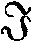

伦理是自由的理念。它是活的善，这活的善在自我意识中具有它的知识和意志，通过自我意识的行动而达到它的现实性；另一方面自我意识在伦理性的存在中具有它的绝对基础和起推动作用的目的。因此，伦理就是成为现存世界和自我意识本性的那种自由的概念。
因为意志的概念和它的定在（即特殊意志）的这种统一就是知识，所以就有了对理念的这两个环节的差别的意识，这就是说，现在这两个环节的每一个就其本身说来都是理念的整体，都是以理念的整体为它的基础和内容的。[1]
（甲）代替抽象的善的那客观伦理，通过作为无限形式的主观性而成为具体的实体。具体的实体因而在自己内部设定了差别，从而这些差别都是由概念规定的，并且由于这些差别，伦理就有了固定的内容。这种内容是自为地必然的，并且超出主观意见和偏好而存在的。这些差别就是自在自为地存在的规章制度。
补充（实体性的伦理） 整个伦理既有客观环节，又有主观环节，但是两者都只是伦理的形式。这里，善就是实体，就是说在客观的东西中充满着主观性。如果我们从客观方面来观察伦理，那么可以说，人们在其中不自觉具有伦理观念。安悌果尼[2]就是从这一含义宣称，谁也不知道法律是从什么地方来的；法律是永恒的，这就是说，法律是自在自为地存在的，它们是从事物本性中产生出来的规定。但是这个实体性的东西同样具有意识，尽管这种意识总是处在环节的地位的。
伦理性的东西就是理念的这些规定的体系，这一点构成了伦理性的东西的合理性。因此，伦理性的东西就是自由，或自在自为地存在的意志，并且表现为客观的东西，必然性的圆圈。这个必然性的圆圈的各个环节就是调整个人生活的那些伦理力量。个人对这些力量的关系乃是偶性对实体的关系，正是在个人中，这些力量才被观念着，而具有显现的形态和现实性。
补充（伦理性的实体和个人） 因为伦理性的规定构成自由的概念，所以这些伦理性的规定就是个人的实体性或普遍本质，个人只是作为一种偶性的东西同它发生关系。个人存在与否，对客观伦理说来是无所谓的，唯有客观伦理才是永恒的，并且是调整个人生活的力量。因此，人类把伦理看作是永恒的正义，是自在自为地存在的神，在这些神面前，个人的忙忙碌碌不过是玩跷跷板的游戏罢了
（乙） 实体在它这种现实的自我意识中认识自己，从而就是认识的客体。伦理性的实体，它的法律和权力，一方面作为对象，对主体说来都是存在的，而且是独立地——从独立这一词的最高涵义来说——存在着，它们是绝对的权威和力量，要比自然界的存在无限巩固。
附释 日、月、山、河以及我们周围的一切自然物体都存在着。它们对意识所具有的权威，不仅在于它们是存在着的而已，而且在于它们具有一种特殊本性。意识承认这种本性，而且在对待这些物体并在处理和利用它们时，总是顺应着这种本性的。至于伦理性的法律所具有的权威是无限崇高的，因为自然物体只是极其表面地、支离破碎地体现着合理性，而且把合理性隐藏在偶然性的外观中。
另一方面，伦理性的实体，它的法律和权力，对主体说来，不是一种陌生的东西，相反地，主体的精神证明它们是它所特有的本质。在它的这种本质中主体感觉到自己的价值，并且像在自己的、同自己没有区别的要素中一样地生活着。这是一种甚至比信仰和信任更其同一的直接关系。
附释 信仰和信任是和反思一同开始出现的，并以表象和差别为前提。例如，信仰多神教和是一个多神教徒这两者不是一回事。伦理性的东西在其中成为自我意识的现实生命力的那种关系，或更确切些说，那种缺乏关系的同一，诚然可以转变为信仰和信念的关系，和转变为通过进一步反思而产生的关系，即依据某些原因所作出的判断——这些原因在开始时可能是某些特殊目的、利益和考虑，是恐惧或希望，或者是历史情况；然而充分认识这种同一则属于能思维的概念的事。
法律和权力这些实体性的规定，对个人说来是一些义务，并拘束着他的意志的，因为个人作为主观的东西和在本身中没有规定性的东西，或者作为被规定了的特殊的东西，是同这些法律和权力有差别，因而把它们作为他的实体性的东西来对待的。
附释 伦理学中的义务论，如果是指一种客观学说，就不应包括在道德主观性的空洞原则中，因为这个原则不规定任何东西（第134节）。因此，这种义务论就是伦理必然性的圆圈的系统发展，将在这里第三篇中加以论述。这一论述不同于义务论的形式，其不同之处仅仅在于，下述各种伦理性的规定都表现为必然的关系，并且论述到此为止，而不再给每一规定加上结语说：“因此，这一规定对人们说来是一种义务。”
义务论不是一种哲学科学，它从现存的关系中获取它的素材，并表明这种素材同本人观念的联系，或同到处出现的原则以及思想、目的、冲动和感觉等等的联系。它还能把每一种义务，在与其他伦理关系相关中、与福利和意见相关中所产生的其他后果作为理由而补充进去。但是一种内在的、彻底的义务论不外是由于自由的理念而是必然的、因此是现实的那些关系在它们全部范围内即在国家中的发展。
具有拘束力的义务，只是对没有规定性的主观性或抽象的自由、和对自然意志的冲动或道德意志（它任意规定没有规定性的善）的冲动，才是一种限制。但是在义务中个人毋宁说是获得了解放。一方面，他既摆脱了对赤裸裸的自然冲动的依附状态，在关于应做什么、可做什么这种道德反思中，又摆脱了他作为主观特殊性所陷入的困境；另一方面，他摆脱了没有规定性的主观性，这种主观性没有达到定在，也没有达到行为的客观规定性，而仍停留在自己内部，并缺乏现实性。在义务中，个人得到解放而达到了实体性的自由。
补充（作为向自由前进的义务） 义务仅仅限制主观性的任性，并且仅仅冲击主观性所死抱住的抽象的善。当人们说，我们要自由，这句话的意思最初只是：我们要抽象的自由，因此国家的一切规定和组织便都成了对这种自由的限制。所以，义务所限制的并不是自由，而只是自由的抽象，即不自由。义务就是达到本质、获得肯定的自由。
伦理性的东西，如果在本性所规定的个人性格本身中得到反映，那便是德。这种德，如果仅仅表现为个人单纯地适合其所应尽——按照其所处的地位——的义务，那就是正直。
附释 一个人必须做些什么，应该尽些什么义务，才能成为有德的人，这在伦理性的共同体中是容易谈出的：他只须做在他的环境中所已指出的、明确的和他所熟知的事就行了。正直是在法和伦理上对他要求的普遍物。但从道德观点看，正直容易显现为一种较低级的东西，人们还必须超越正直而对自己和别人要求更高的东西；其实，要成为某种特殊的东西这种渴望，不会满足于自在自为的存在和普遍的东西；它只有在例外情形中才能获得独特性的意识。
正直的各个不同方面都同样可以叫做德，因为它们都同样是个人的特质（虽然同别人比起来，并不显得特别）。但是关于德的言论，容易迹近空话，因为这种言论尽是讲些抽象的和没有规定性的东西，并且这种言论中的论据和阐明都是对着作为一种任性或主观偏好的个人而提出的。在现存伦理状态中，当它的各种关系已经得到充分发展和实现的时候，真正的德只有在非常环境中以及在那些关系的冲突中，才有地位并获得实现。冲突必须是真正的，因为道德的反思可以到处为自己的目的制造冲突，并且使自己意识到是某种特殊物，意识到已经作出了牺牲。正因为如此，所以当社会和共同体还处在未开化状态时，尤其可以常常看到德本身的形式，因为在这里，伦理性的东西及其实现在很大程度上是个人偏好和个人特殊天才的表现。例如，古人特别对于海格立斯认为是有德的。又在古代国家，伦理还没有成长为独立发展和客观性这样一种自由体系，这个缺陷就必须由个人特有的天才来弥补。
因为关于德的学说不是一种单纯的义务论，它包含着以自然规定性为基础的个性的特殊方面，所以它就是一部精神自然史。
因为德是伦理性的东西而应用于特殊物，又因为从这个主观方面来看德是某种没有规定性的东西，所以对德的规定就出现了较多和较少的量的因素。因此对德的考察势必导致同德相对立的缺点或邪恶。亚里士多德正是这样做的，他按照德的正确涵义，把特殊的德规定成为既不过多也不过少的中间物。
采取义务的形式、然后采取德的形式的那种内容，与具有冲动的形式的那种内容是相同的（第19节附释）。冲动也同样以这种内容为其基础。但是，因为在冲动中这种内容还是属于直接意志和本性感觉，而没有发展到伦理性的规定的高度，所以冲动同义务和德具有共同的内容，而这个内容仅仅是一个抽象的对象。这个对象因为本身没有规定性，所以不含有划分冲动善恶的界限，或者抽象地从肯定的方面看，冲动是善的，或者抽象地从否定的方面看，冲动是恶的（第18节）。
补充（作为个人造诣的德） 一个人做了这样或那样一件合乎伦理的事，还不能就说他是有德的；只有当这种行为方式成为他性格中的固定要素时，他才可以说是有德的。德毋宁应该说是一种伦理上的造诣。如果我们现在已经不像以前那样常谈德，这是因为伦理已经不再是特殊个人性格的形式了。在世界各民族中，法国人最常谈德，这是因为在他们看来个人的伦理生活在更大程度上属于个人特性和行为的自然方式的问题。德国人则相反，他们更习惯于沉思，因此同一内容在德国人就采取了普遍性的形式。
但在跟个人现实性的简单同一中，伦理性的东西就表现为这些个人的普遍行为方式，即表现为风尚。对伦理事物的习惯，成为取代最初纯粹自然意志的第二天性，它是渗透在习惯定在中的灵魂，是习惯定在的意义和现实。它是像世界一般地活着和现存着的精神，这种精神的实体就这样地初次作为精神而存在。
补充（风尚、教育、习惯） 风尚是属于自由精神方面的规律，正如自然界有自己的规律，动物、树木、太阳都遵循着自己的规律一样。法和道德还没有达到叫做风尚的那种东西，即精神。在法中，特殊性还不是概念的特殊性，而只是自然意志的特殊性。同样，在道德的观点上，自我意识也还不是精神的意识，在那里问题只在于主体在他本身中的价值，就是说，主体按照善的东西比照恶的东西来规定自己，但他还具有任性的形式。反之，在这里，即在伦理的观点上，意志才是精神的意志，而且具有与自己相适应的实体性的内容。教育学是使人们合乎伦理的一种艺术。它把人看做是自然的，它向他指出再生的道路，使他的原来天性转变为另一种天性，即精神的天性，也就是使这种精神的东西成为他的习惯。在习惯中，自然意志和主观意志之间的对立消失了，主体内部的斗争平息了，于是习惯成为伦理的一部分，也像它成为哲学思想的一部分一样，因为哲学思想要求训练精神以反对任性的想法，并要求对这些任性的想法加以破坏和克服，来替合乎理性的思维扫清道路。又人死于习惯，这就是说，当他完全习惯于生活，精神和肉体都已变得迟钝，而且主观意识和精神活动之间的对立也已消失了，这时他就死了。因为一个人之所以在活动，是因为他还没有达到某种目的；而在争取达到目的时，他就要创造自己发挥自己。目的一经达到，活动和生命力也就消失了，接着而来的乃是对一切失去兴趣，也就是精神或肉体的死亡。
伦理实体性就这样地达到了它的法，法也获得了它的实效，这就是说，个人的自我意志和他自身的良心在伦理实体性中消失了，这种良心曾经自为地存在，也曾与伦理实体性相抗衡。当他成为伦理性的性格时，他就认识到他的起推动作用的目的就是普遍物，这种普遍物是不受推动的，而是在它的规定中表现为现实的合理性。他还认识到，他的尊严以及他的特殊目的的全部稳定性都建立在这种普遍物中，而且他确在其中达到了他的尊严和目的。主观性本身是实体的绝对形式和实体的实存的现实性，主体同作为他的对象、目的和力量的实体之间的区别，仅仅是形式上的区别，而且这种区别也就同时直接消失。
附释 主观性构成自由这一概念借以存在的基础（第106节）。在道德的观点上，主观性还是同自由、即主观性的概念有区别的，但是在伦理的观点上，它是这一概念的实存，而且适合于概念本身。
个人主观地规定为自由的权利，只有在个人属于伦理性的现实时，才能得到实现，因为只有在这种客观性中，个人对自己自由的确信才具有真理性，也只有在伦理中个人才实际上占有他本身的实质和他内在的普遍性（第147节）。
附释 一个父亲问：“要在伦理上教育儿子，用什么方法最好”，毕达哥拉斯派的人曾答说（其他人也会作出同样的答复）：“使他成为一个具有良好法律的国家的公民。”
补充（实验教育） 教育家想把人从日常一般生活中抽出，而在乡村里教育他（如卢梭的《爱弥尔》），但这种实验已经失败，因为企图使人同世界的规律疏隔是不可能的。虽然对青年的教育必须在偏静的环境中进行，但是切不要以为精神世界的芬芳气味到底不会吹拂这偏静的地方，也不要以为世界精神的力量是微弱而不能占据这些偏远地带的。个人只有成为良好国家的公民，才能获得自己的权利。
个人对他特殊性的权利也包含在伦理性的实体性中，因为特殊性是伦理性的东西实存的外部现象。
在普遍意志跟特殊意志的这种同一中，义务和权利也就合而为一。通过伦理性的东西，一个人负有多少义务，就享有多少权利；他享有多少权利，也就负有多少义务。在抽象法的领域，我有权利，别一个人则负有相应的义务；在道德的领域，对我自己的知识和意志的权利，以及对我自己的福利的权利、还没有、但是都应当同义务一致起来，而成为客观的。
补充（自由作为权利和义务的统一） 奴隶不可能有义务，只有自由人才有义务。如果一切权利都在一边，一切义务都在另一边，那么整体就要瓦解，因为只有同一才是我们这里所应坚持的基础。
伦理性的实体包含着同自己概念合一的自为地存在的自我意识，它是家庭和民族的现实精神。
补充（伦理性的东西作为具体的现实） 伦理性的东西不像善那样是抽象的，而是强烈地现实的。精神具有现实性，现实性的偶性是个人。因此，在考察伦理时永远只有两种观点可能：或者从实体性出发，或者原子式地进行探讨，即以单个的人为基础而逐渐提高。后一种观点是没有精神的，因为它只能做到集合并列，但是精神不是单一的东西，而是单一物和普遍物的统一。
这一理念的概念只能作为精神，作为认识自己的东西和现实的东西而存在，因为它是它本身的客观化、和通过它各个环节的形式的一种运动。因此它是：
第一，直接的或自然的伦理精神——家庭。
这种实体性向前推移，丧失了它的统一，进行分解，而达于相对性的观点，于是就成为，
第二，市民社会，这是各个成员作为独立的单个人的联合，因而也就是在形式普遍性中的联合，这种联合是通过成员的需要，通过保障人身和财产的法律制度，和通过维护他们特殊利益和公共利益的外部秩序而建立起来的。这个外部国家，
第三，在实体性的普遍物中，在致力于这种普遍物的公共生活所具有的目的和现实中，即在国家制度中，返回于自身，并在其中统一起来。
作为精神的直接实体性的家庭，以爱为其规定，而爱是精神对自身统一的感觉。因此，在家庭中，人们的情绪就是意识到自己是在这种统一中、即在自在自为地存在的实质中的个体性，从而使自己在其中不是一个独立的人，而成为一个成员。
补充（爱的概念） 所谓爱，一般说来，就是意识到我和别一个人的统一，使我不专为自己而孤立起来；相反地，我只有抛弃我独立的存在，并且知道自己是同别一个人以及别一个人同自己之间的统一，才获得我的自我意识。但爱是感觉，即具有自然形式的伦理。在国家中就不再有这种感觉了，在其中人们所意识到的统一是法律，又在其中内容必然是合乎理性的，而我也必须知道这种内容。爱的第一个环节，就是我不欲成为独立的、孤单的人，我如果是这样的人，就会觉得自己残缺不全。至于第二个环节是，我在别一个人身上找到了自己，即获得了他人对自己的承认，而别一个人反过来对我亦同。因此，爱是一种最不可思议的矛盾，决非理智所能解决的，因为没有一种东西能比被否定了的、而我却仍应作为肯定的东西而具有的这一种严格的自我意识更为顽强的了。爱制造矛盾并解决矛盾。作为矛盾的解决，爱就是伦理性的统一。
个人根据家庭统一体所享有的权利，首先是他在这统一体中的生活，只有在家庭开始解体，而原来的家庭成员在情绪上和实际上开始成为独立的人的时候，才以权利（作为特定单一性的抽象环节）的形式出现；从前他们在家庭中以之构成一个特定环节的东西，现在他们分别地只是从外部方面（财产、生活费、教育费等等）来接受。
补充（家庭和主观性） 其实，家庭的权利严格说来在于家庭的实体性应具有定在，因此它是反对外在性和反对退出这一统一体的权利。但是，再说一遍，爱是感觉，是一种主观的东西，对于这种主观的东西，统一无能为力。如果要求统一的话，那只能对按本性说来是外在的而不是决定于感觉的东西提出这种要求。
家庭是在以下三个方面完成起来的：
（一）婚姻，即家庭的概念在其直接阶段中所采取的形态；
（二）家庭的财产和地产，即外在的定在，以及对这些财产的照料；
（三）子女的教育和家庭的解体。
婚姻作为直接伦理关系首先包括自然生活的环节。因为伦理关系是实体性的关系，所以它包括生活的全部，亦即类及其生命过程的现实（见《哲学全书》，第167节以下和第288节以下）[3]。但其次，自然性别的统一只是内在的或自在地存在的，正因为如此，它在它的实存中纯粹是外在的统一，这种统一在自我意识中就转变为精神的统一，自我意识的爱。
补充（婚姻的概念） 婚姻实质上是伦理关系。以前，特别是大多数关于自然法的著述，只是从肉体方面，从婚姻的自然属性方面来看待婚姻，因此，它只被看成一种性的关系，而通向婚姻的其他规定的每一条路，一直都被阻塞着。至于把婚姻理解为仅仅是民事契约，这种在康德那里也能看到的观念，同样是粗鲁的，因为根据这种观念，双方彼此任意地以个人为订约的对象，婚姻也就降格为按照契约而互相利用的形式。第三种同样应该受到唾弃的观念，认为婚姻仅仅建立在爱的基础上。爱既是感觉，所以在一切方面都容许偶然性，而这正是伦理性的东西所不应采取的形态。所以，应该对婚姻作更精确的规定如下：婚姻是具有法的意义的伦理性的爱，这样就可以消除爱中一切倏忽即逝的、反复无常的和赤裸裸主观的因素。
婚姻的主观出发点在很大程度上可能是缔结这种关系的当事人双方的特殊爱慕，或者出于父母的事先考虑和安排等等；婚姻的客观出发点则是当事人双方自愿同意组成为一个人，同意为那个统一体而抛弃自己自然的和单个的人格。在这一意义上，这种统一乃是作茧自缚，其实这正是他们的解放，因为他们在其中获得了自己实体性的自我意识。
附释 因此，我们的客观使命和伦理上的义务就在于缔结婚姻。婚姻的外在出发点的性质，按事件本性说来，总是偶然的，而且特别以反思的发展水平为转移的。这理有两个极端，其中一个是，好心肠的父母为他们作好安排，作了一个开端，然后已被指定在彼此相爱中结合的人，由于他们知道自己的命运，相互熟悉起来，而产生了爱慕。另一个极端则是爱慕首先在当事人即在这两个无限特异化的人的心中出现。
可以认为以上第一个极端是一条更合乎伦理的道路，因为在这条道路上，结婚的决断发生在先，而爱慕产生在后，因而在实际结婚中，决断和爱慕这两个方面就合而为一。
在上述第二个极端中，无限特殊的独特性依照现代世界的主观原则（见上述第124节附释）提出了自己的要求。
但是在以性爱为主题的现代剧本和各种文艺作品中，可以见到彻骨严寒的原质被放到所描述的激情热流中去，因为它们把激情完全同偶然性结合起来，并且把作品的全部兴趣表述为似乎只是依存于这些个人；这对这些个人说来可能是无限重要，但就其本身说来完全不是这么一回事。
补充（婚姻和爱慕） 在不太尊重女性的那些民族中，父母从不征询子女的意见而任意安排他们的婚事。他们也听从安排，因为感觉的特殊性还没有提出任何要求。从少女看来，问题只是嫁个丈夫，从男子看来只是娶个妻子。在其他一些情况下，对财产、门第、政治目的等考虑可能成为决定性因素。这里，由于把婚姻当作图达其他目的的手段，所以可能发生巨大困难。相反地，在现代，主观的出发点即恋爱被看作唯一重要因素。大家都理会到必须等待，以俟时机的到来，并且每个人只能把他的爱情用在一个特定人身上。
婚姻的伦理方面在于双方意识到这个统一是实体性的目的，从而也就在于恩爱、信任和个人整个实存的共同性。在这种情绪和现实中，本性冲动降为自然环节的方式，这个自然环节一旦得到满足就会消灭。至于精神的纽带则被提升为它作为实体性的东西应有的合法地位，从而超脱了激情和一时特殊偏好等的偶然性，其本身也就成为不可解散的了。
附释 上面已经指出（第75节），就其实质基础而言，婚姻不是契约关系，因为婚姻恰恰是这样的东西，即它从契约的观点、从当事人在他们单一性中是独立的人格这一观点出发来扬弃这个观点。由于双方人格的同一化，家庭成为一个人，而其成员则成为偶性（实质上，实体乃是偶性同实体本身的关系——见《哲学全书》，第98节[4]）。这种同一化就是伦理的精神。这种伦理的精神本身，被剥去了表现在它的定在中即在这些个人和利益（这些利益受到时间和许多其他因素的规定）中的各色各样的外观，就浮现出供人想象的形态，并且曾经作为家神等而受到崇敬。这种伦理的精神一般就是婚姻和家庭的宗教性即家礼之所在。再进一步的抽象化就在于把神或实体性的东西同它的定在相分离，连同对精神统一的感觉和意识，一并固定起来，这就是人们误谬地所谓“纯洁”的爱。这种分离是和僧侣观点相通的，因为僧侣观点把自然生活环节规定为纯粹否定的东西；正由于它建立了这种分离，所以就赋予自然生活环节本身以无限重要性。
补充（婚姻的神圣） 婚姻和蓄妾不同。蓄妾主要是满足自然冲动，而这在婚姻却是次要的。因此，在婚姻中提到性的事件，不会脸红害臊，而在非婚姻关系中就会引起羞怯。根据同样原因，婚姻本身应视为不能离异的，因为婚姻的目的是伦理性的，它是那样的崇高，以致其他一切都对它显得无能为力，而且都受它支配。婚姻不应该被激情所破坏，因为激情是服从它的。但是婚姻仅仅就其概念说是不能离异的，其实正如基督所说的：只是“为了你的铁石心肠”，[5]离婚才被认许。因为婚姻含有感觉的环节，所以它不是绝对的，而是不稳定的，且其自身就含有离异的可能性。但是立法必须尽量使这一离异可能性难以实现，以维护伦理的法来反对任性。
契约的订定本身就包含着所有权的真实移转在内（第79节），同样，庄严地宣布同意建立婚姻这一伦理性的结合以及家庭和自治团体（教会在这方面参加进来是另一规定，不在本书论列之内）[6]对它相应的承认和认可，构成了正式结婚和婚姻的现实。只有举行了这种仪式之后，夫妇的结合在伦理上才告成立，因为在举行仪式时所使用的符号，即语言，是精神的东西中最富于精神的定在（第78节），从而使实体性的东西得以完成。其结果，感性的、属于自然生活的环节，就作为一种属于伦理结合的外部定在的后果和偶性，而被设定在它的伦理关系中，至于伦理结合则完全在于互爱互助。
附释 如果有人问，什么才应该是婚姻的主要目的，以便据以制定或评断法规，那么，这一问题应该了解为：婚姻现实的各个方面，哪一方面应该被认为最本质的？其实任何一个方面单独说来都不构成自在自为地存在的内容（即伦理性的东西）的全部范围。实存的婚姻可能在这一方面或那一方面有所欠缺，而仍无害于婚姻的本质。
缔结婚姻本身即婚礼把这种结合的本质明示和确认为一种伦理性的东西，凌驾于感觉和特殊倾向等偶然的东西之上。如果这种婚礼只是当作外在的仪式和单纯的所谓民事命令，那么这种结婚就没有其他意义，而似乎只是为了建立和认证民事关系，或者它根本就是一种民事命令或教会命令的赤裸裸的任意。这种命令不仅对婚姻的本性说无足轻重，而且还辱没了爱的情感，并作为一种异物而破坏这种结合的真挚性，因为，由于命令之故，心情就赋予这种结婚仪式以意义，并把它看作全心全意彼此委身的先决条件。这种意见妄以为自己提供了爱的自由、真挚和完美的最高概念，其实它倒反否认了爱的伦理性，否认了较高的方面，即克制和压抑着单纯自然冲动的那一方面，这种克制和压抑早已天然地含蕴在羞怯中，并由于意识达到更多的精神上规定而上升为贞洁和端庄。更确切些说，这种意见排斥了婚姻的伦理规定，这种伦理性的规定在于，当事人的意识从它的自然性和主观性中结晶为对实体物的思想，它不再一直保留着爱慕的偶然性和任性，而是使婚姻的结合摆脱这种任性的领域，使自己在受家神约束中服从实体性的东西。它贬低感性环节，使其受真实的和伦理的婚姻关系的制约、受承认婚姻结合为伦理性的结合的制约。
只有厚颜无耻和支持这种无耻的理智才不能领会实体性的关系的思辨本性，但是伦理上纯洁的心情以及基督教民族的立法莫不与这种思辨本性相适应的。
补充（“自由”恋爱） 弗里德里希·封·施雷格尔在所著《卢辛德》一书中和它的一个信徒在《一个匿名者的信札》（卢卑克和莱比锡，1800年版）中，提出了一种见解，认为结婚仪式是多余的，是一种形式，可以把它抛弃，因为爱才是实体性的东西，甚至爱由于隆重的仪式会丧失它的价值。他们认为感性地委身于对方对证明爱的自由和真挚说来是必要的。这种论据对诱奸者说来原不生疏。就男女关系而论，必须指出，女子委身事人就丧失了她的贞操；其在男子则不然，因为他在家庭之外有另一个伦理活动范围。女子的归宿本质上在于结婚。因此，所要求于她的是：她的爱应采取婚姻的形态，同时爱的各种不同环节应达到它们彼此间真正合乎理性的关系。
两性的自然规定性通过它们的合理性而获得了理智的和伦理的意义。这种意义为差别所规定，作为概念的那种伦理性的实体性在它本身中分为这种差别，以便从中获得它作为具体统一的生命力。
因此，一种性别是精神而自身分为自为的个人的独立性和对自由普遍性的知识和意志，也就是说分为思辨的思想的那自我意识和对客观的最终目的的希求。另一种性别是保持在统一中的精神，它是采取具体单一性和感觉的形式的那种对实体性的东西的认识和希求。在对外关系中，前一种性别是有力的和主动的，后一种是被动的和主观的。因此，男子的现实的实体性的生活是在国家、在科学等等中，否则就在对外界和对他自己所进行的斗争和劳动中，所以他只有从他的分解中争取同自身的独立统一，在家庭中他具有对这个统一的安静的直观，并过着感觉的主观的伦理生活。至于女子则在家庭中获得她的实体性的规定，她的伦理性的情绪就在于守家礼。
附释 因此，一本非常推崇家礼的著作，即索福客俪[7]的《安悌果尼》，说明家礼主要是妇女的法律；它是感觉的主观的实体性的法律，即尚未完全达到现实的内部生活的法律；它是古代的神即冥国鬼神的法律；它是“永恒的法律，谁也不知道它是什么时候出现的”；这种法律是同公共的国家的法律相对立的。这种对立是最高的伦理性的对立，从而也是最高的、悲剧性的对立；该剧本是用女性和男性把这种对立予以个别化（参阅《精神现象学》，第383页以下，第417页以下[8]）。
补充（妇女的教养） 妇女当然可以教养得很好，但是她们天生不配研究较高深的科学、哲学和从事某些艺术创作，这些都要求一种普遍的东西。妇女可能是聪明伶俐，风趣盎然，仪态万方的，但是她们不能达到优美理想的境界。男女的区别正像动物与植物的区别：动物近乎男子的性格，而植物则近乎女子的性格，因为她们的舒展比较安静，且其舒展是以模糊的感觉上的一致为原则的。如果妇女领导政府，国家将陷于危殆，因为她们不是按普遍物的要求而是按偶然的偏好和意见行事的。妇女——不知怎么回事——仿佛是通过表象的气氛而受到教育，她们在很大程度上是通过实际生活而不是通过获得知识而受到教育的。至于男子则唯有通过思想上的成就和很多技术上的努力，才能达到他的地位。
婚姻本质上是一夫一妻制，因为置身在这个关系中并委身于这个关系的，乃是人格，是直接的排他的单一性。因此，只有从这种人格全心全意的相互委身中，才能产生婚姻关系的真理性和真挚性（实体性的主观形式）。人格如果要达到在他物中意识到他自己的权利，那就必须他物在这同一中是一个人即原子式的单一性，才有可能。
附释 婚姻，也就是按本质说一夫一妻制，是任何一个共同体的伦理生活所依据的绝对原则之一。因此，婚姻制度被称为神的或英雄的建国事业中的环节之一。
其次，婚姻是由于本身无限独特的这两性人格的自由委身而产生的，所以在属于同一血统、彼此熟知和十分亲密的这一范围内的人，不宜通婚。在这一范围内，个人相对之间不具有自身独特的人格。因此婚姻必须相反地在疏远的家庭间和异宗的人格间缔结。血亲间通婚是违背婚姻的概念的，从而违背真实的自然的感觉的，因为按照婚姻的概念，婚姻是自由的那伦理性的行动，而不是建立在直接天性及其冲动上的结合。
附释 人们有时认为婚姻本身不是建立在自然法上，而光是建立在性的本能冲动上，并且还把它看做任意缔结的契约。人们有时甚至根据男女人口比数的物质关系来替一夫一妻制找外在的根据，有人光提出幽暗的感情作为禁止血亲通婚的理由。以上这些见解都是以自然状态和法的自然性那种普通观念为根据，而缺乏合理性和自由的概念的。
补充（血亲通婚） 首先，血亲之间通婚已为羞耻之心所不容，但是嫌弃这种通婚在事物的概念中就得到了论证。就是说，已经结合起来的，不可能通过婚姻而初次结合起来。单从自然关系的方面来看，大家都知道，属于同族动物之间交配而产生的小动物比较弱，因为应予结合的东西，必须首先是分离的。生殖力好比精神力所由以获得再生的对立愈是显明，它就愈强大。亲密、相识和共同活动的习惯都不应该在结婚以前存在，而应该初次在婚姻关系中发生，这种发展，其内容愈丰富，方面愈多，其价值也愈大。
家庭作为人格来说在所有物中具有它的外在实在性。它只有在采取财富形式的所有物中才具有它的实体性人格的定在。
家庭不但拥有所有物，而且作为普遍的和持续的人格它还需要设置持久的和稳定的产业，即财富。这里，在抽象所有物中单单一个人的特殊需要这一任性环节，以及欲望的自私心，就转变为对一种共同体的关怀和增益，就是说转变为一种伦理性的东西。
附释 在关于国家创立或至少关于文明社会生活创立的传说中，实施固定的所有制是同实施婚姻制度相联系的。至于上述家庭财富的性质如何，用哪种适当方式来巩固它，这类问题将在市民社会一章中予以解答[9]。
家庭作为法律上人格，在对他人的关系上，以身为家长的男子为代表。此外，男子主要是出外谋生，关心家庭需要，以及支配和管理家庭财产。这是共同所有物；所以家庭的任何一个成员都没有特殊所有物，而只对于共有物享有权利。但是这种权利可能同家长的支配权发生冲突，这是因为在家庭中伦理性的情绪还在直接的阶段（第158节），于是不免于分歧和偶然性之弊。
通过婚姻而组成了新的家庭，这个家庭对它所由来的宗族和家族来说，是一个自为的独立体。它同这些宗族和家族的联系是以自然血统为基础的，但是它本身是以伦理性的爱为基础的。因此，个人所有物同他的婚姻关系有本质上联系，而同他的宗族或家族的联系则较为疏远。
附释 对夫妻共同财产加以限制的婚姻协定，以及继续给予女方以法律上辅助等等的安排，只有在婚姻关系由于自然的死亡和离婚等原因而消灭的情况下，才有意义。这些都是保障性的措施，以保证在这种情况下家庭成员各从共有物中取得其应有部分。
补充（亲族和家庭） 许多立法把更大规模的家庭固定下来，并把这种家庭看做是本质上的结合；至于另一种结合，即各个特别家庭的结合，则相反地显得比较次要。例如在古代罗马法中，在非严格的婚姻关系中的女方，同她的亲族的关系比同她的儿女和丈夫的关系还要密切。又在封建法时代，为了维持splendor familiae〔门楣光辉〕，于是有必要光把男性算做家庭成员，并以整个大家族为主，至于新成立的小家庭同大家族相比则显得非常渺小。尽管如此，各个新家庭比之疏远的血亲关系是更本质的东西。夫妇与子女组成真正的核心，以与在某种意义上亦称为“家庭”的东西相对抗。因此，个人的财产关系同婚姻之间的联系必然要比它同疏远的血亲关系之间的联系更为重要。
在实体上婚姻的统一只是属于真挚和情绪方面的，但在实存上它分为两个主体。在子女身上这种统一本身才成为自为地存在的实存和对象；父母把这种对象即子女作为他们的爱、他们的实体性的定在而加以爱护。从自然的观点看来，作为父母而直接存在的人这一前提，在这里变成了结果。这是一个世世代代无穷进展的历程，每一代产生下一代而又以前一代为前提；这就是家神的简单精神在有限自然界中作为类而显示它存在的一种方式。
补充（父母的爱） 在夫妻之间爱的关系还不是客观的，因为他们的感觉虽然是他们的实体性的统一，但是这种统一还没有客观性。这种客观性父母只有在他们的子女身上才能获得，他们在子女身上才见到他们结合的整体。在子女身上，母亲爱她的丈夫，而父亲爱他的妻子，双方都在子女身上见到了他们的爱客观化了。在财产中，统一只是体现在外在物中，至于在子女身上，它体现在精神的东西中，在其中父母相互恩爱，而子女则得到父母的爱。
子女有被抚养和受教育的权利，其费用由家庭共同财产来负担。父母有要求子女为自己服务——姑且说是服务——的权利，但仅以一般性的照顾家庭为基础，并以此为限。同样，父母矫正子女任性的权利，也是受到教训和教育子女这一目的所规定的。惩罚的目的不是为了公正本身，而是带有主观的、道德的性质，就是说，对还在受本性迷乱的自由予以警戒，并把普遍物陶铸到他们的意识和意志中去。
补充（教育子女） 应该怎样做人，靠本能是不行的，而必须努力。子女受教育的权利就是以这一点为根据的。在家长制政体下的人民亦同，他们受到公库的给养，而不视为独立的人和成年人。因此，所要求于子女的服务，只能具有教育的目的，并与教育有关。这些服务不应以自身为目的，因为把子女当做奴隶，一般说来，是最不合乎伦理的。教育的一个主要环节是纪律，它的含义就在于破除子女的自我意志，以清除纯粹感性的和本性的东西。不得以为这里单靠善就够了，其实直接意志正是根据直接的恣性任意，而不是根据理由和观念行动的。如果对子女提出理由，那就等于听凭他们决定是否要接受这些理由，这样来，一切都以他们的偏好为依据了。由于父母构成普遍的和本质的东西，所以子女需要服从父母。如果不培养子女的服从感——这种服从感使他们产生长大成人的渴望，——他们就会变成唐突孟浪，傲慢无礼。
子女是自在地自由的，而他们的生命则是仅仅体现这种自由的直接定在。因此他们不是物体，既不属于别人，也不属于父母。从家庭关系说，对他们所施教育的肯定的目的在于，灌输伦理原则，而这些原则是采取直接的、还没有对立面的感觉的那种形式的，这样，他们的心情就有了伦理生活的基础，而在爱、信任和服从中度过它的生活的第一个阶段。又从同一关系说，这种教育还具有否定的目的，就是说，使子女超脱原来所处的自然直接性，而达到独立性和自由的人格，从而达到脱离家庭的自然统一体的能力。
附释 罗马时代，子女处于奴隶地位，这是罗马立法的一大污点。伦理在其最内部和最娇嫩的生命中所受的这种侮辱，是了解罗马人在世界历史上的地位以及他们的法律形式主义倾向[10]的一个最重要关键。
儿童所以感到有受教育的必要，乃是出于他们对自己现状不满的感觉，也就是出于他们要进入所想望的较高阶段即成年人世界的冲动和出于他们长大成人的欲望。游戏论的教育学认为稚气本身就具有自在的价值，于是就把稚气给予儿童，并把认真的事物和教育本身在儿童面前都降为稚气的形式，但这种形式就连儿童自己也认为不很高明的。这种教育学乃是把自己感到还处在没有成熟的状态中的儿童，设想为已经成熟，并力求使他们满足于这种状态。但是这样来，它破坏了、玷辱了他们对更好东西的真实的、自发的要求。它一方面使儿童对精神世界实体性的关系漠不关心和麻木不仁；另一方面使他们轻视人，因为人自己对儿童表现得像儿童那样稚气可鄙，最后，使他们产生自以为高明的那种虚无心和自负。
补充（儿童的感觉） 作为一个孩子，人必然有一个时期处于为父母所爱和信任的环境中，而理性的东西也必然在他身上表现为他自己特有的主观性。在他幼年时代，母亲的教育尤其重要，因为伦理必须作为一种感觉在儿童心灵中培植起来。必须指出，总的说来，子女之爱父母不及父母之爱子女，这是因为子女正迎着独立自主前进，并日益壮大起来，于是会把父母丢在后面；至于父母则在子女身上获得了他们结合的客观体现。
由于婚姻只是一种直接的伦理理念，所以它是在真挚的主观情绪和感觉中获得了它的客观现实。它的实存的最初偶然性也就在这里。强迫结婚既然很少可能发生，同时，当两个主体的情绪和行动变得水火不相容时，也很少可能有单纯法的积极的纽带来硬把他们联系在一起。于是遂要求第三个[11]伦理性的权威来维持婚姻（伦理的实体性）的法，以对抗出于这种敌对情绪的单纯的意见，以对抗只是一时脾气的偶然性，如此等等。这种权威把上述各种情形同完全隔阂相区别，只有在确证完全隔阂的情况下才准离婚。
补充（离婚） 因为婚姻所依存的只是主观的、偶然性的感觉，所以它是可以离异的。相反地，国家是不容分裂的，因为国家所依存的乃是法律。诚然，婚姻应该是不可离异的，但我们也只是说“应该”而已。又因为婚姻是伦理性的东西，所以离婚不能听凭任性来决定，而只能通过伦理性的权威来决定，不论是教堂或法院都好。如果好比由于通奸而发生了完全隔阂，那么宗教的权威也必须准其离婚。
家庭的伦理上解体在于，子女经教养而成为自由的人格，被承认为成年人，即具有法律人格，并有能力拥有自己的自由财产和组成自己的家庭。儿子成为家长，女儿成为妻子，从此他们在这一新家庭中具有他们实体性的使命。同这一家庭相比，仅仅构成始基和出发点的第一个家庭就退居次要地位，更不必说宗族了，因为它是一种抽象的，是没有任何权利的。
由于父母特别是父亲的死亡所引起家庭的自然解体，就财产来说，发生继承的后果。这种继承按其本质就是对自在的共同财产进行独特的占有。这种占有是在有远房亲属以及在市民社会中个人和家庭各自独立分散的情况下进行的；因此，由于家庭的统一感越来越淡薄，又由于每一次婚姻放弃了以前的家庭关系而组成了新的独立的家庭，这种财产移转也就越来越不确定。
附释 有这样的想法：继承的基础乃是由于死亡而财产成为无主之物，作为无主物，它便归首先占有者所有，而取得占有的多半是亲属，因为他们通常是死者最接近的人。于是为了维持秩序，这种经常发生的偶然事件就通过实定法而上升为规则。殊不知这种想法忽视了家庭关系的本性。
由于家庭的解体，个人的任性就获得了自由。一方面，他愈加按照单一性的偏好、意见和目的来使用他的全部财产；另一方面，他把周围一批朋友和熟人等等看成是他的家人，并在遗嘱中如此声明，使之发生继承的法律效果。
附释 以意志作这样一种财产处理似乎是以这样一批人的组成为其伦理根据。但在组成时有很多的偶然性、任性追求自私目的的企图等等因素在起作用——尤其是因为这种组成与立遗嘱有关，——致使伦理环节变成某种非常模糊的东西。承认有权任意订立遗嘱，很容易造成伦理关系的破坏，并引起卑鄙的钻营和同样卑鄙的顺从。这种承认更使愚昧任性和奸诈狡猾获得机会和权能，把立遗嘱人死亡后（那时财产已非为他所有）生效的虚荣的和专横而困扰的条件，同所谓善举和馈赠结合起来。
家庭成员成为独立的法律上人格（第177节）这一原则，使在家庭范围内部出现了一种任性以及在自然继承人中间的差别。然而这种任性与差别应当受到严格的限制，以免破坏家庭的基本关系。
附释 不能把死亡者赤裸裸的直接任性建立为立遗嘱权的原则，尤其如果这种任性违反了家庭的实体性的法。其实，主要是家庭对已死家庭成员的心爱和崇敬，才使它在他死后还重视他的任性。这种任性本身不包含任何比家庭法更值得尊重的东西，恰恰相反。又有人认为最后意志的处分之所以有效，就在于别人对它任意承认。这样一种有效性，只有在家庭关系（遗嘱处分是它所固有的）变得更加疏远而无效时，才能被认许。如果这种家庭关系实际上存在而又无效的话，那是不合乎伦理的。扩大上述任性的有效性以对抗家庭关系，就等于削弱后者的伦理性。
把家庭内部的这种任性确立为继承的主要原则，乃是罗马法的残酷性和不合伦理性的一部分，上已述及。根据罗马法，父亲可以把儿子出卖，如果儿子被人释放而获得自由，他又重新处在父权之下。只有在他第三次从奴役中被释放而获得自由之后，他才算是实际上自由的人。又根据罗马法，一般说来，儿子不能依法成为成年人，也没有法律上人格，他只能占有战利品（peculium castrense）作为他的所有物。如果他经过三次被卖、三次获释而脱离了父权之后，这时如无遗嘱规定，他就不能同其他依旧处于父权下的一些人一同继承。同样，妻子如果不是处于作为奴隶关系的婚姻关系中（in manum conveniret，in mancipio esset），而是作为matrona〔主妇〕的话，她就不是新家庭的成员，然而这一家庭她正是通过结婚而协作建立起来的，而且现在实际上是她的家。但她依然属于她出生的那个家庭。因此，她被排除于实际上是她的家庭的财产继承之外，而这个家庭也不继承妻子和母亲的财产。
随后，由于对合理性的感情的增长，审判上规避这些或那些法律中不合伦理性的部分而不予采用。例如审判上借助bonorum possessio〔资产占有〕（这一术语又同possessio bonorum〔财产占有〕一词有别，但这是渊博的法学专家们进行研究的问题）一词来代替hereditas〔继承〕[12]，又通过拟制把filia〔女儿〕改称filius〔儿子〕。前面已经指出（第3节附释），这一点对裁判官说来是一种悲惨的必然性，因为他必须用机巧的手段，把理性的东西偷运进去，来对抗坏的法律，或至少对抗它们所产生的某些后果。各种最重要制度的极端不稳定性，以及为了防止这些法律所产生的恶果而进行杂乱的立法工作，都是与这种情况有联系的。
在罗马人立遗嘱时这种任性的权力引起了哪些不合乎伦理的后果，从历史中、在卢西安和其他人的描写中可以充分看到。
婚姻是在直接阶段中的伦理，依据它的本性，它必然是实体性的关系、自然的偶然性和内部任性的混合体。如果现在由于子女的奴隶地位，由于上述其他种种法律规定并与之相关联的规定，又完全由于罗马人离婚并不困难，于是任性被赋予优越的地位，以对抗实体性的法（甚至西塞罗——他在所著《义务论》（De Officiis）和在其他作品中到处说着不知道多少关于Honestum〔诚实〕和Decorum〔礼节〕的漂亮话——都作了一番投机，他逐出他的妻子，而用再娶新嫁娘的妆奁来偿还债务），那么，这就等于替败坏风尚铺平一条合法的道路，或更正确些说，法律成了败坏风尚的必要条件。
制定继承法而用信托遗赠或指定后备继承人的办法来保持家庭或门楣光辉，不论是排除女儿而只让儿子继承，或排除其他子女而只让长子继承都好，或者一般地使继承人之间受到不平等的待遇也好，总之，这种制度一方面破坏了财产自由的原则（第62节）；另一方面，它是以绝对无权获得承认的一种任性为基础的，或更正确些说，是以希望维持这一宗族或家族而不是这一家庭这种思想为基础的。但是，不是这一家族或宗族而是家庭本身才是理念，而有权获得承认。伦理的形态将由于财产自由与平等继承权而得到维持，因为家庭不会由于相反的情形而得到维持的。
这些制度，好比罗马那样的制度，一般地误解了婚姻法（第172节）。婚姻完全在于组成一个独特的现实的家庭，同这种家庭相比，一般所谓的家庭，stirps〔家系〕或gens〔氏族〕，只是一种抽象（第177节），由于世代相隔，它愈来愈生疏，愈来愈不现实。爱是婚姻的伦理性的环节，作为爱，它是一种感觉，它的对象是现实的当前的人，而不是一种抽象。
这种理智的抽象之表现为罗马帝国的世界史原则，见下述第356节。
但在更高政治领域中出现的长子世袭权连同不可让与的宗族财产，却不是一种任性，而是从国家理念中产生出来的必然结果。关于这一点见下述第306节。
补充（遗嘱） 在罗马早期，父亲可以剥夺其子女的继承权，如同他可以把他们杀死一样。后来，他再不许这样做了。人们总想把不合乎伦理的东西同它的伦理化之间的这种不彻底性建成一种体系。坚持这种不彻底性就是德国继承法所以是烦难和错误的原因。立遗嘱当然是容许的，但是我们的观点应该是，这种任性的权利必须随着家庭成员的分散和疏远而产生或扩大；其次，用遗嘱造成的所谓友谊家庭，只有在缺乏婚姻所组成的较亲近的家庭和缺乏子女时，才能成立。遗嘱一般是跟那些令人生厌和惹人不快的事联系着的，因为在遗嘱中我总是宣布哪些人是我所宠爱的。然而宠爱是任性的，它可用这种或那种不光彩的手法获得，也可能同这种或那种愚蠢的理由相联结，此外，被指定为继承人的人可能因此被要求去做最卑鄙龌龊的事。在英国，异想天开的事屡见不鲜，而与遗嘱相关的愚蠢想法更是层出不穷。
家庭自然而然地和本质地通过人格的原则分成多数家庭，这些家庭一般都以独立的具体的人自居，因而相互见外地对待着。换句话说，由于家庭还是在它的概念中的伦理理念，所以结合在家庭的统一中的各个环节必须从概念中分离出来而成为独立的实在性。这就是差别的阶段。首先抽象地说，这种情况提供特殊性的规定，诚然这种特殊性与普遍性有关，不过普遍性是基础，尽管还只是内部的基础；因此，普遍性只是在作为它的形式的特殊性中假象地映现出来。所以，这种反思关系首先显示为伦理的丧失，换句话说，由于伦理作为本质必然假象地映现出来（见《哲学全书》，第64节以下，第81节以下）[13]，所以这一反思关系就构成了伦理性的东西的现象界，即市民社会。
附释 家庭的扩大，作为它向另一个原则的过渡，在实存中，有时是家庭的平静扩大而成为民众，即民族，所以民族是出于共同的自然渊源的，有时分散的家庭团体通过霸道者的暴力或出于自愿而集合一起，自愿结合是由于相互钩系的需要和相互满足这些需要所引起的。
补充（作为特殊性的领域的社会） 这里，普遍性是以特殊性的独立性为出发点，从这一观点看，伦理看来是丧失了，因为对意识说来，最初的东西、神的东西和义务的渊源，正是家庭的同一性。但是，现在却出现了这样的关系，即特殊物对我说来应当成为最初规定者，从而伦理性的规定也就被扬弃了。其实，这不过是我的错误，因为在我信以为坚持着特殊物的时候，联系的必然性和普遍物依旧是最初的和本质的东西。所以我终究还是在假象的阶段上，并且当我的特殊性对我说来还是规定者、即还是目的的时候，我也正因此而为普遍性服务，正是这种普遍性归根到底支配着我。
[1] 第3版，第220节以下和第366节以下。——拉松版
[2] 第3版，第150节。——译者
[3] 《新约全书》，马太福音，第19章，第8节。——译者
[5] 索福客俪，公元前496—前406年，古希腊悲剧作家。——译者
[6] 《精神现象学》，拉松版，第282页以下，第309页以下。——拉松版
[9] 婚姻当事人双方是其他两个权威。——译者
[10] 市民法上的继承称hereditas，裁判官法上的继承称bonorum possessio。——译者
[11] 第3版，第115节以下，第131节以下。——拉松版
具体的人作为特殊的人本身就是目的；作为各种需要的整体以及自然必然性与任性的混合体来说，他是市民社会的一个原则。但是特殊的人在本质上是同另一些这种特殊性相关的，所以每一个特殊的人都是通过他人的中介，同时也无条件地通过普遍性的形式的中介，而肯定自己并得到满足。这一普遍性的形式是市民社会的另一个原则。
补充（市民社会的概念） 市民社会是处在家庭和国家之间的差别的阶段，虽然它的形成比国家晚。其实，作为差别的阶段，它必须以国家为前提，而为了巩固地存在，它也必须有一个国家作为独立的东西在它面前。此外，市民社会是在现代世界中形成的，现代世界第一次使理念的一切规定各得其所。如果把国家想象为各个不同的人的统一，亦即仅仅是共同性的统一，其所想象的只是指市民社会的规定而言。许多现代的国家法学者都不能对国家提出除此之外任何其他看法。在市民社会中，每个人都以自身为目的，其他一切在他看来都是虚无。但是，如果他不同别人发生关系，他就不能达到他的全部目的，因此，其他人便成为特殊的人达到目的的手段但是特殊目的通过同他人的关系就取得了普遍性的形式，并且在满足他人福利的同时，满足自己。由于特殊性必然以普遍性为其条件，所以整个市民社会是中介的基地；在这一基地上，一切癖性、一切秉赋、一切有关出生和幸运的偶然性都自由地活跃着；又在这一基地上一切激情的巨浪，汹涌澎湃，它们仅仅受到向它们放射光芒的理性的节制。受到普遍性限制的特殊性是衡量一切特殊性是否促进它的福利的唯一尺度。
利己的目的，就在它的受普遍性制约的实现中建立起在一切方面相互倚赖的制度。个人的生活和福利以及他的权利的定在，都同众人的生活、福利和权利交织在一起，它们只能建立在这种制度的基础上，同时也只有在这种联系中才是现实的和可靠的。这种制度首先可以看成外部的国家，即需要和理智的国家。
理念在自己的这种分解中，赋予每个环节以独特的定在，它赋予特殊性以全面发展和伸张的权利，而赋予普遍性以证明自己既是特殊性的基础和必要形式、又是特殊性的控制力量和最后目的的权利。正是这种在两极分化中消失了的伦理制度，构成了理念的实在性的抽象环节。这里，理念只是作为相对的整体和内在的必然性而存在于这种外界现象的背后。[14]
补充（特殊和普遍的不可分性） 这里，伦理性的东西已丧失在它的两极中，家庭的直接统一也已涣散而成为多数。这里，实在性就是外在性，就是概念的分解，概念的各个环节的独立——这些环节现在已经获得了它们的自由和定在。在市民社会中特殊性和普遍性虽然是分离的，但它们仍然是相互束缚和相互制约的。其中一个所做的虽然看来是同另一个相对立的，并且以为只有同另一个保持一定距离才能存在，但是每一个毕竟要以另一个为其条件。例如，大部分人认为纳税损害了他们的特殊性，是同他们敌对的，并且妨害了他们的目的。然而，尽管这看来是真实的，终究没有普遍物，目的的特殊性就不可能达到。况且公民不缴纳任何捐税的国家，也不见得由于特殊性的力量加强而显得优越。同样，有人认为如果普遍性把特殊性的力量都吸收过来，诚如柏拉图在他的《理想国》中所阐述的那样，看来普遍性的景况会好些。但这也只是一种幻想，因为普遍性和特殊性两者都只是相互倚赖、各为他方而存在的，并且又是相互转化的。我在促进我的目的的同时，也促进了普遍物，而普遍物反过来又促进了我的目的。
从一方面说，特殊性本身既然尽量在一切方面满足了它的需要，它的偶然任性和主观偏好，它就在它的这些享受中破坏本身，破坏自己实体性的概念。从另一方面说，必然需要和偶然需要的得到满足是偶然的，因为这种满足会无止境地引起新的欲望，而且它完全倚赖外在偶然性与任性，同时它又受到普遍性的权力的限制。市民社会在这些对立中以及它们错综复杂的关系中，既提供了荒淫和贫困的景象，也提供了为两者所共同的生理上和伦理上蜕化的景象。
附释 特殊性的独立发展（参阅第124节附释）是这样一个环节，即它在古代国家表现为这些国家所遭到的伤风败俗，以及它们衰亡的最后原因。在这些国家中，有些是建立在家长制的和宗教的原则之上的，另有一些是建立在比较富有精神的、但仍然比较简单的伦理原则之上的，总之，它们都是建立在原始的、自然的直观之上的。因此，它们抵抗不住这种精神状态的分解，抵抗不住自我意识在自身中的无限反思；于是当反思开始显现时，它们就屈服于这种反思，首先在情绪方面，随后在现实方面，因为古代国家的那种还是简单的原则是缺乏真实无限的力量的。这种力量仅仅见于这样的统一中，这种统一使理性的对立面施展全力，分道扬镳，随后加以克服，使它能在对立中保存自己，并结合对立在自身之中。
柏拉图在他的《理想国》中描绘了实体性的伦理生活的理想的美和真，但是在应付独立特殊性的原则（在他的时代，这一原则已侵入希腊伦理中）时，他只能做到这一点，即提出他的纯粹实体性的国家来同这个原则相对立，并把这个原则——无论它还在采取私有制（见第46节附释）和家庭形式的最初萌芽状态中，或是在作为主观任性、选择等级等等的较高发展形式中——从实体性的国家中完全排除出去。正是这个缺陷使人们对他《理想国》的伟大的实体性的真理，发生误解，使他们把这个国家通常看成抽象思想的幻想，看成一般所惯称的理想。单个人独立的本身无限的人格这一原则，即主观自由的原则，以内在的形式在基督教中出现，而以外在的从而同抽象普遍性相结合的形式在罗马世界中出现，它在现实精神的那个纯粹实体性的形式中却没有得到应有的地位。这个原则在历史上较希腊世界为晚，同样，深入到这种程度的哲学反思也晚于希腊哲学的实体性的理念。
补充（作为社会正当防卫调节器的国家） 特殊性本身是没有节制的，没有尺度的，而这种无节制所采取的诸形式本身也是没有尺度的。人通过表象和反思而扩张他的情欲——这些情欲并不是一个封闭的圈子，像动物的本能那样，——并把情欲导入恶的无限。但是，另一方面，匮乏和贫困也是没有尺度的。这种混乱状态只有通过有权控制它的国家才能达到调和。柏拉图的《理想国》要把特殊性排除出去，但这是徒然的，因为这种办法与解放特殊性的这种理念的无限权利相矛盾的。主观性的权利连同自为存在的无限性，主要是在基督教中出现的，在赋予这种权利的同时，整体必须保持足够的力量，使特殊性与伦理性的统一得到调和。
但是特殊性的原则，正是随着它自为地发展为整体而推移到普遍性，并且只有在普遍性中才达到它的真理以及它的肯定现实性所应有的权利。由于上述两种原则是各自独立的，所以从分解的观点看（第184节），这种统一不是伦理性的同一，正因为如此，它不是作为自由、而是作为必然性而存在的，因为特殊的东西必然要把自己提高到普遍性的形式，并在这种形式中寻找而获得它的生存。
个别的人，作为这种国家的市民来说、就是私人，他们都把本身利益作为自己的目的。由于这个目的是以普遍物为中介的，从而在他们看来普遍物是一种手段，所以，如果他们要达到这个目的，就只能按普遍方式来规定他们的知识、意志和活动，并使自己成为社会联系的锁链中的一个环节。在这种情况下，理念的利益——这是市民社会的这些成员本身所意识不到的——就存在于把他们的单一性和自然性通过自然必然性和需要的任性提高到知识和意志的形式的自由和形式的普遍性的这一过程中，存在于把特殊性教养成为主观性的这一过程中。
附释 有一种思想，认为自然状态是纯洁的，未开化民族的风俗是淳厚质朴的，根据这种思想，教育就被看成只是某种外在的东西和腐蚀性的东西；另有一种见解，认为私人生活上的需要、需要的满足、享受、舒适，如此等等，都是绝对目的，根据这种见解，教育就被看成只是达到上述那些目的的手段。不论是第一种或第二种看法，都表示着对于精神的本性和理性的目的一无所知。如果精神要达到它的现实性，那只有在它自身中进行分解，在自然需要中和在这种外在必然性的相互关联中对自己设定界限和有限性，并且就在这界限和有限性内使自己受到教养，以便克服它们，并在其中获得它的客观定在。因此，理性的目的既不是上述的自然的质朴风俗，也不是在特殊性发展过程中通过教养而得到的享受本身。理性的目的乃在于除去自然的质朴性，其中一部分是消极的无我性，另一部分是知识和意志的朴素性，即精神所潜在的直接性和单一性，而且首先使精神的这个外在性获得适合于它的合理性，即普遍性的形式或理智性。只有这样，精神才会在这种纯粹外在性本身中感觉自己安若家居。精神的自由在这种外在性中就有了定在，而且精神在这个要素——这个要素自在地同精神的规定即自由是格格不入的——中也就成为自为的，它于是只跟它所盖上印记的和它所创造的东西发生关系。正是这样，普遍性的形式才自为地在思想中达到实存，而这种形式对理念的实存说来是唯一可贵的要素。
因此，教育的绝对规定就是解放以及达到更高解放的工作。这就是说，教育是推移到伦理的无限主观的实体性的绝对交叉点，这种伦理的实体性不再是直接的、自然的，而是精神的、同时也是提高到普遍性的形态的。
在主体中，这种解放是一种艰苦的工作，这种工作反对举动的纯主观性，反对情欲的直接性，同样也反对感觉的主观虚无性与偏好的任性。就因为解放是这样一种艰苦的工作，所以造成了对教育的一部分不利的看法。但正是通过这种教育工作，主观意志才在它自身中获得客观性，只有在这种客观性中它才有价值和能力成为理念的现实性。
同时，特殊性通过锻炼自己和提高自己所达到的这普遍性的形式，即理智性，又使特殊性成为真实的自为存在的单一性。由于特殊性给予普遍性的充实的内容和无限的自我规定，所以它自己在伦理中就成为无限独立的和自由的主观性。这种观点表明教育是绝对的东西的内在环节，并具有无限的意义。
补充（教养与无教养） 有教养的人首先是指能做别人做的事而不表示自己特异性的人，至于没有教养的人正要表示这种特异性，因为他们的举止行动是不遵循事物的普遍特性的。在对其他人的关系上，没有教养的人还容易得罪别人，因为这些人只顾自己直冲，而不想到别人如何感觉。诚然，他们并非有意得罪别人，但是他们的行动却跟他们的本意并不一致。教育就是要把特殊性加以琢磨，使它的行径合乎事物的本性。创造事物的这种真正创造性要求真正的教育，至于假的创造性只采用无教养的人们头脑中所想出来的荒诞事物。
市民社会含有下列三个环节：
第一，通过个人的劳动以及通过其他一切人的劳动与需要的满足，使需要得到中介，个人得到满足——即需要的体系。
第二，包含在上列体系中的自由这一普遍物的现实性——即通过司法对所有权的保护。
第三，通过警察和同业公会，来预防遗留在上列两体系中的偶然性，并把特殊利益作为共同利益予以关怀。
最初，特殊性一般地被规定为跟意志的普遍物相对抗的东西（第60节）[15]，它是主观需要。这种需要通过下列两种手段而达到它的客观性，达到它的满足：（甲）通过外在物，在目前阶段这种外在物也同样是别人需要和意志的所有物和产品；（乙）通过活动和劳动，这是主观性和客观性的中介。这里，需要的目的是满足主观特殊性，但普遍性就在这种满足跟别人的需要和自由任性的关系中，肯定了自己。因此发生在这一有限性的领域中的合理性的这种表现，就是理智，这一个方面在我们考虑这一领域时极为重要，它本身构成这一领域内部的调和因素。
附释 政治经济学就是从上述需要和劳动的观点出发、然后按照群众关系和群众运动的质和量的规定性以及它们的复杂性来阐明这些关系和运动的一门科学。
这是在现代世界基础上所产生的若干门科学的一门。它的发展是很有趣的，可以从中见到思想（见斯密，塞伊，李嘉图[16]）是怎样从最初摆在它面前的无数个别事实中，找出事物简单的原理，即找出在事物中发生作用并调节着事物的理智。
在需要的领域中认识这种包含在事物中而且在起作用的合理性的表现，一方面是为了要找到调和的东西，但从相反的观点看，这又是主观目的和道德意见的理智发泄它的不满情绪和道德上愤懑的场地。
补充（政治经济学） 某些普遍需要如吃、喝、穿等等，它们的得到满足完全系于偶然的情况。土壤有的肥沃些有的贫瘠些；年成的丰歉每岁不同；一个人是勤劳的，另一个人是懒惰的。但是从这样乱纷纷的任性中就产生出普遍规定。这种表面上分散的和混沌的局面是靠自然而然出现的一种必然性来维系的。这里所要发现的这种必然性的东西就是政治经济学的对象。这门科学使思想感到荣幸，因为它替一大堆的偶然性找出了规律。在这里，一切的联系怎样地起着反作用，各特殊领域怎样地分类并影响别的领域，以及别的领域又怎样促进或阻挠它，这些都是有趣的奇观。这种相互交织的现象，初看令人难以置信，因为看来一切都是听从个人任性摆布的，然而它是最值得注意的；它同太阳系相似，在我们眼前太阳系总是表现出不规则的运动，但是它的规律毕竟是可以认识到的。
动物用一套局限的手段和方法来满足它的同样局限的需要。人虽然也受到这种限制，但同时证实他能越出这种限制并证实他的普遍性，借以证实的首先是需要和满足手段的殊多性，其次是具体的需要分解和区分为个别的部分和方面，后者又转而成为特殊化了的，从而更抽象的各种不同需要。
附释 在法中对象是人（Person），从道德的观点说是主体，在家庭中是家庭成员，在一般市民社会中是市民（即bourgeois〔有产者〕），而这里，从需要的观点说（参阅第123节附释）是具体的观念，即所谓人（Mensch）。因此，这里初次、并且也只有在这里是从这一含义来谈人的[17]。
补充（人的需要） 动物是一种特异的东西，它有其本能和满足的手段，这些手段是有限度而不能越出的。有些昆虫寄生在特定一种植物上，有些动物则有更广大的范围而能在不同的气候中生存。但是跟人的生存范围比较起来总是有某种限制的。人有居住和穿衣的需要，他不再生吃食物，而必然加以烹调，并把食物自然直接性加以破坏，这些都使人不能像动物那样随遇而安，并且作为精神，他也不应该随遇而安。能理解差别的理智使这些需要殊多化了。趣味和用途成为判断的标准，因此需要本身也受其影响。必须得到满足的，终于不再是需要，而是意见了。教育的作用就在于把具体物分解为它的特殊性。需要的殊多化就包含着对情欲的抑制，因为如果人们使用多数东西，那么他们对任何一种可能需要的东西的渴望心理，便不会那么强。这就表明需要本身一般说来不是那么迫切的。
同样，为特异化了的需要服务的手段和满足这些需要的方法也细分而繁复起来了，它们本身变成了相对的目的和抽象的需要。这种殊多化继续前进，至于无穷；殊多化就是这些规定的区分和关于手段对目的的适宜性的评断，总的说来，就是精炼。
补充（舒适） 英国人所谓comfortable〔舒适的〕是某种完全无穷无尽的和无限度前进的东西，因为每一次舒适又重新表明它的不舒适，然而这些发现是没有穷尽的。因此，需要并不是直接从具有需要的人那里产生出来的，它倒是那些企图从中获得利润的人所制造出来的。
需要和手段，作为实在的定在，就成为一种为他人的存在，而他人的需要和劳动就是大家彼此满足的条件。当需要和手段的性质成为一种抽象时（见上节），抽象也就成为个人之间相互关系的规定[18]。这种普遍性，作为被承认的东西，就是一个环节，它使孤立的和抽象的需要以及满足的手段与方法都成为具体的、即社会的。
补充（习俗） 我必须配合着别人而行动，普遍性的形式就是由此而来的。我既从别人那里取得满足的手段，我就得接受别人的意见，而同时我也不得不生产满足别人的手段。于是彼此配合，相互联系，一切各别的东西就这样地成为社会的。在服装式样和膳食时间方面有着一定的习俗，人们必须接受，因为在这些事情上，用不着白费力气坚持表示自己的见解；最聪明的办法是按着别人那样的去做。
因此，这一环节无论对手段自身及其占有来说，以及对满足需要的方式和方法来说，都成为特殊目的的规定者。此外，它还直接包含着同别人平等的要求。这种平等的需要和向别人看齐即模仿，以及同样在这里存在着的另一个需要，即特殊性用某种突出标志肯定自己，——这两种需要本身就成为需要殊多化和扩张的现实泉源。
社会需要是直接的或自然的需要同观念的精神需要之间的联系，由于后一种需要作为普遍物在社会需要中占着优势，所以这一社会环节就含有解放的一面，这就是说，需要的严格的自然必然性被隐蔽了，而人就跟他自己的、同时也是普遍的意见，以及他独自造成的必然性发生关系，而不是跟仅仅外在的必然性、内在的偶然性以及任性发生关系。
附释 有这样一种观念，仿佛人在所谓自然状态中，就需要说，其生活是自由的；在自然状态中，他只有所谓简单的自然需要，为了满足需要，他仅仅使用自然的偶然性直接提供给他的手段。这种观念没有考虑到劳动所包含的解放的环节——这点以后再谈，——因此是一种不真确的意见，因为自然需要本身及其直接满足只是潜伏在自然中的精神性的状态，从而是粗野的和不自由的状态，至于自由则仅存在于精神在自己内部的反思中，存在于精神同自然的差别中，以及存在于精神对自然的反射中。
这种解放是形式的，因为这些目的的特殊性仍然是基本内容。社会状况趋向于需要、手段和享受的无穷尽的殊多化和细致化。这一过程如同自然需要与高尚需要之间的差别一样，是没有质的界限的。这就产生了奢侈。在同一过程中，依赖性和贫困也无限增长。贫困跟对它进行无限抵抗的物质有关，即跟成为自由意志所有物的那特殊种类的外部手段有关，因此，这种物质的抵抗是绝对顽强的。
补充（鄙视奢侈） 第欧根尼所采取的完全犬儒派的生活方式，原只是雅典社会生活的产物；他的整个生活方式所反抗的那种意见决定了他。因此，他的生活方式不是无所依据，而是那种社会的东西所产生的；它本身是奢侈的一种粗野的产物。一方面，穷奢极侈；另一方面，贫病交迫，道德败坏，犬儒主义就是由于反对精炼而产生的。
替特异化了的需要准备和获得适宜的，同样是特异化了的手段，其中介就是劳动。劳动通过各色各样的过程，加工于自然界所直接提供的物资，使合乎这些殊多的目的。这种造形加工使手段具有价值和实用。这样，人在自己消费中所涉及的主要是人的产品，而他所消费的正是人的努力的成果。
补充（劳动的必要） 用不着加工的直接物资为数极少。甚至空气也要用力去得来，因为我们必须把它变成温暖。几乎只有水是例外，现成的水就可以喝。人通过流汗和劳动而获得满足需要的手段。
理论教育是在多种多样有兴趣的规定和对象上发展起来的，它不仅在于获得各种各样的观念和知识，而且在于使思想灵活敏捷，能从一个观念过渡到另一个观念，以及把握复杂的和普遍的关系等等。这是一般的理智教育，从而也是语文教育。通过劳动的实践教育首先在于使做事的需要和一般的勤劳习惯自然地产生；其次，在于限制人的活动，即一方面使其活动适应物质的性质；另一方面，而且是主要的，使能适应别人的任性；最后，在于通过这种训练而产生客观活动的习惯和普遍有效的技能的习惯。
补充（野蛮和实践教育） 野蛮人是懒惰的，他同有教化的人的区别在于他只对着面前的事物呆想；其实，实践教育就在于养成做事的习惯和需要。笨拙的人总是做出不是他本来所想的东西，因为他对自己的活儿作不了主。只有够得上称为熟练的工人，才能制造应被制造出的物件来，而且在他的主观活动中找不到任何违反目的的地方。
但是劳动中普遍的和客观的东西存在于抽象化的过程中，抽象化引起手段和需要的细致化，从而也引起了生产的细致化，并产生了分工。个人的劳动通过分工而变得更加简单，结果他在其抽象的劳动中的技能提高了，他的生产量也增加了。同时，技能和手段的这种抽象化使人们之间在满足其他需要上的依赖性和相互关系得以完成，并使之成为一种完全必然性。此外，生产的抽象化使劳动越来越机械化，到了最后人就可以走开，而让机器来代替他。
在劳动和满足需要的上述依赖性和相互关系中，主观的利己心转化为对其他一切人的需要得到满足是有帮助的东西，即通过普遍物而转化为特殊物的中介。这是一种辩证运动。其结果，每个人在为自己取得、生产和享受的同时，也正为了其他一切人的享受而生产和取得。在一切人相互依赖全面交织中所含有的必然性，现在对每个人说来，就是普遍而持久的财富（见第170节）。这种财富对他说来包含着一种可能性，使他通过教育和技能分享到其中的一份，以保证他的生活；另一方面他的劳动所得又保持和增加了普遍财富。
但是分享普遍财富的可能性，即特殊财富，一方面受到自己的直接基础（资本）的制约；另一方面受到技能的制约，而技能本身又转而受到资本，而且也受到偶然情况的制约；后者的多样性产生了原来不平等的禀赋和体质在发展上的差异。这种差异在特殊性的领域中表现在一切方面和一切阶段，并且连同其他偶然性和任性，产生了各个人的财富和技能的不平等为其必然后果。
附释 理念包含着精神特殊性的客观法。这种法在市民社会中不但不扬弃人的自然不平等（自然就是不平等的始基），它反而从精神中产生它，并把它提高到在技能和财富上，甚至在理智教养和道德教养上的不平等。提出平等的要求来对抗这种法，是空洞的理智的勾当，这种理智把它这种抽象的平等和它这种应然看做实在的和合理的东西。这种特殊性的领域自以为是普遍物，其实只是与普遍物相对的同一，因此，它在自身中还保持着自然的、亦即任性的特殊性，换句话说，保持着自然状态的残余。此外，正是内在于人的需要体系和需要运动中的理性，把这一体系组成为具有各种差别的有机整体（见下节）。
无限多样化的手段及其在相互生产和交换上同样无限地交叉起来的运动，由于其内容中固有的普遍性而集合起来，并区分为各种普遍的集团；全部的集合就这样地形成在需要、有关需要的手段和劳动、满足的方式和方法，以及理论教育和实践教育等各方面的特殊体系，——个别的人则分属于这些体系——，也就是说，形成等级的差别。
补充（等级的必然性） 分享普遍财富的方式和方法，任由每个人的特殊性去决定，但是市民社会之区分为众多普遍部门乃是必然的。如果说，国家的第一个基础是家庭，那么它的第二个基础就是等级。等级之所以重要，就因为私人虽然是利己的，但是他们有必要把注意力转向别人。这里就存在着一种根源，它把利己心同普遍物即国家结合起来，而国家则必须关心这一结合，使之成为结实和坚固的东西。
从概念上说，等级得被规定为实体性的或直接的等级，反思的或形式的等级，以及普遍的等级。
（一）实体性的等级以它所耕种土地的自然产物为它的财富，这种土地可以成为它的专属私有物，它所要求的，不仅是偶尔的使用，而是客观的经营。由于劳动及其成果是与个别固定的季节相联系，又由于收成是以自然过程的变化为转移，所以这一等级的需要就以防患未然为目的。但是，这里的条件使它保持着一种不大需要以反思和自己意志为中介的生活方式。这一等级在这种生活方式中一般地具有这样一种伦理的实体性的情绪，即其伦理是直接以家庭关系和信任为基础的。
附释 把国家的真正开端和最初缔造归之于农业的倡导和婚姻的实施是正确的，因为农业的原则使生地变为熟地，并带来了专属私有制（参阅第170节附释）。它又使游荡闲散的野蛮人的游牧生活回复到私权的静止状态，并使需要的满足得到保证。与此同时，性爱限于婚姻，这种结合又扩大而成为一种持续的，就其本身说是普遍的联盟，需要则扩大成为对一家的关怀，个人占有也成为家庭产业。安全、巩固、需要的持久满足等等——所有这些最初由农业和婚姻制度所提供的性格，都不外是普遍性的形式，以及理性或绝对最终目的在这些对象中肯定自己的形态。
关于这方面问题的实质，再没有比我最敬重的朋友克劳伊泽尔先生[19]所作既精深又渊博的阐明更饶兴趣的了。他尤其在所著神话学与象征研究一书的第4卷中阐述了古代农业节日、偶像和圣物等，表明古人已意识到农业的实施及一切连带的制度都是神所施与的，于是对它们表示宗教式的虔敬。
随后这一等级的实体性格，通过私法法规，尤其是通过司法，以及教育、教养和宗教等，而起了变化，这些变化并不影响这一等级的实体性的内容，而只牵涉到它的形式和反思的发展。其实，这种进一步的后果也同样发生在其他等级中的。
补充（农业） 在我们时代，农业也像工厂一样根据反思的方式而经营，因此它具有第二等级的性格而违反了它原来的自然性。不过，这第一等级将始终保持住家长制的生活方式和这种生活的实体性情绪。这一等级的人以直接的感觉接纳所给予的和所受领的东西，他们感谢上帝的这种恩赐，并在虔诚信仰中生活着，相信这种好事会源源而来。他所得到的，对他已是足够的了，他消费了之后，又来了更多的东西。这是简单的、不是专心争取财富的情绪。我们也可以把它叫做旧贵族的情绪：消耗一切现有的东西。在这一等级那里，自然界所提供的是主要的，而本身的勤劳相反地是次要的。至于在第二等级那里，理智才是本质的东西，而自然产物则只能看做是材料。
（二）产业等级以对自然产物的加工制造为其职业。它从它的劳动中，从反思和理智中，以及本质上是从别人的需要和劳动的中介中，获得它的生活资料。它所生产的以及它所享受的，主要归功于它自己，即它本身的活动。它的行业又可区分为下列三种：以较具体的方式和根据个人的要求来满足个别需要的劳动，即手工业等级，此其一；为满足属于一种较普遍需求的个别需要所作出的较抽象而集体的劳动，即工业等级，此其二；拿零星物资主要通过货币这一普遍交换手段（在货币中所有一切商品的抽象价值都成为现实的）而进行相互交换的行当，即商业等级，此其三。
补充（产业和自由感） 在产业等级中，个人都依靠自己。这种自尊感跟建立法治状态这一要求有着紧密的联系。因此，自由和秩序的感觉主要是在城市中发生的。相反地，第一等级很少想到自身。它所取得的是外界的即自然界的恩赐。在它那里这种依赖心是基本的；逆来顺受的那种心理很容易跟这种依赖心相结合。因此，第一等级比较倾向屈从，第二等级则比较倾向自由。
（三）普遍等级以社会状态的普遍利益为其职业，因此，必须使它免予参加直接劳动来满足需要，它或者应拥有私产，或者应由国家给予待遇，以补偿国家所要求于它的活动，这样，私人利益就可在它那有利于普遍物的劳动中得到满足。
等级，作为对自身成为客观的特殊性来说，一方面就这样地按照概念而分为它的普遍差别；至于另一方面，个人应属于哪一特殊等级，却受到天赋才能、出生和环境等的影响，但是最后的和基本的决定因素还在于主观意见和特殊任性，它们在这一领域中具有它们的权利，它们的功绩和它们的尊严。所以，在这一领域中由于内在必然性而发生的一切，同时也以任性为中介的，并且对主观意识说来，具有他自己意志作品的形态。
附释 就在这方面，关于特殊性和主观任性的原则，也显示出东方与西方之间以及古代与现代之间政治生活的差别。在前者，整体之分为等级，是自动地客观地发生的，因为这种区分自身是合乎理性的。但是主观特殊性的原则并没有同时得到它应有的权利，因为，例如个人之分属于各等级是听凭统治者来决定的，像在柏拉图的《理想国》中那样（柏拉图：《理想国》，第3篇），或听凭纯粹出生的事实来决定的，像在印度的种姓制度中那样。所以主观特殊性既没有被接纳在整体的组织中，也并未在整体中得到协调。因此，它就表现为敌对的原则，表现为对社会秩序的腐蚀（见第185节附释），因为作为本质的环节，它无论如何要显露出来的；或者它颠覆社会秩序，像在古希腊各国和罗马共和国所发生的，或者，如果社会秩序作为一种权力或者好比宗教权威而仍然保持着，那它就成为一种内部腐化和完全蜕化，在某种程度上像斯巴达人的情形，而现在十足像印度人的情形那样。但是，如果主观特殊性被维持在客观秩序中并适合于客观秩序，同时其权利也得到承认，那么，它就成为使整个市民社会变得富有生气、使思维活动、功绩和尊严的发展变得生动活泼的一个原则了。如果人们承认在市民社会和国家中一切都由于理性而必然发生，同时也以任性为中介，并且承认这种法，那么人们对于通常所称的自由，也就作出更详密的规定了（第121节）。
个人只有成为定在，成为特定的特殊性，从而把自己完全限制于需要的某一特殊领域，才能达到他的现实性。所以在这种等级制度中，伦理性的情绪就是正直和等级荣誉，这就是说，出于自己的决定并通过本身的活动、勤劳和技能，使自己成为市民社会中某一个环节的成员，使自己保持这一成员的地位，并且只是通过普遍物的中介来照料自己的生活，以及通过同样的办法使他的意见和别人的意见都得到承认。在这一领域中，道德具有它独特的地位，这里，个人对自己活动的反思、特殊需要和福利的目的，乃是支配的因素，并且在满足这些东西中的偶然性使偶然的和个别的援助成为一种义务。
附释 个人最初（即尤其在少年时代）对于替自己决定一个特殊等级的想法是抗拒的，他认为这是对于他的普遍规定的限制，是纯粹外在的必然性。这是因为他的思维是一种抽象的思维，这种思维始终死抱住普遍物、从而是非现实的东西；它不认识到，如果概念要达到定在，概念本身就得进入概念与它的实在之间的差别，从而进入规定性和特殊性（见第7节），它也不认识到，只有这样，概念才能达到现实性和伦理客观性。
补充（等级和个人的价值） 人必须成为某种人物，这句话的意思就是说，他应隶属于某一特定阶级，因为这里所说的某种人物，就是某种实体性的东西。不属于任何等级的人是一个单纯的私人，他不处于现实的普遍性中。另一方面，个人在他特殊性中可能认为自己是普遍物，并且推想，如果他参加一个等级，他就会牺牲自己而屈从一个卑贱的东西。如果以为某物获得了它所必要的定在，它就因而限制了自己、舍弃了自己，这种思想是错误的。
这种需要体系的原则，作为知识和意志所特有的特殊性，在自身中含有自在自为地存在的普遍性，即自由的普遍性，但它还是抽象的，从而是所有权法。不过在这里，所有权法不再是自在的，而已达到了它的有效的现实性，因为有司法保护着所有权。
需要跟为满足需要的劳动之间相互关系中的关联性，最初是在自身中的反思，即在无限的人格、（抽象的）法中的反思。但是，正是这种关联性的领域，即教养的领域，才给予法以定在；这种定在就是被普遍承认的、被认识的和被希求的东西，并且通过这种被认识和被希求的性格而获得了有效性和客观现实性。
附释 自我被理解为普遍的人，即跟一切人同一的，这是属于教养的问题，属于思维——采取普遍性的形式的个人意识——的问题。人之所以为人，正因为他是人的缘故，而并不是因为他是犹太人、天主教徒、基督教徒、德国人、意大利人等等不一。重视思想的这种意识是无限重要的。只有当这种意识把自己例如作为世界主义固定起来而与具体的国家生活相对立时，它才是有缺陷的。
补充（特殊法律的产生） 从一方面看来，正是通过特异性的体系，法才对保护特殊性成为外部必要的东西。虽然这种结果是从概念而来，但毕竟因为法对人的需要说来是有用的，所以它才变成实存。为了具有法的思想，必须学会思维而不再停留在单纯感性的东西中。必须予对象以普遍性的形式，同样，也必须按照某种普遍物来指导意志。只有在人们发现了许多需要，并且所得到的这些需要跟满足交织在一起之后，他们才能为自身制定法律。
法的客观现实性，一方面对意识而存在，总之是被知道的；另一方面具有现实性所拥有的力量，并具有效力，从而也是被知道为普遍有效的东西。
法律是自在地是法的东西而被设定在它的客观定在中，这就是说，为了提供于意识，思想把它明确规定，并作为法的东西和有效的东西予以公布。通过这种规定，法就成为一般的实定法。
附释 把某物设定为普遍物，就是说，把它作为普遍物而提供于意识，这大家晓得就是思维（参阅上述第13节附释和第21节附释）。在把内容归结为它的最简单的形式时，思维就给了它最后的规定性。法的东西要成为法律，不仅首先必须获得它的普遍性的形式，而且必须获得它的真实的规定性。所以，想要进行立法，不宜只看到一个环节，即把某物表达为对一切人有效的行为规则，而且要看到比这更重要的、内在而本质的环节，即认识它的被规定了的普遍性中的内容。甚至习惯法（因为只有动物是以本能为它们的法律的，而人是把法律当作习惯的）也包含这一环节，即作为思想而存在、而被知道。习惯法所不同于法律的仅仅在于，它们是主观地和偶然地被知道的，因而它们本身是比较不确定的，思想的普遍性也比较模糊。此外，认识法的这个方面或那个方面，以及认识一般的法，只是少数人偶然所有的本领。有人认为习惯法由于它们是习惯的形式，所以应具有成为生活一部分的这种优点（此外，今天正是那些精通最无生气的题材和最无生气的思想的人们，才最常谈到生活和成为生活一部分）。但这是一种幻想，因为一个民族的现行法律，不因为它是成文的并经汇编就终止其为习惯。当习惯法一旦被汇编而集合起来——在稍开化的民族中必然会发生的，——这一汇编就是法典。正因为它仅仅是一种汇编，所以它显然是畸形的，模糊的和残缺的。它同一部真正所谓法典的区别主要在于，真正的法典是从思维上来把握并表达法的各种原则的普遍性和它们的规定性的。如所周知，英国的国内法是包含在成文法规（制定的法律）和一种所谓不成文的法规中。其实，这种不成文法同样是成文的；要获得对不成文法的知识，只能而且必须阅读多本满载着不成文法的四开型书籍。不论在英国的司法或在它的立法事业中，都存在着惊人的混乱，这一点已由行家们加以描述。他们尤其提到这种情况，即因为不成文法是包含在法院和法官的判决中，所以法官就成为经常的立法者。法官受到先例权威的拘束，因为这些先例不外表达了不成文法；但也可以说他们并不受其拘束，因为他们自己有一套不成文法，所以他们有权对已往的裁判作出判断，判定其是否符合不成文法。
罗马帝国后期的司法，由于所有著名而不同的法学家们都享有权威，很可能发生类似的混乱情形。这时一位皇帝[20]为补救计采取了巧妙的措施，命名为引证法，他成立了一种由已故法学家组成的合议机构，其中也有主席，一切取决于多数（见胡果：《罗马法史教科书》，第354节）。
否认一个文明民族和它的法学界具有编纂法典的能力，这是对这一民族和它的法学界莫大的侮辱[21]，因为这里的问题并不是要建立一个其内容是崭新的法律体系，而是认识即思维地理解现行法律内容的被规定了的普遍性，然后把它适用于特殊事物。
补充（实定法和习惯法） 太阳和行星也都有它们的规律，但是它们不知道这些规律。野蛮人受冲动、风俗、感情等的支配，但是他们没有意识到这一点。由于法被制定为法律而被知道了，于是感觉和私见等一切偶然物，以及复仇、同情自私等形式都消失了。法就这样地初次达到了它的真实规定性，并获得了它的尊严。只有培养了对法的理解之后，法才有能力获得普遍性。在适用法律时会发生冲突，而这里法官的理智有它的地位，这一点是完全必然的，否则执行法律就会完全成为机械式的。如果人们要想把许多东西听由法官随意决定，借以消灭冲突，那将是一种比较起来坏得多的办法，因为冲突也是思想、能思考的意识和它的辩证法所固有的，而单由法官来裁决，就难免恣意专横之弊。人们通常替习惯法辩解，说它是充满活力的。但是这种活力，即规定和主体的同一，还不是事物的本质。法必须通过思维而被知道，它必须自身是一个体系，也只有这样它才能在文明民族中发生效力。最近有人否认各民族具有立法的使命，这不仅是侮辱，而且还含有荒谬的想法，认为个别的人并不具有这种才干来把无数现行法律编成一个前后一贯的体系。其实，体系化，即提高到普遍物，正是我们时代无限迫切的要求。同样也有人认为像在Corpus Juris〔法规大全〕中看到的那种判例汇编，比用最普遍的方式精密编订的法典要高明些；其理由是这些判例总是保持着某种特殊性和人们不愿放弃的对历史的回忆。这些汇编是多么恶劣，英国法的实践已经表明得够清楚的了。
只有在自在的存在和设定的存在（Gesetztsein）的这种同一中，法律的东西才作为法而具有拘束力。由于设定的存在是一种定在，也可能有自我意志和其他特殊性等偶然物加入在内，因之，法律的内容和自在的法是可能不同的。
附释 因此，在实定法中，符合法律的东西才是认识的渊源，据以认识什么是法，或者更确切些说，据以认识什么是合法的东西。照这样说，实定法学是一种历史科学，它是以权威为其原则的。此外可能发生的问题是理智范围的事，而且涉及外部整理、分类、推论、对新事实的适用、如此等等。当理智干涉了事物本身的本性时，它连同它的演绎会作出些什么来，可以从例如刑法的理论中看到。
一方面，实定法学不仅有权利而且必然有义务从它的实证材料中，极其详细地演绎现行法规的历史进程以及他们的适用和分类，并证明它们的前后一贯性；另一方面，在提出这一切证明之后，如果有人要问某一法律规定是否合乎理性的，这纵然对于从事这种科学的人说来好像是反复盘问，但是他们至少不应该感到绝对惊讶（关于理智地了解法律，参阅第3节附释）。
法首先以实定法的形式而达到定在，然后作为适用而在内容方面也成为定在，这就是对于所有权和契约在市民社会中无限零星和复杂的关系和种类等素材的适用，其次是对于以心情、爱和信任为基础的伦理关系的素材的适用，但后者仅以包含抽象法方面的伦理关系为限（第159节）。道德的方面和道德戒律涉及意志所最特有的主观性和特殊性，因之，不可能成为实定立法的对象。渊源于司法本身和国家等等的权利义务又提供了更多的素材。
补充（法律和主体的内心） 婚姻、爱、宗教和国家等较高级的关系，其可能成为立法对象的，仅以按其本性能自在地具有外在性的这些方面者为限。虽然如此，在这方面，各民族的立法大有不同。例如中国法律规定丈夫对元配的爱应胜过其对其他妻妾的爱。如经证明有相反的行为，则科以笞刑。在古代立法中，同样可以找到许多关于忠实和诚实的规定，但这些都与法律本性不相适合，因为它们完全属于内心生活。唯有在宣誓的场合，事情全凭良心决定，那时忠实和诚实才必须被看做实体性的东西。
但是，体现在实定法中的法除适用于特殊物外，还适用于个别的场合。这样它就进入不是由概念规定的量的东西的领域（这本身是量的东西的领域，或者是一种质的东西和另一种质的东西在交换上价值的规定）。概念的规定性不过定下一般的界限，在这界限内还有些上落。但是在实际适用上，这种游移情况必须予以解决，因此在上述界限内就会出现偶然的任意的裁决。
附释 法律的纯粹实定性主要就在于把普遍物不仅对准特殊物，而且对准个别事物予以直接适用。对于犯了某一种罪的人，应否杖四十或四十减一，应否科罚金五元或四元二角三分等等，应否处有期徒刑一年或三百六十四天等等又或一年零一天、二天或三天，究竟怎样才算公正，这就无法作出合理的规定，也无从适用渊源于概念的规定性来决定。可是多杖或少杖一下，多罚或少罚一元或一分，多判或少判一周或一日的徒刑等等，就是不公正了。
理性本身承认，偶然性、矛盾和假象各有自己的诚然是局限的领域和权利，于是并不企图把这些矛盾搞得平平正正。这里仅仅存在着实际适用的问题，即反正要作出规定和裁决，不论用什么方法（只要在界限之内）都行。作这种裁决属于形式的自我确信，抽象的主观性。这种主观性可以完全坚持在上述界限以内予以解决，并为了确定而确定下来，不然，就坚持这是一个整数这样一种决定理由，或四十减一[22]这一数字可能包含的理由。
法律大抵对于现实所要求的这种最后规定性并不加以肯定，而听由法官去裁决，它仅限定他在一个最高和最低限度之间。但这并不解决问题，因为这个最低和最高限度本身又各是一个整数，于是并不阻止法官作出这样一个有限的、纯肯定的规定；相反地，这乃是必然属于法官职权范围内的事。
补充（法的偶然性） 法律和司法包含着偶然性，这本质上是它们的一个方面。其所以如此，乃由于法律是应适用于个别事件的一种普遍规定。如果有人表示要反对这种偶然性，那他是在谈一种抽象的东西。例如，刑罚的分量就不可能使之与任何概念的规定相适合，从这方面看，一切裁决终难免是一种任性。然而这种任性本身却是必然的。如果认为法典不完备，于是作出某种一般地反对法典的论据，那正是忽视了这一方面，这一方面是无法做到完备的，因此，必须按照它的本来面目接受它。
从自我意识的权利方面说（第132节以及附释），法律必须普遍地为人知晓，然后它才有拘束力。
附释 像暴君狄奥尼希阿斯那样的做法，把法律挂得老高，结果没有一个公民能读到它们，或者把法律埋葬在洋洋大观和精深渊博的册籍中，在载有相反判决和不同意见的判例汇编中，以及在习惯辑录中等等，再加所用的文字诘屈难懂，结果只有那些致力于这门学问的人才能获得对现行法的知识；无论是前一种或后一种情形，都是同样不公正的。
如果统治者能给予他们的人民即便像优士丁尼安那样一种不匀称的汇编，或者给予更多一些，即采取井井有条、用语精确的法典形式的国内法，那么，他们不仅大大地造福人群，应当为此而受到歌颂爱戴，而且他们还因此做了一件出色的公正的事。
补充（一般的法的知识） 对法律具有特殊知识的法学家等级，往往主张这种知识是它的独占品，不是这一行的人就不该插嘴谈论。例如，物理学家对歌德的色彩学说就不以为然，因为他不是行家，何况他又是一位诗人。但是，每个人无须都成为鞋匠才知道鞋子对他是否合穿，同样，他也无须是个行家才能认识有关普遍利益的问题。法与自由有关，是对人最神圣可贵的东西，如果要对人发生拘束力，人本身就必须知道它。
对公开的法典一方面要求简单的普遍规定，另一方面，有限的素材的本性却导致无止境的详细规定。法律的范围一方面应该是一个完备而有系统的整体，另一方面它又继续不断地需要新的法律规定。但是，由于这个二律背反是在固定不变的普遍原则适用于特殊事件时所产生的，所以对修订一部完整法典的权利并没有受到损害，同样，这些简单的普遍原则本身可以跟它们对特殊事件的适用区别开来而被理解和设定的这种权利，也没有受到影响。
附释 立法纷乱的主要根源在于，合乎理性的东西即自在自为的法的东西逐渐渗入到原始的、含有不法因素的、从而是单纯历史性的制度中去。这就是上述罗马法（第180节附释）、中世纪采邑法等等中发生的情形。但是了解到下列这一点是重要的，即当自在自为地合乎理性的、其本身为普遍的规定适用于有限的素材时，这种素材的本性本身必然会在这种适用上引起无止境的进程。
要求一部完备的法典，即看来绝对完整而无须作进一步规定的法典——这种要求主要是德国人犯的毛病，——以及借法典不可能修订得那么完整为理由，就主张不该让所谓不完整的东西产生，即不该让它达到现实，以上两种情况都是基因于对像私法那样的、有限对象的本性的一种误解，其实，所谓私法的完整性只是永久不断地对完整性的接近而已。同时，它们又是基因于对理性的普遍物同理智的普遍物之间差别的误解，以及对理智的普遍物适用于有限性和单一性的素材（这种素材无止境地在进展）的误解。
Le plus grand ennemi du bien，c′est le mieux〔好的最大的敌人是最好〕。这正是真实的健全的常识对抗虚无推论和抽象反思的表现。
补充（法的完备和改进的可能性） 完备的意思就是搜罗属于某一领域的东西的一切细节使无遗漏，从这一含义说，没有一种科学和知识能说得上完备的。如果现在我们说哲学或任何一种科学是不完备的，那么可以发生一种浅显的意见，即我们必须等待，直到它得到补充为止，因为可能还短少最好的部分。但是，这样一来，任何东西都不会再向前发展了，无论是看来已经完整的几何学——可是在几何学中还在产生新的规定，或是哲学——它所研究的诚然是普遍理念，但仍然可以使它不断地细致化，——都是一样。过去的普遍法律始终是摩西十诫，现在借口对法典不可能求其完备，所以就不制定“你不得杀人”那样的法律，这马上显得是荒谬的。对任何一部法典都可以求其更好，不用多少反思就可作出这一主张，因为我们对最好、最高、最美的，还可以想到更好、更高、更美的。但是一棵高大的古树不因为它长出了越来越多的枝叶而就成为一棵新树；如果因为可能长出新的枝叶，于是就根本不愿意种树，岂不愚蠢。
正像在市民社会中，自在的法变成了法律一样，我个人权利的定在，不久前还是直接的和抽象的，现在，在获得承认的意义上，达到了在实存的普遍的意志和知识中的定在。因此，有关所有权的取得和行动，必须采取和完成这种定在所赋予它们的形式。在市民社会中，所有权就是以契约和一定手续为根据的，这些手续使所有权具有证明能力和法律上效力。
附释 原始的即直接的取得方式和名义（第54节以下），在市民社会中已真正消失了，它们仅仅作为个别偶然性或局限的环节而出现。正是一方面是死守住主观的东西的感情，另一方面是固执着自己抽象本质的反思，才把各种手续抛弃了。但是死板的理智在它那一方面又可能坚持手续以对抗实在事物，并使手续无限增加。
可是教化的进程就在于通过长期艰苦的工作，使内容从感性的和直接的形式以进到它的思想的形式，从而达到一种适合于它的简单的表达方式。正因为如此，所以在法律发展刚开始的状态中，仪式和手续是冗长繁琐的，它们被看作是事物本身，而不是它的符号。所以在罗马法中渊源于古代仪式的一大堆规定，尤其是词句，还继续保存着，而没有被思想规定及其适当的表达方式所代替。
补充（形式的原则） 法律就是法，即原来是自在的法，现在被制定为法律。我占有某物，它在无主状态中被我占有因而成为我的所有物，但这种占有还必须经过承认和设定才能作为我的。因此在市民社会中就产生了有关所有权的各种手续，人们竖起界石作为标志，使他人便于承认；在抵押权登记簿上和产权册籍上也作了记载。在市民社会的大多数所有权是根据于契约的，契约的手续是固定的和有规定的。我们现在可以对这些手续发生反感，认为它们之所以存在，是为了官府能多得一笔收入。我们甚至可以把它们看成某种触目的东西，不信任的标志，因为它们使“言出必信”这句话不再有效了。但是形式的本质意义，在于自在的法就得作为法而被制定。我的意志是一种合理的意志，它是有效的，而这种效力应得到别人的承认。这里，我和别人的主观性现在都必须消灭，意志必须达到确实性、固定性和客观性，但只有通过形式它才能获得这些东西。
因为在市民社会中所有权和人格都得到法律上承认，并具有法律上效力，所以犯罪不再只是侵犯了主观的无限的东西，而且侵犯了普遍事物，这一普遍事物自身是具有固定而坚强的实存的。因此产生了一种观点，把行为看成具有社会危险性。一方面，这种观点增加了犯罪的严重性[23]；但另一方面，已经成为具有自信的社会权力，减少了损害的外部重要性，并使刑罚大为减轻。
附释 由于对社会成员中一人的侵害就是对全体的侵害，所以犯罪的本性也起了变化，但这不是从犯罪的概念来说，而是从它的外部实存即侵害的方面来看的。现在，侵害行为不只是影响直接受害人的定在，而是牵涉到整个市民社会的观念和意识。在英雄时代（见古代悲剧），公民不因王室成员彼此之间进行犯罪而认为自己受到损害。
犯罪自在地是一种无限的侵害行为，但作为定在，它必须根据质和量的差别予以衡量（第96节）。因为这种定在现在本质上被规定为对法律效力的观念和意识，所以对市民社会的危险性就成为它的严重性的一个规定，或者也是它的质的规定之一。
但是，这个质或严重性因市民社会情况不同而有异，于是有时对偷窃几分钱或一棵甜菜的人处以死刑，而有时对偷窃百倍此数甚或价值更贵的东西的人处以轻刑，都同样是正当的。对市民社会具有危险性这一观点，看来会使犯罪更加严重，其实，这倒是减轻刑罚的主要原因。正因为如此，所以一部刑法典主要是属于它那个时代和那个时代的市民社会情况的。
补充（刑罚的尺度） 在社会中犯下的罪行显得比较严重，可是刑罚则较轻，这种情况初看是自相矛盾的。但是社会不可能放纵犯罪而不罚，因为那样会使它被肯定为合法的；可是社会既然对自己具有信心，犯罪就始终是对抗社会的个别情况，它是不稳定的和孤立的。由于社会本身的稳定性，犯罪就获得了一种纯粹主观的东西的地位，这种主观的东西看来不是熟虑意志的产物，而是自然冲动的产物。本着这种观点，罪行就获得了较轻微的地位，而刑罚也就成为较轻微了。如果社会自身还是动荡不安，那就必须通过刑罚树立榜样，因为刑罚本身是反对犯罪的榜样的榜样。但是在本身已经是稳定的社会，犯罪的勾当是很微弱的，因此犯罪的处罚也必须按照这种微弱程度来衡定。所以严厉的刑罚不是自在自为地不公正的，而是与时代的情况相联系的。一部刑法典不可能在任何时代都合用。罪行是假象的实存，它们会在更大或更小程度上得到否认。
法采取法律的形式而进入定在时就成为自为的。它跟法的特殊意志和意见相对立，而是独立自主的，并且必须肯定自己为普遍物。在特殊场合这样地认识和实现法，而且不带有对特殊利益的主观感情，系属一种公共权力即法院的事。
附释 在历史上，法官和法院的产生可能采取过家长制关系的形式，也可能采取过权力或任意选择的形式，从事物的概念来说，这是无足轻重的。把实施审判制度看做国王和政府方面所做的一件单纯善意和仁慈的事，如封·哈勒先生[24]（在他所著《国家学的复兴》一书中）所说的，那就是思虑不周，没有觉察到关于法律和国家问题所应注意的是：它们的制度一般是合乎理性的，而且是绝对必要的；至于它们产生和建立的形式，则不是在考察它们的合理根据时所应研究的。
与这一意见相反的另一极端是一种粗鲁的看法，它把司法看作像在强权即是公理那种时代的一种不适当的暴力行为，对自由的压迫和专制制度。其实，司法应该视为既是公共权力的义务，又是它的权利，因此它不是以个人授权与某一权力机关那种任性为其根据的。
用复仇的形式来对付犯罪（第102节）的那种法，只是自在的法，它是不合乎法的形式的，即它的实存是不合乎正义的。现在，受害的普遍物代替受害当事人而出现，它在法院里具有独特的现实性，并承担着对犯罪的追究和惩处。因而这种追究和惩处就不再是通过复仇的那种主观的和偶然的报复，而转变为法同它自身的真实调和，即转变为刑罚。从客观的方面说，这是法律同自身的调和，由于犯罪的扬弃，法律本身回复了原状，从而有效地获得实现。从犯罪者的主观方面说，这是犯罪者同自身的调和，即跟他所知道的、保护他的和对他有效的法律的调和。因此，当法律对他执行时，他本身就在这一过程中找到正义的满足，看到这只是他自己的行为。
市民社会的成员有权利向法院起诉，同时也有义务到庭陈述；他的权利有了争执时，只能由法院来解决。
补充（法院的强制） 个人既然有权利诉诸法院，他也就必须知道法律，否则这种权能对他说来毫无补益。但是个人也有义务到庭陈述。在封建制度下，有权势的人往往不应法院的传唤，藐视法院，并认为法院传唤有权势的人到庭是不法的。但封建状态是与法院的理念相违背的。在近代，国王必须承认法院就私人事件对他自身有管辖权，而且在自由的国家里，国王败诉，事属常见。
在法院中，法所获得的性格就是它必须是可以证明的。法律程序使当事人有机会主张他们的证据方法和法律理由，并使法官得以洞悉案情。这些步骤本身就是权利，因此其进程必须由法律来规定，同时它们也就构成理论法学的一个本质的部分。
补充（证明的强制） 某人明知自己具有某项权利，由于不能证明而他的请求竟被驳回了。这可能使他感到愤恨。但是我所具有的权利，必须同时为法律所规定；我必须能够阐明它和证明它，自在存在的东西只有在被设定后，才能在社会上发生效力。
由于这些步骤分裂成为越来越零星的行动和权利而无一定界限，原来是一种手段的法律程序，就成为某种外部东西而与它的目的相背。当事人有权从头至尾穷历这些繁琐的手续，因为这是他们的权利，但是这种形式主义也可能变成恶事，甚至于成为制造不法的工具。因此，为了保护当事人和保护在争执中的实体性的事物即法本身，以避免法律程序及其滥用，法院责成当事人在进行诉讼之前，将事件交由一个简易法院（公断治安法院）受理，进行调解。
附释 公平是出于道德或其他考虑而对形式法律的背离。它首先顾到法律争端的内容。但是一个平衡法院所具有的意义是，在对个别事件进行裁判时，不坚持法律程序上的种种手续，尤其是法定的客观证据方法，而就个别事件论个别事件，以明其是非，所以它的旨趣并不在于作出应成为普遍性质的法律上决定。
法律应予公布是属于主观意识的权利（第215节），同样，法律在特殊事件中的实现，即外部手续的历程以及法律理由等等也应有可能使人获悉，因为这种历程是自在地在历史上普遍有效的，又因为个别事件就其特殊内容来说诚然只涉及当事人的利益，但其普遍内容即其中的法和它的裁判是与一切人有利害关系的。这就是审判公开的原则。
附释 法院成员为了制作判决而在自身之间进行审议，那时各人所发表的还是特殊的意见和看法，所以审议按其本性是不公开的。
补充（审判公开） 根据正直的常识可以看出，审判公开是正当的、正确的。反对这一点的重大理由无非在于，法官大人们的身份是高贵的；他们不愿意公开露面，并把自身看做法的宝藏，非局外人所得问津。但是，公民对于法的信任应属于法的一部，正是这一方面才要求审判必须公开。公开的权利的根据在于，首先，法院的目的是法，作为一种普遍性，它就应当让普遍的人闻悉其事；其次，通过审判公开，公民才能信服法院的判决确实表达了法。
审判行为作为法律对个别事件的适用，得分为两个方面：（一）根据事件的直接单一性来认识事件的性状，以视其是否有契约等等存在，或是否有侵害的行为，以及谁是加害人；如果事关刑法，则以反思来规定行为的实体的、犯罪的性质（第119节附释）；（二）使事件归属于法律下，因为法必须恢复起来，如系刑事，这种法律就包含刑罚在内。有关这两个不同方面的裁判是属于不同职权范围内的事。
附释 根据罗马的法院组织，这些职权的区别表现为，法官首先作出裁决，认为在本件中事实是如此这般的，然后他指定一个特别陪审员对这种事实进行侦查。
按照英国的法律程序，某一行为的特定犯罪性质（例如是谋杀还是误杀）由检察官根据他的判断或任性来加以品定，法院即使发现他的规定是错误的，也无权作出其他规定。
关于指挥全部侦查程序和当事人诉讼行为——而这些本身都是权利（第222节）——的进行，以及法律判决的第二个方面（见前节），主要是专职法官的一种独特职能。必须把事件替他——作为法律的机关——准备好，使他有可能把事件归属于一个法律原则下，这就是说，必须把事件从它的现象的经验性状，提高到被承认的属于普遍类型的事实。
第一个方面，即对事件直接单一性的认识和对事件的品定，在其自身中并不含有任何法律上的决定。任何一个有教养的人都会有这种认识。在对某一行为加以品定时，必须考虑到行为者的判断和意图这种主观因素（见第二篇[25]），因为这对品定来说是基本的；此外，证明不是依赖理性的对象或抽象理智的对象，而只是依赖个别事项、各种情况以及感性直观和主观确信的对象的，因此，证明不包含任何绝对客观的规定在自身之中。由此可见，关于事实的裁决，最后总是依赖主观信念和良心（animi sententia），同样，以他人的陈述和保证为根据的证明是以宣誓为其最后证实方法，而宣誓乃是主观的。
附释 在我们所谈论的问题中，最重要的一点是，必须注意到有关证明的本性，并把这种证明跟其他种类的认识和证明区别开来。证明一个理性规定，如同法的概念本身一样，就在于认识它的必然性，所以要求一种不同于证明几何定理所用的方法。此外，在几何学中，图形为理智所规定，并早已按照某一定律而成为抽象的了。但是，关于经验内容，像事实那样，其认识的素材乃是现成的感性直观、感性的主观确信和相应的陈述和保证。现在所要做的就是根据这些陈述、证言和证明情况等等作出结论和综合。从这种素材和适合于它的方法中所出现的客观真理，如果我们企图严格地客观地加以规定，就会导致一半证明，如果再用严格的逻辑方法作真实的推论——这同时在自身中包含形式上的不一贯性，——就会导致非常刑罚。这种客观真理所具有的含义，与理性规定的真理性或某一定理的——其素材早经理智为自己规定成为抽象的——真理性，是完全不同的。现在，表明认识某一事件的这种经验真理性是法院真正的法律上职权，并表明法院在这一职权中具有独特的资格，从而具有排他的自在权利和必要性来从事这项工作，——表明这些乃是解决下列问题的主要观点，即应在如何程度上责成作为正式法律机关的法院对事实问题和对法律问题作出判断。
补充（陪审法院） 没有任何理由可以认为事实构成只能单独由专职法官来认定，因为这是每一个受过普通教育的人都能做的事，而不只是受过法律教育的人才能做的。对事实构成作出判断，是以经验的情况、对行为所作的证言和类似的直观材料为依据的，或者更以另一些事实为依据，从这些事实就可以推断有关行为，并大体上确定其行为之真伪。这里所应达到的是确信，而不是更高意义的真理。这种真理是完全永恒的东西。这里的这种确信乃是主观信念、良心，而问题是在于这种确信在法院中应采取什么形式。要求罪犯方面自白——这通常可在德国法中见到，——具有这点真理，即主观自我意识的权利因此获得一定的满足，因为法官所判定的不应跟在意识中的有所差异，只有罪犯自白，判决才不再对他是异己的东西了。但是这里有一种困难，即罪犯可能赖皮，这样，正义的利益就要遭到危害。如果说，现在法官的主观信念仍然发生效力，那就会发生又一个难题，因为人不再被看作自由的人来处理了。于是产生一种中介，要求从罪犯的心灵中作出有罪或无罪的宣告，——这就是陪审法院。
判决使被品定了的事件归属于法律下，所以从这方面说，判决一经宣告，当事人自我意识的权利就得到了维护，因为，拿法律来说，法律，从而当事人本身的法律，是人所共知的，再拿法律的适用来说，法律程序是公开的。但是拿对事件特殊的、主观的和外在的内容（对这种内容的认识属于第225节所述的第一个方面）所作出的裁决来说，当事人自我意识的权利是在对裁决者的主观性的信任中获得满足的。这种信任主要是根据于，在他们的特殊性上，即在他们的等级和其他方面，当事人同裁决者是类似的。
附释 自我意识的权利，即主观自由的环节，可以看作关于公开审判和所谓陪审法院的必要性问题的实体性的观点。认为这些制度有用而可能对它们作出的一切有利的主张，本质上都可归结于这一观点。也可以根据其他方面或理由来对这些或那些优缺点进行反复的争辩，但这些理由，如同抽象推论的一切理由一样，是次要的，非决定性的，或者取之于其他可能是更高的领域的。有人以为，如果纯粹由法律家组成的法院来行使司法权，比起有其他机关参加，原则上会做得一样好，也可能更好些。但问题不在于这个可能性，因为纵然这个可能性被提升为盖然性甚至必然性，它方面总存在着自我意识的权利，它将坚持它的要求，然而得不到满足。
由于全部法律的性状，对法和对法院审判程序的知识以及向法院起诉的可能性，就成为某一等级的所有物，而这一等级更由于所用术语——对其权利在争执中的那些人说来是一种外方话——之故，把自己组成一个排他性的团体。此时，市民社会成员中依靠自己的劳力和本身的知识和意志而获得生活资料的人，不仅在属于他们极端个人的和特有的事物方面，而且也在这些事物中实体性东西和理性东西——即法——的方面，都被排斥于门外；对那一等级说来，他们是被置于监护之下，甚至被置在一种农奴状态中。他们诚然有权摆动两条腿，亲身跑去出庭（in judicio stare），但这没有多大价值，因为如果他们的精神不是一同在那里，也不在那里使用他们自己的知识，他们所得到的法，对他们说来，只是外在的命运罢了。
在市民社会中，理念丧失在特殊性中，并分裂为内外两面。在司法中，市民社会回复到它的概念，即自在地存在的普遍物跟主观特殊性的统一，不过主观特殊性是存在于个别事件中，而普遍物是指抽象法而言。这一统一的现实化，在扩展到特殊性的全部范围时，首先构成警察的职权，虽然这里的合一是相对的；其次构成同业公会，这虽然是局限的、但是具体的整体。
补充（警察和同业公会的必然性） 在市民社会中，普遍性不过是必然性。在需要的关系中，只有法本身才是固定的东西。但是这个法只局限于一个范围，它仅与所有权的保护有关。对这种意义的法说来，福利是一种外在的东西。可是在需要的体系中，这种福利是一个本质的规定。所以，普遍物——它首先只是法——必须扩展到特殊性的全部范围。在市民社会中，正义是一件大事。好的法律可以使国家昌盛，而自由所有制是国家繁荣的基本条件。但是，因为我是完全交织在特殊性中的，我就有权要求，在这种联系中我的特殊福利也应该增进。我的福利、我的特殊性应该被考虑到，而这是通过警察和同业公会做到的。
在需要的体系中，每一个人的生活和福利是一种可能性，它的现实性既受到他的任性和自然特殊性的制约，又受到客观的需要体系的制约。对所有权和人身的侵害，通过司法而被消灭了。但是在特殊性中的现实的法，既要求把阻挠任何一个目的的偶然性予以消除，以策人身和所有权的安全而不受妨害，又要求单个人生活和福利得到保证——即把特殊福利作为法来处理，并使之实现。
既然特殊意志依然是这个或那个目的赖以实现的原则，所以普遍物的保安权力首先局限于偶然性的范围，同时它是一种外部秩序。
犯罪是作为恶的任性的那种偶然性，普遍权力必须防止它或把它送交法院处理。除了犯罪以外，在本身合法的行动方面和在所有物的私人使用方面被容许的任性，也跟其他个别的人以及跟法院以外实现共同目的的其他公共机关发生外在联系。通过这一普遍的方面，私人行动就成为一种偶然性，这种偶然性越出主体权力控制之外，而对别人造成或可能造成损害或不法。
这诚然只是一种损害的可能性；但结果竟于事丝毫无损，这一点却不能同样作为一种偶然性。问题是这些行为含有不法的方面，从而是警察监督和刑事审判的最后根据。
外部定在之间的各种关系构成理智的无限性，因此没有任何自在的界限来划清什么是有害的和什么是无害的；又从犯罪方面说，也没有任何自在的界限来划清什么是有嫌疑的和什么是没有嫌疑的，什么是应予禁止或监视的和什么是不受禁止和监视、不启人之疑、免予查询和盘问，因而是容忍的。一切细节都是由风尚、整个国家制度的精神、当时状态、目前危险等等来规定的。
补充（警察的累赘） 这里无从提供任何固定的规定，也无从划清绝对界限。在这里，一切都是个人的事，主观意见出现着，国家制度的精神和当时的危险状态应提供更详尽的情况。例如在战时，好多本来是无害的事被认为有害的了。由于这一方面的偶然性和个人任性，警察有时招致人们的厌恶。当反思极为发达时，警察会采取一种方针，把一切可能的事物都圈到它的范围内来，因为在一切事物中，都可找到一种关系使事物成为有害的。在这种情况下，警察可能在工作上吹毛求疵，干扰个人的日常生活。尽管这是多么惹厌，然而毕竟无法划出一条客观的界线来。
当日常需要无限地繁复起来和交叉起来的时候，无论从生产和交换满足需要的手段说——其实每个人都指望能顺利地得到满足，——或是从尽可能减省就这方面的调查和洽商工作说，都会产生属于共同利益的方面，其中一个人所做的事同时也为了大家；此外，也会产生供共同使用的手段和设施。这些普遍事务和公益设施都要求公共权力予以监督和管理。
生产者和消费者之间的不同利益，可能发生冲突。诚然，正确的关系会在整体中自然而然地建立起来，然而，为了平衡起见，需要进行一种凌驾于双方之上的、有意识的调整工作。对个别事件进行这种调整的权利（例如规定日常生活必需品的价格）在于，完全普遍的、日常需要的商品向公众陈列之后，就不是对个人本身供应，而是对作为普遍买者的个人、对公众供应；因此，公众权利不应受到欺骗，以及对商品进行检查，都可以作为共同事务而由公共权力出面来进行管理，并予照料。至于大的工业部门，依赖国外情况和远地配合，在这些工业部门工作并赖以生活的人，不可能对这些情况一目了然，因而尤其需要普遍的监督与指导。
附释 跟在市民社会中工商业自由相反的另一极端就是由公共机关来供养全体，并规定全体的劳动，好比古代金字塔以及埃及和亚洲其他巨大工程的劳动那样。这些巨大工程是为公共的目的兴建的，而不是以单个人出于特殊任性和特殊利益的劳动为中介的。这种利益要求自由以对抗上级的调整，但是它愈是盲目地浸沉在自私的目的中，就愈加需要这种调整来使它回复到普遍物，并使危险的震荡得以缓和，使冲突由于无意识的必然性而自动平复的间隔期间得以缩短。
补充（警察照料的任务） 警察的监督和照料，目的在于成为个人与普遍可能性之间的中介，这种为达成个人目的的普遍可能性是存在的。警察必须负责照顾路灯、搭桥、日常必需品价格的规定和卫生保健。在这一方面，现在流行着两种主要看法：一种看法主张警察应对一切事物实行监督；另一种看法以为警察在这里没有什么可以规定的，因为每个人会按照别人的需要来指导自己的行动。的确，个人必须有权用这种或那种方式谋生；但另一方面，公众也有权要求必需的事物按照适当的方式去完成。双方面都应当得到满足，以及产业自由不得危害普遍福利。
现在如果分享普遍财富的可能性对个人是存在的，并得到公共权力的保证，那么，由于这种保证必然是不完备的，这种可能性在主观方面总是受偶然性的支配的，何况它又以技能、健康、资本等等为其条件。
首先，家庭是实体性的整体，它的职责在于照料个人的特殊方面，它既要考虑到他的手段和技能，使能从普遍财富中有所得，又要考虑到他丧失工作能力时的生活和给养。但是，市民社会把个人从这种联系中揪出，使家庭成员相互之间变得生疏，并承认他们都是独立自主的人。市民社会又用它自己的土地来代替外部无机自然界和个人赖以生活的家长土地，甚至使整个家庭的存在都依从它，而听偶然性的支配。这样，个人就成为市民社会的子女，市民社会对他得提出要求，他对市民社会也可主张权利。
补充（社会的义务） 当然，家庭应该照料个人的生活，但它在市民社会中是从属的东西，它只构成基础，它的活动范围还不这么广泛。反之，市民社会才是惊人的权力，它把人扯到它自身一边来，要求他替它工作，要求他的一切都通过它，并依赖它而活动。如果人在市民社会中是这样一个成员，他对市民社会所得主张的权利和提出的请求，就应同他已往对家庭所主张的和提出的一样。市民社会必须保护它的成员，防卫他的权利；同样，个人也应尊重市民社会的权利，而受其约束。
市民社会在它是普遍家庭这种性质中，具有监督和影响教育的义务与权利，以防止父母的任性和偶然性，因为教育与儿童之成为社会成员的能力有关，尤其教育不是由父母本人而是由别人来完成时是如此。其次，市民社会可以尽可能地举办公共教育机关。
补充（强制教育、强制种痘等等） 这里很难在父母的权利同市民社会的权利之间划分界限。父母通常以为有关教育事宜他们有完全自由，他们愿意怎么做就可这么做。对一切公共教育的主要抗拒，通常来自父母，正是他们才叫嚷并乱谈老师和学校，因为他们对老师和学校具有成见。尽管如此，市民社会有权在这种事情上，根据它几经试验的原则这样来办，即强制父母把他们的子女送进学校，让他们种痘，如此等等。在法国正进行着争论，有人主张教育应该自由，即听从父母自便，也有人主张应该受国家的监督；这种争论就是这里所谈的同一问题。
同样，市民社会对挥霍成性，从而毁灭其自身及其家庭生活安全的那种人，有义务和权利把他们置于监护之下，不使挥霍而使追求社会目的和他本身的目的。
补充（禁治产） 雅典有过这种法律，规定每个公民必须陈报他的生活来源。现在大家认为，谁也管不着这种事。每个人一方面固然是独立的，但另一方面也是市民社会制度下的成员。既然每个人有权向市民社会伸手要求生活资料，市民社会也就必须保护他以免他自暴自弃。问题不仅仅在于防止饿死而已，更远大的宗旨在于防止产生贱民。因为市民社会对个人的给养负有责任，它就有权督促他自谋生活。
但是同任性一样，偶然的、自然界的和外部关系中的各种情况（第200节），都可以使个人陷于贫困。贫困状态一方面使他们对市民社会处于嗷嗷待哺的状况中；另一方面，由于市民社会使他们失去了自然的谋生手段（第217节），并解散了家庭——广义的家庭就是宗族——的纽带（第181节），使他们在或多或少的程度上丧失了社会的一切好处：受教育和学技能的一般机会，以及司法、保健，有时甚至于宗教的慰藉等等。关于穷人的问题，普遍权力接替了家庭的地位，它不但顾到他们的直接匮乏，而且顾到他们嫌恶劳动的情绪，邪僻乖戾，以及从这种状况中和他们所受不法待遇的感情中产生出来的其他罪恶。
贫困的主观方面，以及一般说来，一切种类的匮乏——每个人在他一生的自然循环中都要遭遇到匮乏——的主观方面，要求同样一种主观的援助，无论其出于特殊情况或来自同情和爱都好。这里尽管有着一切普遍的设施，道德仍然大有用场。但是，因为这种援助自身并在它的作用上依存于偶然性，所以社会竭力从贫困和它的救济中去找出普遍物，并把它举办起来，使那种主观援助越来越成为没有必要。
附释 公共赈济机关、医院和路灯等等补充了偶然的布施、义捐和圣像前灯烛的捐助等等。慈善事业本身除了这些以外，还有好多其他事情可做。如果它硬要把贫困的救济只保留给同情的特殊性以及情绪和认识的偶然性，又如果由于有拘束力的普遍规定和戒律而它感到受损被辱，这是一种错误的观点。相反地，如果留给个人独立地依照他的特殊意见去做的事比之以普遍方式组织起来做的事愈是少，公共状况应认为愈是完美。
当市民社会处在顺利展开活动的状态时，它在本身内部[27]就在人口和工业方面迈步前进。人通过他们的需要而形成的联系既然得到了普遍化，以及用以满足需要的手段的准备和提供方法也得到了普遍化，于是一方面财富的积累增长了，因为这两重普遍性可以产生最大利润；另一方面，特殊劳动的细分和局限性，从而束缚于这种劳动的阶级的依赖性和匮乏，也愈益增长。与此相联系的是：这一阶级就没有能力感受和享受更广泛的自由，特别是市民社会的精神利益。
当广大群众的生活降到一定水平——作为社会成员所必需的自然而然得到调整的水平——之下，从而丧失了自食其力的这种正义、正直和自尊的感情时，就会产生贱民，而贱民之产生同时使不平均的财富更容易集中在少数人手中。
补充（对生活资料的请求） 最低生活水平，即贱民的生活水平，是自然而然地形成的。可是这一最低限度在不同民族之间有着极大的差别。在英国，最穷的人相信他们也享有权利，这与其他国家所给予穷人的满足有所不同。贫困自身并不使人就成为贱民，贱民只是决定于跟贫困相结合的情绪，即决定于对富人、对社会、对政府等等的内心反抗。此外，与这种情绪相联系的是，由于依赖偶然性，人也变得轻佻放浪，害怕劳动，而像那不勒斯的游民那样。这样来，在贱民中就产生了恶习，它不以自食其力为荣，而以恳扰求乞为生并作为它的权利。没有一个人能对自然界主张权利，但是在社会状态中，匮乏立即采取了不法的形式，这种不法是强加于这个或那个阶级的。怎样解决贫困，是推动现代社会并使它感到苦恼的一个重要问题。
如果由富有者阶级直接负担起来，或直接运用其他公共财产（富足的医院、财团、寺院）中的资金，来把走向贫困的群众维持在他们通常生活方式的水平上，那么，穷人用不着以劳动为中介就可保证得到生活资料；这与市民社会的原则以及社会上个人对他独立自尊的感情是相违背的。反之，生活资料通过劳动（通过给予劳动机会）而获得，生产量就会因之而增长。但是祸害又恰恰在于生产过多，而同时缺乏相应比数的消费者——他们本身是生产者。因此，不论前一种方法或后一种方法，祸害只是越来越扩大。这里就显露出来，尽管财富过剩，市民社会总是不够富足的，这就是说，它所占有而属于它所有的财产，如果用来防止过分贫困和贱民的产生，总是不够的。
附释 我们可以利用英国的例子来对这些现象作大规模的研究，并更详尽地调查济贫税、无数财团、同样无数的私人善举等的结果，尤其是同业公会解散后所产生的结果。在英国，尤其在苏格兰，这些对付贫困，特别是对付丧失廉耻和自尊心（社会的主观基础），以及对付懒惰和浪费（贱民由此而生）等等最直接的手段，结果只是使穷人们听天由命，并依靠行乞为生。
市民社会的这种辩证法，把它——首先是这个特定的社会——推出于自身之外，而向外方的其他民族去寻求消费者，从而寻求必需的生活资料，这些民族或者缺乏它所生产过多的物资，或者在工艺等方面落后于它。
家庭生活的原则是以土地——固定的地基和土壤——为条件。同样，对工业来说，激励它向外发展的自然因素是海。追求利润要通过冒险，于是工业在追求利润的同时也提高自身而超出于营利之上。它不再固定在泥块上和有限范围的市民生活上，也不再贪图这种生活的享受和欲望，用以代替这些的是流动性、危险和毁灭等因素。此外，追求利润又使工业通过作为联系的最巨大媒介物而与遥远的国家进行交易，这是一种采用契约制度的法律关系；同时，这种交易又是文化联络的最强大手段，商业也通过它而获得了世界史的意义。
附释 河流不是天然疆界，这是近代人对河流的看法；其实应该说，河流和湖海是联系人群的。当荷累斯说（见Caina《短诗集》I，3）：
——deus abscidit
Prudens Oceano dissociabili
Terras，——
〔上帝明智地把陆地分裂，隔以重洋。〕
他的思想是错误的。我们所可找到的证明，不仅限于总是居住着单一的种族或民族的江河流域，而且还有某些古代关系，例如希腊、伊奥尼亚同大希腊之间，不列他尼同不列颠之间，丹麦同挪威、瑞典、芬兰、利服尼亚之间等等的关系，这些关系，如果与沿海居民同内地居民之间的稀疏联系相对照，尤其显明。
跟海洋的联系究竟有哪种文化手段，要了解这一点，不妨对照一下工业发达的民族同禁止航海的民族各自对海洋的关系，后者，例如埃及人和印度人，已经变得迟钝了，并深深沉陷于最可怕和最可耻的迷信中，前者，例如奋发有为的一切大民族，它们都是向海洋进取的。
这种扩大了的联系也提供了殖民事业的手段。成长了的市民社会都被驱使推进这种事业——零散的或系统的，并且由于这种事业，市民社会使其一部分人口在新的土地上回复到家庭原则，同时也为本身在工业上创造了新的需要和开辟了新的劳动园地。
补充（殖民政策） 市民社会被驱使建立殖民地。单是人口增长就有这种作用。但是，尤其在生产超过了消费的需要时，就会出现一大批人，他们已不能通过自身的劳动来得到他们需要的满足。零散的殖民事业尤其见之于德国。殖民者移居美国和俄国，而与祖国一直没有联系，这种殖民对本国并无益处。第二种殖民事业与前一种完全不同，它是有系统的。它由国家主持，国家有意识地用适当的办法来加以推进和调整。这种殖民方式在古代屡见不鲜，尤其发生于希腊。希腊的公民不从事艰苦劳动，却致力于公共事务。所以，当人口增长到了可能发生供养上的困难时，青年们就被遣送到新的地带，这些地带或经特别选择，或听由人们去偶然发现。在近代，殖民地居民并不享有跟本国居民的同等的权利；于是从这种状态中发生战事，最后乃是解放，正如英国和西班牙的殖民地历史所表明的。殖民地的解放本身经证明对本国有莫大利益，这正同奴隶解放对主人有莫大利益一样。
警察的措施首先在使包含在市民社会特殊性中的普遍物得以实现和维持，它采取了外部秩序和设施的方式，以保护和保全大量的特殊目的和特殊利益，因为这些目的和利益是存在于普遍物中的。其次，作为最高指导，警察的措施又负责照顾超出这个社会范围以外的利益（第246节）。因为根据理念，普遍物是内在于特殊性的利益中的，而特殊性本身是把这个普遍物作为它的意志和活动的目的和对象的，所以，伦理性的东西作为内在的东西就回到了市民社会中；这就构成同业公会的规定。
农业等级由于它的家庭生活和自然生活的实体性，在其本身中直接具有它的具体普遍物。它在这种普遍物中生活着。普遍等级在它的规定中具有普遍物，并自为地以普遍物作为它的活动目的和它的基地。在它们两者之间的等级即产业等级本质上集中于特殊物，因此，同业公会也主要是这一等级所特有的。
市民社会的劳动组织，按照它特殊性的本性，得分为各种不同部门。特殊性的这种自在的相等，在组合中作为共同物而达到实存；因此，指向它的特殊利益的自私目的，同时也就相信自己并表明自己为普遍物，而市民社会的成员则依据他的特殊技能成为同业公会的成员。所以同业公会的普遍目的是完全具体的，其所具有的范围不超过产业和它独特的业务和利益所含有的目的。
根据这一规定，同业公会在公共权力监督之下享有下列各种权利：照顾它内部的本身利益；接纳会员，但以他们的技能和正直等客观特质为根据，其人数则按社会的普遍结构来决定；关心所属成员，以防止特殊偶然性，并负责给予教育培养，使获得必要的能力。总之，它是作为成员的第二个家庭而出现的，至于一般市民社会则是一种比较不确定的家庭，因为它同个人及其特殊急需比较疏隔。
附释 经营工商业者与短工不同，与准备单独一次从事偶然劳务的人也不同。前者是一个行家，或要成为一个行家，他是组合的成员，这种组合不是为了从事单独一次的偶然营利，而是为了他特殊生活的全部范围或普遍物而成立的。
特权一词，作为组成市民社会一部门的同业公会所享有的权利来说，与本来意义的，即语源学上的特权，殊有不同。后者是普遍法律的偶然例外，而前者只是法律上的规定，这种规定是包含在社会一个本质部门本身的特殊性的本性中的。
在同业公会中，家庭具有它的稳定基础，它的生活按能力而得到了保证，这就是说，它在其中具有固定的财富（第170节）。此外，这种能力和这种生活都得到了承认，因之同业公会的成员无须用其他外部表示来证明他的技巧以及他的经常收入和生活，即证明他是某种人物[28]。他属于一个整体，而这种整体本身是普遍社会的一个环节，他又有志并致力于这种整体的无私目的，这些也都获得了承认。因此，他在他的等级中具有他应有的尊严。
附释 同业公会制度的成立，由于其财富有了保证，相当于其他领域中农业和私有制的实施（第203节附释）。
在对工商业阶级的奢侈浪费——这与贱民的产生（第244节）有联系的——提起控诉时，不应忽视，除了其他原因之外（例如，劳动越来越机械化），这种现象还有伦理上的根据，已如上面所述[29]。如果个人不是一个合法同业公会的成员（唯有经认许后，组合才成为同业公会），他就没有等级尊严，并由于他的孤立而被归结为营利自私，他的生活和享受也变得不稳定了。因此，他就要用外部表示来证明他在本行业中所达到的成就，借使自己得到承认。这种表示是没有限度的，因为对他说来等级并不存在，他也谈不上按他等级的方式来生活（因为唯有合法组成并经承认的共同体才是在市民社会中实存的）。总之，他无从建立一种相当于他等级的、比较普遍的生活方式。
在同业公会中，对贫困的救济丧失了它的偶然性，同时也不会使人感到不当的耻辱。又财富既须履行它对团体的义务，它就不能引起所有者的骄傲和别人的嫉妒。只有在同业公会中，正直才获得其真实的承认和光荣。
在同业公会中，个人发挥自己的技能从而谋求一切可以谋求的东西那种所谓自然权利所受到的限制，仅以其限制在其中被规定为合乎理性的为限，这就是说，它从自己意见和偶然性中，从自己危险和对他人的危险中，解放出来，并得到了承认和保证，同时又被提升为对一个共同目的的自觉活动。
除家庭以外，同业公会是构成国家的基于市民社会的第二个伦理根源。第一个根源即家庭在它的实体性统一中，含有主观特殊性和客观普遍性这两个环节；甚至在第二个根源中，最初在市民社会中分解为在自身中反思的需要和满足的特殊性，以及抽象法的普遍性这两个环节，以内在的方式统一起来了，结果，在这个统一中，特殊福利作为法而出现并获得了实现。
附释 婚姻的神圣性和同业公会的尊严性是市民社会的无组织分子所围绕着转的两个环节。
补充（同业公会的价值） 在近代，人们废除了同业公会，这意味着个人应各自照顾自身。我们可以接受这点，但仍认为个人谋生的义务并不因同业公会之故而有所变更。在现代国家的条件下，公民参加国家普遍事务的机会是有限度的。但是人作为伦理性的实体，除了他私人目的之外，有必要让其参加普遍活动。这种普遍物不是现代国家所能常提供他的，但他可以在同业公会中找到。我们前面已经看到[30]，在市民社会中个人在照顾自身的时候，也在为别人工作。但是这种不自觉的必然性是不够的，只有在同业公会中，这种必然性才达到了自觉的和能思考的伦理。当然，同业公会必须处在国家这种上级监督之下，否则它就会僵化，固步自封而衰退为可怜的行会制度。但是，自在自为的同业公会绝不是封门的行会，它毋宁是孤立工商业的伦理化，这种工商业被提升到这样一个领域，在其中它获得了力量和尊严。
同业公会局限的和有限的目的，在自在自为的普遍目的及其绝对的现实中，具有它的真理性。在警察的外部秩序中存在着的分立及其相对的同一，也是这样。因此，市民社会的领域就过渡到国家。
附释 城市是市民工商业的所在地，在那里，反思沉入在自身中并进行细分。乡村是以自然为基础的伦理的所在地。每个人在与其他法律人格的关系中并通过这种关系而保存自己。个人与家庭构成两个依然是理想性的环节，从中产生出国家，虽然国家是它们的真实基础。
从直接伦理通过贯穿着市民社会的分解，而达到了国家——它表现为它们的真实基础——这种发展，这才是国家概念的科学证明。由于国家是作为结果而在科学概念的进程中显现出来的，同时它又经证明为真实基础，所以那种中介和那种假象都被扬弃了，而它自己成为一种同样的直接性。因此在现实中国家本身倒是最初的东西，在国家内部家庭才发展成为市民社会，而且也正是国家的理念本身才划分自身为这两个环节的。在市民社会的发展中，伦理性的实体达到了它的无限形式，这个形式在自身中包含着两个环节：（1）无限区分，一直到自我意识独立的自身内心的存在，（2）教养中所含有的普遍性的形式，即思想形式，通过这种形式，精神在法律和制度中，即在它的被思考的意志中，作为有机的整体而对自身成为客观的和现实的。
[1] 关于这一点，参阅《精神现象学》，教育及其现实性的王国（哲学丛书，第114卷，第320页以下）。——拉松版
[2] 诺克斯的英译本指为第59节。——译者
[3] 亚当·斯密，1723—1790年；《原富》，伦敦1776年版。约翰·巴蒂斯特·塞伊，1767—1832年：《政治经济学概论》，巴黎1803年版。大卫·李嘉图，1772—1823年；《论政治经济学与赋税原理》，伦敦1817年版。——拉松版
[5] 关于本节和下节中的思想运动，参阅第48节，第49节和第71节。——译者
[6] 乔治·弗里德里希·克劳伊泽尔，1771—1858年，1804年以后担任海德堡大学教授，著有《古代民族特别是希腊人的象征研究与神话学》一书。——拉松版
[7] 西罗马帝国华伦丁第三大帝，425—455年。——译者
[8] 黑格尔反对萨维尼的著作《论当代立法与法学的使命》。——拉松版
[9] 1816年牙买加奴隶法规定无论如何不得使奴隶所挨受的鞭打一天超过39下。——译者
[13] 原文Polizei，在黑格尔的用语中，指广义的内务行政而言，除了军事、外交财政以外，其他一般内政都包括在内。——译者
[14] 关于市民社会的对外扩张，参阅本书第246节。——译者
[16] 参阅本书第184节，第185节和第243节。——译者
国家是伦理理念的现实——是作为显示出来的、自知的实体性意志的伦理精神，这种伦理精神思考自身和知道自身，并完成一切它所知道的，而且只是完成它所知道的。国家直接存在于风俗习惯中，而间接存在于单个人的自我意识和他的知识和活动中。同样，单个人的自我意识由于它具有政治情绪而在国家中，即在它自己的实质中，在它自己活动的目的和成果中，获得了自己的实体性的自由。
附释 家神是内部和下级的神；民族精神[31]（雅典娜）是认识自己和希求自己的神物；恪守家礼是感觉和在感觉中体现的伦理；至于政治德行是对自在自为地存在的、被思考的目的的希求。
国家是绝对自在自为的理性东西，因为它是实体性意志的现实，它在被提升到普遍性的特殊自我意识中具有这种现实性。这个实体性的统一是绝对的不受推动的自身目的，在这个自身目的中自由达到它的最高权利，正如这个最终目的对单个人具有最高权利一样，成为国家成员是单个人的最高义务。
附释 如果把国家同市民社会混淆起来，而把它的使命规定为保证和保护所有权和个人自由，那么单个人本身的利益就成为这些人结合的最后目的。由此产生的结果是，成为国家成员是任意的事。但是国家对个人的关系，完全不是这样。由于国家是客观精神，所以个人本身只有成为国家成员才具有客观性、真理性和伦理性。结合本身是真实的内容和目的，而人是被规定着过普遍生活的；他们进一步的特殊满足、活动和行动方式，都是以这个实体性的和普遍有效的东西为其出发点和结果。
抽象地说，合理性一般是普遍性和单一性相互渗透的统一。具体地说，这里合理性按其内容是客观自由（即普遍的实体性意志）与主观自由（即个人知识和他追求特殊目的的意志）两者的统一；因此，合理性按其形式就是根据被思考的即普遍的规律和原则而规定自己的行动。这个理念乃是精神绝对永久的和必然的存在。现在如果问，一般国家或竟每个特殊国家以及它的法和使命的历史上起源是或曾经是怎样的；又如果问国家最初是从家长制关系，从畏惧或信任，还是从同业公会等等中产生出来的；最后如果问，这种法的基础是怎样地在意识中马上被理解而巩固下来的：是把它看作神物或实定法呢，还是把它看作契约和习惯呢，那么，所有这些问题都与国家的理念无关。这里，我们仅仅在谈对国家的哲学上的认识问题，从这一观点说，以上这些都是现象，是历史上的事物。再从一个现实国家的权威说，如果这种权威有什么根据的话，那么这些根据是取之于国家有效的法的形式的。
哲学所考虑的仅仅有关所有这一切问题的内在方面，有关被思考的概念。卢梭在探求这一概念中作出了他的贡献，他所提出的国家的原则，不仅在形式上（好比合群本能、神的权威），而且在内容上也是思想，而且是思维本身，这就是说，他提出意志作为国家的原则。然而他所理解的意志，仅仅是特定形式的单个人意志（后来的费希特亦同），他所理解的普遍意志也不是意志中绝对合乎理性的东西，而只是共同的东西，即从作为自觉意志的这种单个人意志中产生出来的。这样来，这些单个人的结合成为国家就变成了一种契约，而契约乃是以单个人的任性、意见和随心表达的同意为其基础的。此外又产生其他纯粹理智的结果，这些结果破坏了绝对的神物及其绝对的权威和尊严。因此之故，这些抽象推论一旦得时得势，就发生了人类有史以来第一次不可思议的惊人场面：在一个现实的大国中，随着一切存在着的现成的东西被推翻之后，人们根据抽象思想，从头开始建立国家制度，并希求仅仅给它以想象的理性东西为其基础。又因为这都是缺乏理念的一些抽象的东西，所以它们把这一场尝试终于搞成最可怕和最残酷的事变。
为了反对单个人意志的原则，我们必须记住这一基本概念，即客观意志是在它概念中的自在的理性东西，不论它是否被单个人所认识或为其偏好所希求。我们又必须记住它的对立面，即知识和意志或自由的主观性（这是包含在个人意志原则中唯一的东西），仅仅包含着合乎理性的意志的理念的一个环节，从而是片面的环节，这个意志所以是合乎理性的，就因为它既是自在的又是自为的。
把国家在认识中理解为一个自为的理性东西这种思想，还遭到另一种相反的看法，那就是把外部现象——匮乏的偶然性，保护的必要性，力量和财富等等——看作不是国家的历史发展的环节，而是国家的实体。这里，构成认识的原则的，同样是个人的单一性，而且还不是这种单一性的思想，相反地是经验单一性，并把注意力集中在它们的偶然特性，即它们的强弱贫富以及其他等等。这种奇思异想，即抹杀国家中绝对无限的和理性的东西并排斥思想对它内在本性的了解，的确没有比哈勒先生在所著《国家学的复兴》一书中表达得更纯粹的了。我说纯粹，其实在理解国家本质的一切尝试中，不论所持原则是怎样的片面和肤浅，理解国家本质的这种意图本身总会关联到思想，即普遍规定；可是哈勒先生不仅有意识地抛弃构成国家的合理内容，抛弃思想的形式，并且意气用事，拼命攻击它们。他在这部著作中阐述的原理所发生的广大影响（正如哈勒先生所保证的），其一部分确由于他故意在阐述中排弃一切思想，而用独幅料毫无思想地雕成一个整体。这样来，迷乱和混乱都消失了，而他的阐述所留给人们的印象便不致受到削弱。否则谈到偶然的东西时又要夹杂地引证实体性的东西，谈到单纯经验的和外部的东西时又要夹杂地记住普遍的和理性的东西，同样，在贫乏而空虚的领域中要想到更高的、无限的东西，这就不免于迷乱和混乱了。
正因为如此，这部著作又是首尾一贯的。著者不是以实体性的东西、而是以偶然事物的领域作为国家的本质，在这样一种内容上的首尾一贯，正是存在于一种无思想性的完全不一贯中，这种无思想性表现为顾前不顾后，并且会同它刚才所同意的东西的对立面，现在又相处无间了。[32]
补充（国家的理念） 自在自为的国家就是伦理性的整体，是自由的现实化；而自由之成为现实乃是理性的绝对目的。国家是在地上的精神，这种精神在世界上有意识地使自身成为实在，至于在自然界中，精神只是作为它的别物，作为蛰伏精神而获得实现。只有当它现存于意识中而知道自身是实存的对象时，它才是国家。在谈到自由时，不应从单一性、单一的自我意识出发，而必须单从自我意识的本质出发，因为无论人知道与否，这个本质是作为独立的力量而使自己成为实在的，在这种独立的力量中，个别的人只是些环节罢了。神自身在地上的行进，这就是国家。国家的根据就是作为意志而实现自己的理性的力量。在谈到国家的理念时，不应注意到特殊国家或特殊制度，而应该考察理念，这种现实的神本身。根据某些原则，每个国家都可被指出是不好的，都可被找到有这种或那种缺陷，但是国家，尤其现代发达的国家，在自身中总含有它存在的本质的环节。但是因为找岔子要比理解肯定的东西容易，所以人们容易陷入错误，只注意国家的个别方面，而忘掉国家本身的内在机体。国家不是艺术品；它立足于地上，从而立足在任性、偶然事件和错误等的领域中，恶劣的行为可以在许多方面破损国家的形象。但是最丑恶的人，如罪犯、病人、残废者，毕竟是个活人。尽管有缺陷，肯定的东西，即生命，依然绵延着。这个肯定的东西就是这里所要谈的东西。
国家的理念具有：
（一）直接现实性，它是作为内部关系中的机体来说的个别国家——国家制度或国家法；
（二）它推移到个别国家对其他国家的关系——国际法；
（三）它是普遍理念，是作为类和作为对抗个别国家的绝对权力——这是精神，它在世界历史的过程中给自己以它的现实性。
补充（在独立状态中的个别国家） 在现实中的国家本质上是个别国家，不仅如此，它是特殊国家。个别性与特殊性有别，个别性是国家理念本身的一个环节，至于特殊性则是属于历史的。国家本身各自独立，它们之间的关系只能是一种外部关系，所以必须有第三者在它们之上，并把它们联系起来。现在这个第三者就是精神，它在世界历史中给自己以现实性，并且是凌驾于国家之上的绝对裁判官。诚然，好几个国家可以结成联盟，并成立仿佛一个法院，而对其他国家行使其管辖权；也可能出现国家联盟，例如神圣同盟；但是这些联盟像永久和平[33]一样始终是相对的和局限的。永远肯定自己以对抗特殊物的唯一绝对裁判官，就是绝对精神，它在世界历史中表现为普遍物和起着作用的类。
国家是具体自由的现实；但具体自由在于，个人的单一性及其特殊利益不但获得它们的完全发展，以及它们的权利获得明白承认（如在家庭和市民社会的领域中那样），而且一方面通过自身过渡到普遍物的利益，另一方面它们认识和希求普遍物，甚至承认普遍物作为它们自己实体性的精神，并把普遍物作为它们的最终目的而进行活动。其结果，普遍物既不能没有特殊利益、知识和意志而发生效力并达至完成，人也不仅作为私人和为了本身目的而生活，因为人没有不同时对普遍物和为普遍物而希求，没有不自觉地为达成这一普遍物的目的而活动。现代国家的原则具有这样一种惊人的力量和深度，即它使主观性的原则完美起来，成为独立的个人特殊性的极端，而同时又使它回复到实体性的统一，于是在主观性的原则本身中保存着这个统一。
补充（现代国家） 在现代，国家的理念具有一种特质，即国家是自由依据意志的概念，即依据它的普遍性和神圣性而不是依据主观偏好的现实化。在不成熟的国家里，国家的概念还被蒙蔽着，而且它的特殊规定还没有达到自由的独立性。在古典的古代国家中，普遍性已经出现，但是特殊性还没有解除束缚而获得自由，它也没有回复到普遍性，即回复到整体的普遍目的。现代国家的本质在于，普遍物是同特殊性的完全自由和私人福利相结合的，所以家庭和市民社会的利益必须集中于国家；但是，目的的普遍性如果没有特殊性自己的知识和意志——特殊性的权利必须予以保持，——就不能向前迈进。所以普遍物必须予以促进，但是另一方面主观性也必须得到充分而活泼的发展。只有在这两个环节都保持着它们的力量时，国家才能被看作一个肢体健全的和真正有组织的国家。
对私权和私人福利，即对家庭和市民社会这两个领域来说，国家一方面是外在必然性和它们的最高权力，它们的法规和利益都从属于这种权力的本性，并依存于这种权力；但是，另一方面，国家又是它们的内在目的，国家的力量在于它的普遍的最终目的和个人的特殊利益的统一，即个人对国家尽多少义务，同时也就享有多少权利（第155节）。
附释 上面第3节附释已经指出，主要是孟德斯鸠在他的名著《法意》中注意到、并企图详明地阐述关于私法也是依存于一定的国家性质的思想，并提出了部分只有从它对整体的关系中去考察这一哲学观点。因为义务首先是我对于某种在我看来是实体性的、是绝对普遍的东西的关系；权利则相反，它总是这种实体性的东西的定在，因而也是它的特殊性和个人的特殊自由的方面，所以这两个要素在形式发展的阶段上，是被分配在不同的方面或不同的人身上的。国家是伦理性的东西，是实体性的东西和特殊的东西的相互渗透，因此，在国家中，我对实体性的东西所负的义务同时是我的特殊自由的定在，这就是说，在国家中义务和权利是结合在同一的关系中的。但是其次，同时因为在国家中，不同的环节达到它们独特的形态和实在性，从而又因为权利和义务的差别重新在这里出现，所以它们一方面是自在地同一的，即在形式上是同一的，同时在内容上即各不相同。在私法和道德的领域，缺乏权利和义务彼此之间关系的现实必然性，因此只存在着在内容上抽象的等同，即在这些抽象领域中，如果对一个人说来是权利，对别人说来也应该是权利，对一个人说来是义务，对别人说来也应该是义务。权利和义务的那种绝对同一，只是在内容上的等同，即在规定上这个内容本身是完全普遍的，是义务和权利的唯一原则，即人类人身自由的原则。因此之故，奴隶没有任何义务，因为他们没有任何权利，反之亦同（这里姑且不谈宗教上的义务问题）。
但是在具体的、在自身中发展着的理念中，它的各个环节发生了差别，同时它们的规定性也成为不同的内容。在家庭中，儿子对父亲所享有的权利，其内容与其所应尽的义务是不相同的，而公民对国君和政府所享有的权利，其内容也跟他们所应尽的义务不同。
权利与义务相结合那种概念是最重要规定之一，并且是国家内在力量之所在。
义务的抽象方面死抱住一点，即忽视并排斥特殊利益，认为它不是本质的，甚至是无价值的环节。具体的考察，即理念，表明特殊性的环节同样是本质的，从而它的满足是无条件地必要的。个人无论采取任何方式履行他的义务，他必须同时找到他自己的利益，和他的满足或打算。本于他在国家中的地位，他的权利必然产生，由于这种权利，普遍事物就成为他自己的特殊事物。其实，特殊利益不应该被搁置一边，或竟受到压制，而应同普遍物符合一致，使它本身和普遍物都被保存着。个人从他的义务说是受人制服的，但在履行义务中，他作为公民，其人身和财产得到了保护，他的特殊福利得到了照顾，他的实体性的本质得到了满足，他并且找到了成为这一整体的成员的意识和自尊感；就在这样地完成义务以作为对国家的效劳和职务时，他保持了他的生命和生活。从义务的抽象方面说，普遍物的利益仅仅在于把它所要求他的职务和效劳作为义务来完成。
补充（作为主观自由现实化的国家） 在国家中，一切系于普遍性和特殊性的统一。在古代国家，主观目的同国家的意志是完全一致的。在现代则相反，我们要求自己的观点，自己的意志和良心。古人没有这些东西——就其现代意义而言；对他们说来，最终的东西是国家的意志。在亚洲君主专制的统治下，个人在自身中没有内心生活也没有权能，至于在现代国家中人要求他的内心生活受到尊敬。义务与权利的结合具有两个方面：国家所要求于个人的义务，也直接就是个人的权利，因为国家无非就是自由的概念的组织。个人意志的规定通过国家达到了客观定在，而且通过国家初次达到它的真理和现实化。国家是达到特殊目的和福利的唯一条件。
现实的理念，即精神，把自己分为自己概念的两个理想性的领域，分为家庭和市民社会，即分为自己的有限性的两个领域，目的是要超出这两个领域的理想性而成为自为的无限的现实精神，于是这种精神便把自己这种有限的现实性的材料分配给上述两个领域，把所有的个人当做群体来分配，这样，对于单个人来说，这种分配就是以情势、任性和本身使命的亲自选择为中介的第（185节以及附释）。
补充（职业选择的自由） 在柏拉图的《理想国》中，主观自由还没有被承认，因为个人的职务是由官府来分配的。在许多东方的国家，这种分配决定于出生。但是必须得到重视的主观自由要求个人进行自由选择。
在精神的两个环节即单一性和特殊性有其直接的和反思的实在性的这些领域中，精神显现为映现在它们中的客观普遍性，显现为必然性中的理性东西的力量（第184节），即显现为前面仔细研究过的那些制度。
补充（国家对家庭和对市民社会的关系） 国家作为精神把自己分为它的概念的特殊规定、它的存在方式的特殊规定。这里我们可以借用一个自然界的例子。神经系统是真正的感觉系统。它是抽象的环节，即存在于它自身那里，而具有与它本身同一的那个环节。但是现在对感觉的分析呈现出两个方面，它是这样划分的，即每一面都显得就是整个系统。第一是抽象的感触，保持在自身那里，在自身中的迟钝运动，生殖，内部的自身营养，成长和消化。第二个环节是：这个在它自己身边的存在，具有对自身差别的环节，即外向运动。这就是感受刺激性，感觉的外向运动。这构成一个特有的系统，并且有些低级动物只发展了这个系统，而在自身中缺乏感觉的有灵性的统一。如果我们把这些自然的关系同精神的关系相对比，那么家庭可比之于感受性，市民社会可比之于感受刺激性。至于第三者即国家是自为的神经系统，它自身是有组织的；但它只有在两个环节，即家庭和市民社会，都在它内部获得发展时，才是有生气的。调整家庭和市民社会的规律，是映现在它们中的理性东西的制度。但是这些制度的根据和最后真理是精神，它是它们的普遍目的和被知道的对象。家庭也是伦理性的，只是它的目的没有被知道而已；至于在市民社会中，人的分立乃是起规定作用的东西。
构成群众的个人本身是精神的存在物，所以本身便包含着各是一个极端的双重要素，即具有自为的认识、自为的希求的单一性和认识实体、希求实体的普遍性。因而个人就能够获得这两方面的权利，既然他们无论作为个别的人或作为实体性的人都是现实的，这样一来，他们在这两个领域中既能直接达到前一方面，又能间接达到后一方面，达到前一方面的手段是：在各种制度中，即在潜在于个人特殊利益的普遍物中获得自己的本质的自我意识；达到后一方面的手段是：这些制度在同业公会的范围内给他们以实现普遍目的的职业和活动机会。
这些法规构成特殊领域中的国家制度，即发展了和实现了的合理性，因此它们就构成巩固的国家基础，以及个人对国家的信任和忠诚的基础；它们是公共自由的支柱，因为在这些制度中特殊自由是实现了的和合乎理性的，所以它们本身就是自由和必然性的结合。
补充（国家的目的） 前面已经指出，婚姻的神圣性和市民社会在其中表现为伦理性的那些制度，构成整体的稳定性，这就是说，普遍物同时就是每个人作为特殊物的事业。重要的是，理性的规律和特殊自由的规律必须相互渗透，以及个人的特殊目的必须同普遍目的同一，否则国家就等于空中楼阁。个人的自信构成国家的现实性，个人目的与普遍目的这双方面的同一则构成国家的稳定性。人们常说，国家的目的在谋公民的幸福。这当然是真确的。如果一切对他们说来不妙，他们的主观目的得不到满足，又如果他们看不到国家本身是这种满足的中介，那么国家就会站不住脚的。
但是，精神本身不仅作为这种必然性和现象王国，而且作为这种必然性的理想性和实在内容，都是客观的和现实的；由此可见，这种实体性的普遍性是自为的对象和目的，因此，上述的必然性同样存在于自由的形态中。
理想性中的必然性就是理念内部自身的发展；作为主观的实体性，这种必然性是政治情绪；作为客观的实体性则不同，它是国家的机体，即真正的政治国家和国家制度
补充（作为制度的国家） 希求自身和认识自身的自由的统一首先作为必然性而存在。在这里，实体性的东西现在是作为个人的主观实存而存在。但是必然性的另一方式是机体，这就是说，精神是在自身中的过程，它在自身中组织起来，在自身中设定差别，通过这些差别而完成它的圆形运动。
政治情绪，即爱国心本身，作为从真理中获得的信念（纯粹主观信念不是从真理中产生出来的，它仅仅是意见）和已经成为习惯的意向，只是国家中的各种现存制度的结果，因为在国家中实际上存在着合理性，它在根据这些制度所进行的活动中表现出来。——这种政治情绪一般说来就是一种信任（它能转化为或多或少地发展了的见解），是这样一种意识：我的实体性的和特殊的利益包含和保存在把我当做单个的人来对待的他物（这里就是国家）的利益和目的中，因此这个他物对我来说就根本不是他物。我有了这种意识就自由了。
附释 爱国心往常只是指作出非常的牺牲和行动的那种志愿而言。但是本质上它是一种情绪，这种情绪在通常情况和日常生活关系中，惯于把共同体看做实体性的基础和目的。在日常生活经历的一切情况中获得证实的这种意识，随后就成为作出非常努力的那种志愿赖以产生的根据。但是因为人常常宁可忠勇而不愿依法，所以他们容易说服自己，以为自己既具有那种非常爱国心，便可不需要这种真实情绪，或因缺乏这种真实情绪而原谅自己。
其次，如果把这种爱国情绪看做这样的东西：它可以自行开端，并且可以从主观观念和主观思想中产生出来，那么它就会同意见混淆起来，因为根据这种见解，爱国情绪缺乏真实根据或客观实在性。
补充（对国家的情绪） 没有教养的人喜欢论辩，好找岔子，因为找岔子容易，而认识好的东西及其内在必然性是困难的。初受教养的人总是从找岔子着手，但是受到了完全教养的人在每一事物中看得到肯定的东西。在宗教方面，也同样容易挑剔这个或那个是迷信，但是要理解迷信中的真理，那是无限困难的事。所以表现在外的政治情绪应与人所真实希求的有别；他们内心真正希求这个事物，但是他们坚持细节，并好虚荣而希求了解得更好。人都具有这种信念：国家必须维持下去，只有在国家中特殊利益才能成立。但是习惯使我们见不到我们整个实存所依赖的东西。当有人夜里在街上安全地行走时，他不会想到可能变成别的样子，因为安全的习惯已经成为第二本性，人们确不反思，这正是特殊制度的作用。一般的看法常以为国家由于权力才能维持。其实，需要秩序的基本感情是唯一维护国家的东西，而这种感情乃是每个人都有的。
政治情绪从国家机体各个不同的方面取得自己特定的内容。这一机体就是理念向它的各种差别的客观现实性发展的结果。由此可见，这些被划分的不同方面就是各种不同的权力及其职能和活动领域，通过它们，普遍物不断地（因为这些差别是概念的本性规定的）、合乎必然性地创造着自己，又因为这一普遍物也是自己的创造活动的前提，所以也就保存着自己。这种机体就是政治制度。
补充（国家的机体） 国家是机体，这就是说，它是理念向它的各种差别的发展。这些不同方面就是各种不同的权力及其职能和活动领域，通过它们，普遍物不断地、合乎必然性地创造着自己，又因为这一普遍物正是自己的创造活动的前提，所以也就保存着自己。这种机体就是政治制度。它永远导源于国家，而国家也通过它而保存着自己。如果双方脱节分离，而机体的各个不同方面也都成为自由散漫，那么政治制度所创造的统一不再是稳固的了。这正与胃和其他器官的寓言相合。机体的本性是这样的：如果所有部分不趋于同一，如果其中一部分闹独立，全部必致崩溃。用各种谓语和基本原理等等来评断国家，那是无法做好工作的，国家必须被理解为机体。同样，关于神的本性也无法用谓语来表白，我们毋宁在它的生活本身中默察它的生活。
国家的目的就是普遍的利益本身，而这种普遍利益又包含着特殊的利益，它是特殊利益的实体，这一情况是（1）国家的抽象的现实性或国家的实体性；但是它是（2）国家的必然性，因为它在概念中把自己分为国家活动领域的各种差别，这些差别由于这一实体性也就形成了现实的巩固的规定——各种权力；（3）但是这种实体性就是精神，就是受过教养并且正在认识自身和希求自身的精神。因此国家知道它希求什么，知道在它的普遍性中作为被思考的东西的自己希求的对象；因此，国家是依照那已被意识到的目的和认识了的基本原理并且是根据那不只是自在的而且是被意识到的规律而行动的；又因为国家活动的对象是现存的环境和关系，所以它是根据对它们的一定认识而行动的。
附释 这里正是谈论国家对宗教的关系的适当场合，因为近年来常常有人反复地说宗教是国家的基础，又因为作出这种主张的人妄以为国家学尽在于此。可是再没有一种主张比这一种更适宜于制造这么多的混乱，甚至把混乱提高到国家制度，提高到认识所应具有的形式了。首先，有一种说法看来是可疑的，说宗教主要是在公共灾难、动乱和压迫的时代为人们所追求和提出的，人们指望从宗教中得到慰藉，以解除其所遭冤屈之痛苦，或得到希望，以补偿其所受的损失。其次，如果认为宗教劝告反对尘世利益，漠视现实界中的事态过程和当前事务，而国家则是在地上的精神，那么依赖宗教看来不适宜于把国家的利益和事务提高到本质的重大目的；相反地，它会把国家的一切统治管理行为都说成无足轻重的任性事物；这可能是人们在想象激情和非法暴力等等的目的在国家中占据统治地位时所用的语言，否则这种对宗教的依赖就是要想独步天下，并要求制定和执行法律。如果说被压迫者在宗教中找到了安慰之后就会捐弃对暴政的一切反感，这会被看做一种讥诮；同时，也不应忘记宗教可能采取一种形式，使人们受到迷信桎梏的最残酷的束缚，使人类堕落到低于动物（例如埃及人和印度人就把动物看做比人类高一等的生物来崇敬的）。这种现象至少可以促使人们注意，不应笼统地谈论宗教，相反地，倒是需要一种挽救的力量来反对某种形态的宗教，而这种力量是维护理性的和自我意识的权利的。
但是宗教和国家之间关系的本质，只有在回想到宗教的概念时才能加以规定。宗教以绝对真理为其内容，所以最高尚的情绪就是宗教情绪。作为直观、感情、表象式的认识，宗教集中其事务于上帝，上帝是不受限制的原理和原因，是万物之所系，所以宗教要求万物都被放在这一关系上来理解，并在这一关系中获得它们的确认、论证和证实。国家和法律以及义务，对意识说来，就在这种关系中获得了最高的证明和最高的拘束力，其实，甚至国家、法律以及义务在它们的现实中都是被规定了的东西，它是向更高的领域即向它的基础推移的（见《哲学全书》，第453节[34]）。正因为如此，所以在宗教中有着这样的场地，它使人们在一切变幻中和在现实的目的、利益、财产的消逝丧失中，意识到不变的东西、最高的自由和满足。[35]现在，如果宗教就这样构成了基础，其中含有一般伦理性的东西，更正确些说，含有作为神的意志的国家本性，那么，它同时只是基础罢了，这是它的本来面目。就在这里，国家和宗教开始分道扬镳。国家是神的意志，也就是当前的、开展成为世界的现实形态和组织的地上的精神。
那些只抓住宗教的形式来对抗国家的人，其对待问题的态度，正像有些人一样，在认识上始终只停留在本质上，而不愿意从这种抽象前进以达到定在，他们还以为这样做是正确的，或者像另一些人（见上述第140节附释）一样，只希求抽象的善，而听凭任性去规定什么是善的事物。宗教是对绝对物的关系，这种关系采取感情、表象、信仰等形式，在宗教包罗万象的范围内，一切都只是偶然的、转瞬即逝。如果在对国家的关系上也坚持这种形式，以为对国家说来这种形式是本质上规定者和有效的东西，那么国家，作为已经发展成为具有巩固地存在着的各种权力和规章制度的机体，将陷于动荡不安和分崩离析。拿宗教的形式——这种形式把一切被规定的东西遮盖起来，因而就成为主观的东西——来说，客观的和普遍的东西，即法律，将不是被规定为固定的和有效的，而是获得了否定的东西的性质，其对人类行为所发生的后果是：法律不是对公正的人制定的；你只要虔诚，你就可以做你愿意做的一切事情。你可以听从你自己的任性和激情的摆布，如果别人因而受到冤屈，就指示他们向宗教求得慰藉和希望，或竟唾弃他们并谴责他们为无信仰的人。但是因为这种否定的态度不仅限于一种内在情绪和观点，而且还可转向现实并在现实中肯定自己，所以就产生宗教狂热，它像政治狂热一样，排斥一切国家设施和法律秩序，认为它们是一些界限，拘束着内心生活和不适合心情的无限性的，同时它排斥私有制、婚姻、市民社会中的关系和劳动以及其他等等，认为它们对爱和对感情的自由一无价值，可是对于现实生活和行动无论如何必须作出决定，所以就产生一种情况，与一般意志的主观性认识自己为绝对者时相同（第140节），即人们依据主观观念——意见和任性的偏好——来决定。
但是，同蒙蔽在感情和表象的主观性中的这种真的东西来比，真的东西是从内到外、从理性的想象到实在性的巨大跃进，全部世界历史就在从事这一工作，并且通过这种工作，有教化的人类获得了合理定在，即国家制度和法律的现实以及对它们的意识。那些求神拜佛和确信一切都直接存在于他们未经教养从而未达于成熟的意见中的人，对这项工作，即把他们的主观性提高到对真理的认识以及提高到对客观权利和义务的知识，不感兴趣，因此从他们那里所能得到的，只是对一切伦理关系的破坏，愚昧无知和灭绝天理。以上种种乃是宗教情绪专拘泥于它的形式、因而反对现实和反对存在于普遍物即法律形式中的真理、所必然产生的结果。毕竟这种情绪不是必然会这样前进实现的。从它的消极观点说，它诚然可以保持为一种内部的东西，适应着规章制度，并默认屈服而叹息或忍受藐视而静待。在现代，宗教心被搞成一种论战式的虔诚，不论这种论战同一种真的需要或是仅仅同未获满足的虚荣相联系的都好，总之这不是力量而是软弱的表现。人们不下一番研究工夫来克制自己的意见和培养自己的意志使受纪律的支配，并由此把它提高到自愿服从，而竟找最便宜的做法，即放弃对客观真理的认识。照这种做法，他们可以保持沮丧抑郁的心境连同傲慢自负的态度，并主张手边已有虔信方面的一切条件，来洞察国家制度和法律的本性，作出鉴定，并指陈它们应该和必须具有的性状；因为这是出于一颗至诚虔敬的心，所以是不可能错误和无可訾议的。一切意图和主张既然都以宗教为其基础，就不能以为它们肤浅或不正直而加以指责。
但是宗教如果是真实的宗教，就不会对国家采取否定和论战的方向，而会承认国家并予以支持；此外它还具有独立的地位和表现。它的教化事业在于仪式和教义，为此它需要地产和财产，同样也需要立志为教会服务的人，因此就发生国家和教会之间的关系。这一关系的规定是简单的。依据事物的本性，国家应全力支持和保护教会使达成其宗教目的，这在它乃是履行一种义务；又因为宗教是在人的内心深处保证国家完整统一的因素，所以国家更应要求它的所有公民都加入教会，并且不论哪一个教会，因为其内容既然是与观念的深处相关，所以不是国家所能干预的。一个组织完善的国家，从而是个强国，在这方面可以表示更宽大些，对触及国家的一切细枝末节可以完全不问，甚至可以容忍那些根据宗教理由而竟不承认对国家负有直接义务的教会（当然这要看数量而定）；这是因为国家已把这些教会成员交给市民社会使受其规律的约束，国家自己就满足于他们用消极的办法（好比用交换或代替的办法）来完成对它的直接义务[36]。
但是因为教会拥有财物，又奉行礼拜的仪式，因而有供职人员，它就从内心生活而进入尘世，从而进入国家的领域，这样一来，它就直接受治于国家法律。宣誓和一般伦理性的东西，正如婚姻关系一样，引起情绪的内在渗透和提高，这种情绪的内在渗透和提高通过宗教而获得最深刻的证实。由于伦理关系本质上是现实合理性的秩序中的关系，所以，首先应该在这个秩序中肯定的是这个秩序所含有的法。随后这些法所得到的教会方面的证实，只是属于事情内部的、比较抽象的方面。
关于来自教会的其他表现，内比外占优势，这在礼拜仪式和与之有联系的其他行动上——其中法的方面本身至少马上显得是国家的事——如此，其在教义上尤其如此。（诚然，教会也曾主张其服务人员和财物免受国家权力的管辖，它们甚至越俎代庖，而对非教徒就宗教所与闻的事件，例如离婚事件、宣誓事件以及其他等等，行使其管辖权。）
警察方面对这些行动的监督，其范围当然是不确定的，这是由于公共权力监督的本性使然，即使对其他完全民事行为来说它也是如此的（见上述第234节）。具有共同宗教信仰的人一旦合成一个教会或同业公会，它就受到国家最高警察权的一般监督。
但是教义本身则在良心中具有它的领域，它属于自我意识的主观自由的权利范围，即内心生活的范围，这样一个范围本身不构成国家的领域。可是国家也有一个教义，因为它的设施，它的一般法律价值和国家制度等等本质上都是采取作为法律的思想的形式而存在的。因为国家不是机械式的构造，而是具有自我意识的那种自由的合理的生活，伦理世界的体系，所以情绪和对包含在这种情绪中的原则的意识，就成为现实国家中的一个本质的环节。再者，教会的教义不仅是良心内部的事，作为教义它倒是一种外部表达，同时是一种内容的表达，而这种内容是跟伦理原则和国家法律最紧密地联系在一起，甚或直接牵涉到它们的。国家和教会或直接汇合或背道而驰的情形就发生在这里。这两个领域的差异会被教会推进到尖锐对立的地步，它会认为自身包含着宗教的绝对内容，而把一般精神的东西、从而把伦理性的要素视为它的一部，把国家则看做借以达到非精神的外部目的的机械式的脚手架；它又会自以为是神的王国，或至少限度是天国的进阶和前院，而把国家看做尘世王国，即空幻的有限的王国；因而它又会认为自身是目的，而把国家看做仅仅是手段。因此在传播教义方面就提出了跟这种企图相联系的要求，即国家不仅应当保证教会在这方面的完全自由，而且应当无条件地尊重传教本身，不问其性质如何，因为只有教会才有权作出这种规定。教会之提出这种要求，乃是根据扩大的理由，即一般精神要素是它的所有物。殊不知一般科学和各种知识也同样属于这一领域，并且和教会一样，其本身构成一个整体，具有独特的原理，于是也可以视为自己具有教会所要求的那种地位，何况它比教会具有更充分的理由。这样一来，科学也可以要求脱离国家而独立，而把自身看做仿佛是目的，把国家看做为科学服务的手段。
此外，对国家和宗教这一关系说来，下面的情况是无足轻重的，即无论教主和献身于教会事业的人被驱使过着一种与国家隔绝的生活，因此仅仅其他成员受国家的支配，或者他们留在国家内部，而他们宗教的身份则除外（这种身份他们认为是他们生活的一个方面），无论前一种或后一种情形，都是无足轻重的。首先必须注意，这样一种关系是与国家的观念相联系的，依照这种观念，国家的使命在于保护与保全每个人的生命、财产和任性，但以不损害别人的生命、财产与任性为限，所以国家只被视为消除急难而成立的组织。这样来，更高的精神要素，自在自为的真理的要素，就这样地作为主观宗教心或理论科学而被安置在国家的彼岸，而国家则作为自在自为的俗物，唯有尊敬这个要素，于是乎它的真正伦理性的东西就完全丧失了。历史上有过野蛮的时代和状态，一切更高的精神东西都集中于教堂，而国家只是依据暴力、任性和激情的尘世统治，又那时，国家和宗教的那种抽象对立才是现实界的主要原则（见第358节[37]）。这些当然都应归入历史。但如果指说这种情况才真实地符合理念，那样一种处理办法是太盲目和肤浅了。这一理念的发展毋宁证实下面一点才是真理：作为自由而合乎理性的那精神是自在地伦理性的，而真实的理念是现实的合理性，正是这个合理性才是作为国家而存在的。又这个理念同样很清楚地指出，理念中的伦理性的真理，对能思维的意识说来，是作为经加工而具有普遍性的形式的那种内容——即作为法律——而存在的。一般说来，国家知道自己的目的，它具有确定的意识，并依照基本原理来认识和实现这些目的。然而，诚如上面所说，宗教是以真的东西、但只是作为一种现成的内容为其普遍对象，这种内容的基本规定不是通过思维和概念而被认识的。同样，个人对这一对象的关系是一种以权威为基础的义务，至于他本身的精神和心的证人，作为在其中包含着自由这一环节的东西，乃是信仰和感觉。唯有哲学洞察才认识到教会和国家都以真理和合理性为内容，它们在内容上并不对立，而只是在形式上各有不同。因此，当教会着手传播教义时（过去和现在都有着一些教会，它们只讲究礼拜，另有一些则以礼拜为主而以教义和更有教养的意识为次），又当它的教义触及客观原理以及伦理性东西和理性东西的思想时，就在这种表达中教会直接过渡到国家的领域。拿国家来同教会在伦理性的东西、法、法律、制度等问题上的信仰和权威相比，同教会的主观信念相比，国家倒是认识的主体：根据它的原则，它的内容本质上不再采取感情和信仰的形式，而是特定的思想。如果自在自为地存在的内容采取宗教的形态而表现为特殊内容，即教会——宗教团体——的独特的教义，那么，这些教义仍属于国家领域之外（新教没有专掌教义的僧侣，因为新教根本无教士与非教士之别）。由于一般的伦理原理和国家秩序被引申到宗教的领域中去——它们不仅可以而且应该同宗教的领域发生关系，——所以这一关系就给国家本身以宗教上的认证，这是一方面。另一方面，国家依然保持着自我意识即客观合理性的权利和形式，它有权使这种形式发生效力，并肯定这种形式以对抗从主观形态的真理中所产生的主张，不问这些主张是如何地用确信的东西和权威把自己围绕起来。由于国家在形式上是普遍物，而这种形式的原则本质上是思想，所以结果是：思想自由和科学自由都源出于国家（相反地，倒是一个教会把乔尔丹诺·布鲁诺活活烧死，又因为伽利略阐述了哥白尼的太阳系学说，乃逼迫他跪下求赦，如此等等[38]）。因此，科学也在国家的一边有它的地位，其实，它具有与国家相同的形式上要素，它以认识为其目的，而且是对被思考的客观真理和合理性的认识。能思考的认识当然也可能从科学的水平下降到意见和演绎推论，并且在把注意力转向伦理论题和国家组织的同时，使自己同它们的基本原则对立起来而发生矛盾。正有些像教会为它自己独特的领域所提出的要求一样，它也妄以为这种意见是理性和主观自我意识的权利，并且主张它在作出意见和建立信念时是自由而不受拘束的。关于这种知识的主观性的原则，前面已经考察过（第140节附释）。这里只须指出，一方面，正因为意见只是意见，只是主观内容，从而不问它如何地自恃自负，它本身是没有真实的力量和权力的，所以国家可以对它完全置之不理，正如画家坚持他们颜色版上的三种基本颜色，而不顾书本上说基本颜色有七种的知识。但是，另一方面，当这种有关坏的原则的意见把自己形成为腐蚀现实的一种普遍定在时，国家必须反对它，以保护客观真理和伦理生活的基本原则，尤其如果不受制约的主观性的形式主义想以科学出发点为其基础，竟使国家教育机关转而反对国家，并鼓励它们对国家提出一个像教会那样的要求。同样，当教会要求不受限制的和无条件的权威时，国家面对着这种教会，大体说来，必须主张自我意识对自己的洞察、信念和一般思维——即什么应作为客观真理而有效的这种思维——的形式上权利。
还可以提一提国家与教会的统一，这一问题人们近来谈得很多，并且把它作为最高理想而提出的。如果国家和教会在本质上，即在原则和情绪的真理上，是统一的，那么，有了这种统一之后，它们在意识的形式方面的差别的达到特殊实存，也同样是本质的。在东方专制制度下，可以找到人们时常所希望的那种国家与教会的统一，但是这里没有国家存在，没有表现为法、自由伦理和有机发展的那种自我意识的形态，可是只有这种形态对精神说来才是有价值的。
其次，如果国家作为精神的认识自身的伦理现实而达到定在，那么，它的形式必然与权威和信仰的形式有所区别，而这种区别只有教会在它自身内部达到分立时才会出现。只有这样，国家才超出特殊的教会而达到思想的普遍性，即它的形式上原则，并使这个普遍性达到实存。为了认识这一点，不仅必须知道什么是自在的普遍性，而且必须知道什么是它的实存。因此，如果以为教会的分立对国家说来是或曾经是一种不幸，那是大错特错了；其实只有通过教会的分立，国家才能成为其所规定的东西，即自我意识着的合理性和伦理。并且从教会和思想各自的自由和合理性来说，这是它们所能遭遇到的最幸运的事。
补充（国家和宗教） 国家是现实的，它的现实性在于，整体的利益是在特殊目的中成为实在的。现实性始终是普遍性与特殊性的统一，其中普遍性支分为特殊性，虽然这些特殊性看来是独立的，其实它们都包含在整体中，并且只有在整体中才得到维持。如果这种统一不存在，那种东西就不是现实的，即使它达到实存也好。一个坏的国家是一个仅仅实存着的国家，一个病躯也是实存着的东西，但它没有真实的实在性。一只被砍下来的手看来依旧像一只手，而且实存着，但毕竟不是现实的。真实的现实性就是必然性，凡是现实的东西，在其自身中是必然的。必然性就在于整体被分为概念的各种差别，在于这个被划分的整体具有持久的和巩固的规定性，然而这种规定性又不是僵死的，它在自己的分解过程不断地产生自己。意识和思维本质上是属于一个完善的国家的，因此，国家知道它所希求的是什么，并且知道它就是某种被思考的东西。现在由于知识的场所是在国家中，所以科学的场所也只能在国家中而不是在教会中。但是尽管如此，在现代，人们反复地谈到国家必须从宗教中生长出来。国家是发展了的精神，并在意识的光照下展示它的各个环节。包含在理念中的东西显现而进入客观世界，这一点就使国家表现为有限的东西。所以国家显示自己为尘世的领域，而宗教是无限性的领域。这样一来，国家好像是次要的。又因为有限的东西不能独立存在，所以据说它需要宗教为其基础。凡是有限的东西都是没有权能的，只有通过宗教它才成为神圣的并附属于无限的东西。但是这样考察事物是极端片面的。诚然，国家本质上是尘世的和有限的，它具有特殊目的和特殊权力。但是国家是尘世的这一事实，仅仅是一个方面，也只有对迟钝的知觉说来国家才是纯粹有限的。其实，国家具有一个生动活泼的灵魂，使一切振奋的这个灵魂就是主观性，它制造差别，但另一方面又把它们结合在统一中。在宗教王国也有差别和有限性。据说上帝是三位一体的，所以就有三个规定，而它们的统一才是精神。因此具体地掌握神的本性，也只是指通过差别来掌握它。因此，在神的王国也出现着有限性，正如在尘世王国一样；至于说尘世精神即国家只是一种有限的精神，那是片面的说法，因为现实性绝没有不合乎理性的。当然，一个坏的国家仅仅是尘世的和有限的，但是一个合乎理性的国家自身是无限的。第二，据说国家必须从宗教中获得它的论证。在宗教中，理念是内心深处的精神，但是，正是这同一理念采取国家的形式而给自己以尘世性，并替自己在知识和意志中获得的定在和现实。现在，如果说国家必须建立在宗教的基础之上，这可能指国家应该以合理性为根据，并导源于合理性。但是，这句话也可以被误解为，如果人的精神受到了一种不自由的宗教的束缚，他就会被训练成为最听话的人。可是基督教是自由的宗教，当然它可能转变，即它如果感染着迷信，就会从自由转向为不自由。又如果这句话的意思是，个人必须具有宗教信仰，使其已受束缚的精神愈加便于受到国家的压制，那么这是坏的含义。又或者意思是，人们应该尊敬国家，尊敬这一整体，而他们是其中的肢体；要做到这点，当然最好是使他们对国家的本质有哲学的洞察；但如果缺乏哲学的洞察，宗教情绪也行，它能导致同样的结果。正因为如此，国家可能需要宗教和信仰。但是国家本质上仍然是与宗教有区别的，因为国家所要求的东西，都是采取法律义务的形态；至于这种义务是出于怎样的心情来完成的，那是无足轻重的。相反地，宗教的园地是内心生活。如果国家要按宗教式样提出要求，它就会危害内心生活的权利；同样，如果教会要像国家那样行动，施加刑罚，它就会蜕变为一种暴虐的宗教。第三点区别是与上述有联系的，即宗教的内容是、而且始终是被蒙蔽着的，因此心情、感觉和表象才是它的地位借以建立的基础。在这个基础上一切都具有主观性的形式；相反地，国家则使自己现实化，并给自己的规定以固定的定在。现在，如果宗教心要在国家中像它惯于在自己基地上那样地主张自己，它就会颠覆国家组织；因为国家的各种不同机关可以在广大范围内各行其素，相反地，在宗教中，一切都关联到整体。现在如果这一整体要掌握国家的一切关系，那它就会成为狂热。要求在每一特殊物中有整体，这只有破坏特殊物才能做到，因为狂热是不让特殊差别自行发展的。当有人表示说：“法律不是对虔敬的人制定的”，这无非就是那种狂热的说法。一旦虔敬心代替了国家，它就不能容忍被规定下来的东西而要把它毁灭。同样与这一点相结合的是：虔敬心听从良知和内心去决定，而不由根据来规定。这种内在性不会发展成为根据，也不会对自己说明任何理由。因此，如果虔敬心被算做国家的现实，那么一切法律都将被推翻，而主观感情就成为立法者。这种感情可能是赤裸裸的任性，究竟是否如此，唯有从行动中才能识别。但是这些行动由于成为行动和戒律就采取了法律的形态，这恰恰与那种主观感情是相抵触的。这种感情的对象是神，而神也可使成为规定者。但是神是普遍理念，它在这种感情中是不确定的东西，这种不确定的东西没有成熟到可以规定在发展了的国家中存在的东西。恰恰是在国家中一切是固定的安全的这一事实，构成了反对任性和独断意见的堡垒。因此，宗教本身不应成为统治者。
政治制度首先是国家组织和国家内部关系中的有机生命过程；在这种关系中，国家把自己区分为自己内部的几个环节，并发展它们，使它们能巩固地存在。
其次，作为个体性的国家是一种排外的单一体，因此，这种单一体要和其他单一体发生关系，从而使自己的差别和外部相适应，并根据这种规定使自己内部的各种差别巩固地存在于它们的理想性中。
补充（文治武功） 正如有生机体的感受刺激性本身从某一方面说来是内在的东西，附属于机体本身的东西，所以在这里，对外的关系也就是对内的趋向。内部的国家本身是文治，对外则是武功，但是这种武功是国家本身中的一个特定的方面。现在，使这两个方面处于均衡状态乃是构成对国家的情绪方面的主要因素。时或像在罗马皇帝和护卫军时代那样，文治完全消灭，而只依赖武功，时或像现代那样，所有公民都有服兵役的义务，此时武功仅仅是文治的产物。
只要国家依据概念的本性在本身中区分和规定自己的活动，国家制度就是合乎理性的。结果这些权力中的每一种都自成一个整体，因为每一种权力实际上都包含着其余的环节，而且这些环节（因为它们表现了概念的差别）完整地包含在国家的理想性中并只构成一个单个的整体。
附释 现代关于国家制度，同关于理性本身一样，人们到处空谈不休；在德国，这种空谈尤其乏味，多亏这些人们相信唯有他们——他们甚至把其他一切人等，首先是政府，都排除在外，——对于什么是国家制度才最有了解。他们主张宗教和虔敬心是他们所有这些肤浅思想的基础，因此认为他们的说法具有无可反驳的根据。如果这种喋喋不休的空谈所产生的后果，使具有理性的人不仅对理性、启蒙、法等词，而且对国家制度和自由等词感到厌恶，并使人们对继续参加讨论政治制度问题会感到惭愧，那是不足为奇的。但是至少限度人们可以希望这种嫌恶会发生作用，而使下面的信念变得更为普遍，即对这些问题的哲学认识不可能从抽象推论、目的、根据和功利中，更不可能从心情、爱和灵感中，而只能从概念中产生；同时还可希望那些认为神物无法理解、认为对真理的认识是徒劳无益的人，会感到必须约束自己，弗多口舌。从他们心情中和他们的灵感中所产生出来的都是没有经过消化的空谈或者是宗教的启迪，但无论是心情和灵感的产物，至少限度都不能得到哲学的重视。
在各种流行的观念中间，应当提一提与第269节有关的国家权力的必然划分。这是一个非常重要的规定，如果就其真正的含义来说，它有理由可被视为公共自由的保障。但是，正是那些认为自己的话是出于灵感和爱的人，不知道也不愿知道这一观念，其实，恰恰是在这一观念中存在着合乎理性的规定性那环节。这就是说，权力划分的原则包含着差别这一本质的环节，实在合理性的环节。但是，抽象理智对这一原则所领会的是：一方面，在其中存在着各种权力彼此绝对独立的规定，而这是错误的；另一方面，各种权力的相互关系是否定的，彼此限制的，而这种解释是片面的。依据这一观点，每一种权力都敌视和害怕其他权力，反对它们像反对邪恶一样；它们的职能就在于彼此之间互相抗衡，并通过这种抗衡而造成一个普遍均势，可是决计不是促致一个有生命的统一。殊不知唯有概念在本身中的自我规定而不是任何其他的目的和功利，才是各种不同权力的绝对渊源，而且正因为如此，国家组织自身才是理性的东西和永恒理性的图像。
概念，然后以更具体的方式，理念，怎样在自身中规定自己，从而设定它们的各个抽象环节，即普遍性、特殊性和单一性，可以从逻辑学——当然不是流行的逻辑学——中获悉其详。把仅仅否定的东西作为出发点，把恶的意志和对这种意志的猜疑提到首位，然后依据这个前提狡猾地建筑一些堤坝，从效用上说，只是为了对抗一些相反的堤坝，所以需要这些堤坝；总之，以上种种在思想上就是否定的理智的特征，在情绪上就是贱民观点的特征（见上述第244节）。
如果各种权力，例如通称的行政权和方法权，各自独立，马上就会使国家毁灭，正如我们所见到的大规模地发生过的；不然的话，即如果国家本质上还保存着，一种权力使其他权力受其控制的斗争首先会促成统一，不论其性质如何，从而使国家的本质的东西和存在得到挽救。
补充（国家的合理性） 人们所必须希求于国家的，不外乎国家应是一种合理性的表现，国家是精神为自己所创造的世界，因此，国家具有特定的、自在自为地存在的进程。人们观察自然界，反复提到造物之巧，但是并不因而就相信自然界是比精神界更高级的东西。国家高高地站在自然生命之上，正好比精神是高高地站在自然界之上一样。因此，人们必须崇敬国家，把它看做地上的神物，同时必须了解，如果理解自然界是困难的，那么领会国家更是无限地困难。在现代，人们对于一般国家已经具有一定的直觉，而他们又是这样大力从事于国家制度的讨论和建立，这一点是非常重要的。但是事情并没有因此结束。对待理性的事物还必须用直觉的理性，必须知道什么是本质的东西，并且要明白触目的东西未必是本质的东西。国家的各种权力固然必须加以区分，但是每一种权力本身必须各自构成一个整体，并包含其他环节于其自身之中。当人们谈到这些权力各不相同的活动时，切忌陷于重大错误，以为每一种权力似乎应该抽象而自为地存在着的。其实，各种权力只应看做是概念的各个环节而被区分着。如果相反地各种差别是抽象而自为地存在着的，那么，分明是两个独立自主的东西就不可能形成统一，而必然要发生斗争，其结果，或者整体崩溃了，或者借助权力统一重新建立起来。例如在法国革命时，时而立法权吞噬了所谓行政权，时而行政权吞噬了立法权，这里要提出好比某种调和的道德上要求，那是荒谬的。如果把事物让心情去解决，当然可以省却一切麻烦。但是，纵然伦理性的感情是必要的，它也不应当根据它本身来规定国家的各种权力。所以重要的是，由于各种权力的规定自在地是整体，所以各种权力在实存中就构成了整个概念。如果人们惯于谈论三权即立法权、行政权和司法权的话，那么其中第一种相当于普遍性，第二种相当于特殊性，但司法权不是概念的第三个环节，因为概念固有的单一性是存在于这些领域之外的。
（一）立法权，即规定和确立普遍物的权力；
（二）行政权，即使各个特殊领域和个别事件从属于普遍物的权力；
（三）王权，即作为意志最后决断的主观性的权力，它把被区分出来的各种权力集中于统一的个人，因而它就是整体即君主立宪制的顶峰和起点。
附释 国家成长为君主立宪制乃是现代的成就，在现代世界，实体性的理念获得了无限的形式。[39]世界精神这种深入到自身的历史，或者这样说也是一样的，这种自由式的成长——在这一过程中理念把它的各个环节（仅仅是它的环节）从自身中释放出来成为各个整体，而且正因为这个道理把它们包含在概念的理想统一中，因为在其中存在着实在合理性，——这种伦理生活真实形成的历史，乃是普遍世界史的内容。
古代把国家制度区分为君主制、贵族制和民主制，这种区分是以尚未分割的实体性的统一为其基础的。这种统一还没有达到它的内部划分（一个在自身中发展了的机体），从而也没有达到深度和具体合理性。因此，从那种古代的观点看来，这种区分是真实的和正确的；因为对那种还是实体性的、而在自身中没有发展到绝对展开的统一说来，差别本质上是一种外在的差别，它首先表现为那些人的数量上（《哲学全书》，第82节[40]）的差别，据说实体性的统一是内在于这些人之中的。依据这种方式而属于不同整体的这些形式，在君主立宪制中就降格为各个环节；君主是单一的人，随着行政权而出现了一些人，又随着立法权而出现了多数人。但是诸如此类纯粹数量上的差别，已如有人提到的，完全是肤浅的，并不表示事物的概念。现代有许多人谈论君主制中的民主要素和贵族要素，这同样是不适当的，因为他们所设想的这些规定，既然发生在君主制中，就不再是什么民主的和贵族的东西了。
有一些关于国家制度的看法，把国家从头到尾表述为抽象的东西，仿佛是它统治着和命令着；但在国家中为首的究竟是一个人，多数人或一切人，这个问题被看做无足轻重，未予解决。
费希特在所著《自然法》（第1篇，第196页）一书中说：“所有这些形式都是合法的，只要存在着监察制度（这是费希特发明的、用来对抗最高权力的抗衡力量[41]）就行，并且它们都可能在国家中创造和维持普遍的法。”
这样一种观点（连同上述监察制度的发明）源出于上面已经提到的那种肤浅的国家概念。当然，在颇为简单的社会状态中，这些差别没有多大意义，或根本没有什么意义。例如摩西在他的立法中规定，当人民要求一位国王时，一切制度可以不变，只是对国王添加一条戒律，规定他不得增添马队，嫔妃、金银（《旧约全书》，申命记，第17章，第16节和第17节）。
除此之外，在某种意义上，人们当然可以说，理念也对这三种形式（包括君主制在内，但取其限定的含义，即它与贵族制和民主制并列时所具有的含义）毫无轩轾。但理念的这样对待它们，系出于跟费希特相反的意义，因为，它们每一种对合乎理性地发展的理念（第272节）都不相符合，而理念也不能在它们任何一种中获得它的权利和现实性。因此，如果问这三种形式中哪一种最可取，这种问题完全是多余的；我们只能从历史观点来谈这些形式。
但是这里，如同在其他许多地方一样，我们又必须承认孟德斯鸠在他对于这些政府形式的原则所作有名的陈述中表达的深刻见解。但是为了承认这种陈述的正确性，切不可对这种陈述有所误解。如所周知，他指出德[42]是民主制的原则，因为，事实上这种国家制度是建立在情绪上，即在纯粹实体性的形式上，而自在自为地存在的意志的合理性就是采取这种形式还存在于民主制度中的。但孟德斯鸠往后谈到，在17世纪，英国提供了一幅美妙景象，说明由于领导人缺乏德，建立民主制的努力就变得软弱无力；此外他又说，当德从共和国中消失时，野心侵入到能包藏它的心坎，贪婪主宰了每一个人，结果，国家成为每一个人的战利品，而它的力量也只在于少数公民的权力和一切人的恣情放荡。关于孟德斯鸠的这种见解，必须指出，在一个比较发达的社会状态中和在特殊性的权力已经发展而成为自由的情况下，国家为首者的德是不够的，所需要的是另一种形式，即合乎理性的法律的形式而不是情绪的形式，这可使整体获得力量而把自己团结起来，并赋予发展了的特殊性的力量以积极的和消极的权利。同样还必须消除这种误解，即德的情绪似乎是民主共和国的实体性的形式，因此认为在君主制中这种情绪可以不必要，或根本不存在[43]；最后，也不得认为德与在一个肢体健全的组织中的法律上规定的活动是互相对立和各不相容的。
贵族制以节制[44]为其原则，这就使公共权力与私人利益在这里开始分袂。同时它们又互相直接接触，致使这种国家制度自身时刻有可能直接堕入暴政或无政府这种最残酷的状态中（可从罗马史中见到），而毁灭自己。
孟德斯鸠认识到荣誉[45]是君主制的原则，从这一点可以自然而然地看出，他所指的不是一般家长制或其他古代制度，也不是建成为客观国家制度的那种组织，而仅仅是封建君主制，并且在这种制度中，内部国家法的关系被固定下来成为个人和同业公会的合法私有权和各种特权。由于在这种国家制度中，国家生活建立在特权人格上，而且大部分为了国家的巩固存在所必须做的事，都系于他们的偏好，所以这些服务就不是义务的客体，而是表象和意见的客体。这样来，维系国家统一的便不是义务而是荣誉。
还有一个很容易发生的问题，即国家制度应由谁来制定？这一问题似乎很清楚，但经过仔细考察，马上显得毫无意义，因为它假定着不存在任何国家制度，而只存在着集合一起的原子式的群氓。群氓怎能通过自身或别人，通过善、思想或权力而达到一种国家制度，那只得听其自便了，因为概念与群氓是根本风马牛不相及的。
但是，如果这一问题假定着已经有国家制度存在，那么，所谓制定只是指变更而言，而假定着一种国家制度，其本身就直接意味着变更只能依宪法所规定的程序行之。
总之，国家制度纵然随着时代而产生，却不能视为一种制造的东西，这一点无疑问是本质的。其实，毋宁说它简直是自在自为存在的东西，从而应被视为神物，永世勿替的东西，因此，它也就超越了制造物的领域。
补充（国家形式的片面性） 一般说来，现代世界是以主观性的自由为其原则的，这就是说，存在于精神整体中的一切本质的方面，都在发展过程中达到它们的权利的。从这一观点出发，我们就不会提出这种无意义的问题：君主制与民主制相比，哪一种形式好些？我们只应该这样说，一切国家制度的形式，如其不能在自身中容忍自由主观性的原则，也不知道去适应成长着的理性，都是片面的。
精神只有认识了自身以后才是现实的，作为民族精神的国家构成贯串于国内一切关系的法律，同时也构成国内民众的风尚和意识，因此，每一个民族的国家制度总是取决于该民族的自我意识的性质和形成；民族的自我意识包含着民族的主观自由，因而也包含着国家制度的现实性。
附释 如果要先验地给一个民族以一种国家制度，即使其内容多少是合乎理性的，这种想法恰恰忽视了一个因素，这个因素使国家制度成为不仅仅是一个思想上的事物而已。所以每一个民族都有适合于它本身而属于它的国家制度。
补充（国家制度的历史制约性） 国家必须在它的制度中贯串着一切关系。例如拿破仑想要先验地给予西班牙人一种国家制度，但事情搞得够糟的。其实，国家制度不是单纯被制造出来的东西，它是多少世纪以来的作品，它是理念，是理性东西的意识，只要这一意识已在某一民族中获得了发展。因此，没有一种国家制度是单由主体制造出来的。拿破仑所给予西班牙人的国家制度，比他们以前所有的更为合乎理性，但是它毕竟显得对他们格格不入，结果碰了钉子而回头，这是因为他们还没有被教化到这样高的水平。一个民族的国家制度必须体现这一民族对自己权利和地位的感情，否则国家制度只能在外部存在着，而没有任何意义和价值。当然，往往可能有个别的人感到需要并渴望一种更好的国家制度，至于全体群众一律都抱有这种观念，那是另一回事，这只是后来才发生的。苏格拉底的道德原则和内心生活原则是他那个时代的必然产物，但是要成为普遍自我意识，那是需要时间的。
王权本身包含着整体的所有三个环节（第272节）：国家制度和法律的普遍性，作为特殊对普遍的关系的谘议，作为自我规定的最后决断的环节，这种自我规定是其余一切东西的归宿，也是其余一切东西的现实性的开端。这种绝对的自我规定构成王权本身的特殊原则，必须首先加以阐明。
补充（王权的概念） 我们从王权开始，即从单一性这一环节开始，因为单一性包含着作为整体的国家所具有的三个环节。自我是最单一的东西，同时也是最普遍的东西。在自然界中，初看起来也是有单一的东西的，但是实在性、非理想性和相互外在性并不等于闭关自守式的存在，相反地，杂多的单一性是共处并存的。至于在精神中，全部杂多的东西只是作为理想性的东西和作为一种统一而存在的。所以国家，作为精神的东西，展示着它的所有一切环节，但是单一性同时是富有心灵的东西和生动活泼的原则，即主权，它包含着所有各种差别。
（1）政治国家的基本规定就是国家各个环节的实体性的统一，即国家各个环节的理想性，在这种统一中（甲）国家的各种特殊权力和职能既然消融，也被保存，——它们被保存，只是说它们没有独立的权能，而只有整体理念所规定的那样大的权能，它们来自整体的力量，它们是这个整体的流动部分，而整体则是它们的简单的自我。
补充（国家机体中各个环节的理想性） 各个环节的这种理想性正像机体的生命一样。生命存在于每个细胞中。在一切细胞中只有一个生命，没有任何东西抵抗它。如果离开了生命，每个细胞都变成死的了。一切个别等级、权力和同业公会的理想性也是这样，不论它们有多大的本能巩固地和独立地存在。这正如机体中的胃，它固然主张独立，但同时被扬弃、被牺牲而转入于整体。
（2）国家的特殊职能和活动是国家的主要环节，因而是国家所特有的；这些职能和活动同负责运用和实现它们的个人发生联系，但是和它们发生联系的并不是这些人的个人人格，而只是这些人的普遍的和客观的特质；因此它们是以外在的和偶然的方式同这种特殊的人格本身相联系。所以国家的职能和权力不可能是私有财产。
补充（官职的任命） 国家的活动是同个人发生联系的。个人之所以有权处理国家事务，并不是由于他们天生的关系，而是由于他们的客观特质。能力、才干、品质都属于一个人的特殊性。他必须受过教育和特殊职能的训练。因此，官职既不可能出卖，也不可能继承。从前法国的议会席位可以出卖，在英国军队里，到一定等级为止的军官职位至今还可以出卖，但这在过去和现在都是同中世纪某些国家的国家制度相联系的，这些国家制度现在已经逐渐消失了。
上述两个规定说明：国家的特殊职能和权力，无论在本身中或在个人的特殊意志中，都没有独立而稳固的基础，它们的最后的根源是在国家的统一中，即在它们的简单自我中。这两个规定构成国家的主权。
附释 这是对内的主权，主权还有对外的一面，详见下述[46]。
在过去封建君主制度时代，国家对外确是享有主权的，可是对内，不但好比君主，连国家也不享有主权。一方面（参阅第273节附释）是因为国家和市民社会的各种特殊职能和权力划入独立的同业公会和自治团体，于是整体与其说是一个机体，还不如说是一个集合体；另一方面是因为这些职能和权力是个人的私有财产，所以个人考虑到整体所应该做的，就决定于他们的意见和偏好。构成主权的理想主义是跟动物机体中的规定相同的，按照这个规定，所谓部分其实不是部分，而是肢体，是有机环节，它们的孤立和独立乃是病态（见《哲学全书》，第293节[47]）。它又跟意志的抽象概念中（见下节附释）的原则相同（这种原则上已述及——第7节），这种意志的抽象概念是自我相关中的否定性，从而是把自己规定为单一性的那种普遍性。在这种普遍性中一切特殊性和规定性都被扬弃了。它是一切意志自我规定的绝对根据。为了了解这一点，一般说来，必须对什么是概念的实体和真实的主观性具有整个概念。
因为主权是一切特殊权能的理想性，所以人们容易而且很惯常地发生误会，把主权当做赤裸裸的权力和空虚的任性，从而把它同专制相混淆。但是专制就是无法无天，在这里，特殊的意志（不论是君主的意志或人民的意志——Ochlokratie）本身就具有法律的效力，或者更确切些说，它本身就代替了法律；相反地，主权却正是在立宪的情况下，即在法制的统治下，构成特殊的领域和职能的理想性环节。主权恰恰表示：每一个这样的领域在自己的目的和行动方式方面，都不是独立自主的和只管自己的东西，而是受整体的目的（这种目的通常都被笼统地称为国家的福利）规定和支配的东西。这种理想性以双重性的形式表现出来。
在和平的情况下，特殊的领域和职能沿着完成自己的特殊事业的道路不断前进，一方面，仅仅是事物发展的不自觉的必然性就使这些领域和职能的自私行为反而促进它们自己的相互保存和整体的保存（见第183节）；另一方面，是来自上面的直接影响不断地使它们返回实现整体的目的的道路，同时由于这种来自上面的影响，它们也就受到了限制（见行政权，第289节）并不得不直接促进这种保存。而在灾难的情况下（不管这种灾难是内部的还是外来的），主权的作用就在于把和平时期存在于自己的特殊性中的机体集中在主权的简单概念中；主权并有责任牺牲这个一般说来是合法的环节以拯救国家，于是国家主权的理想主义就达到了自己特有的现实性（见下面第321节）。
（2）主权最初只是这种理想性的普遍思想，它只是作为自我确信的主观性，作为意志所具有的一种抽象的、也就是没有根据的、能左右最后决断的自我规定而存在。这就是国家中的个人因素本身，而国家本身也只有通过这种个人因素才能成为一个单一的东西。可是主观性只是作为主体才真正存在，人格只是作为人才存在；而在已经发展到实在合理性这个阶段的国家制度中，概念的三个环节中的每一个都具有其自为地现实的独特的形式。因此，整体的这一绝对决定性的环节就不是一般的个体性，而是一个个人，即君主。
附释 任何科学的内在发展，即从它的简单概念到全部内容的推演（否则科学至少不配称哲学的科学）都显示出这样一个特点：同一个概念（在这里是意志）开始时（因为这是开始）是抽象的，它保存着自身，但是仅仅通过自身使自己的规定丰富起来，从而获得具体的内容。例如，人格（在开始时，即在直接的法中，它还是抽象的）的基本环节通过自己的主观性的各种形式发展了自身，并且在这里，即在绝对的法中，在国家中，在意志的最具体的客观性中，成了国家人格，成了国家的自我确信。它作为至上者扬弃了简单自我的一切特殊性，制止了各执己见相持不下的争论，而以“我要这样”来做结束，使一切行动和现实都从此开始。
但是，作为无限的自我相关者的人格和主观性，只有作为人，作为自为地存在的主体，才更加无条件地具有真理性（即自己最切近的直接的真理性），而自为的存在也正好就是单一体。国家人格只有作为一个人，作为君主才是现实的。人格表示概念本身，人同时还包含着概念的现实性，而且概念也只有当它这样被规定的时候，才是理念，才是真理。
所谓法人，即社会团体、自治团体、家庭，不管它本身如何具体，它所具有的人格都只是它本身的一个抽象的环节；人格在法人中达不到自己存在的真理。国家则正是一个整体，概念的各个环节在其中都可按各自特有的真理性达到现实性。
所有这一切规定，在这以前的全部论述中，就已单独地并各按它们的形态加以探讨；但是这里所以还要重复一遍，就因为在它们的特殊形态中，人们容易承认它们，但正当它们在它们真实的地位上，不是孤立的而是依据它们的真理性，即作为理念的各个环节出现时，人们就会不再认识和理解它们了。
理智，即反思的理智的考察之所以最难理解君主这一概念，是由于它只限于做出零星的规定，因而只知道一些理由、有限的观点和从这些理由做出的推论。因此，它把君主的威严不论从形式上说或从它的规定上说都叙述为派生的；可是与此相反，君主这一概念不是派生的，而是绝对地起源于自身的。最符合这个概念的观念，就是把君主权看成以神的权威为基础的东西，因为这个观念包含了君主权的绝对性的思想。但是大家都知道，关于这一点发生了种种误解，而哲学考察的任务就在于理解这种神物。
只有人民对外完全独立并组成自己的国家，才谈得上人民的主权，大不列颠的人民是一个例子。但英格兰、苏格兰、爱尔兰或威尼斯、热那亚、锡兰等地的人民，则自从他们不再有自己的国王或自己的最高政府以后，就不再是有主权的人民了。
可见，如果只是一般地谈整体，那也可以说国内的主权是属于人民的，这同我们前面（第277节，第278节）所说的国家拥有主权完全一样。但是人们近来一谈到人民的主权，通常都认为这种主权和君主的主权是对立的；这样把君主的主权和人民的主权对立起来是一种混乱思想，这种思想的基础就是关于人民的荒唐观念。如果没有自己的君主，没有那种正是同君主必然而直接地联系着的整体的划分，人民就是一群无定形的东西，他们不再是一个国家，不再具有只存在于内部定形的整体中的任何一个规定，就是说，没有主权，没有政府，没有法庭，没有官府，没有等级，什么都没有。因为在人民中出现了这种同组织和国家生活相关联的要素，所以这种人民不再是在最一般的观念上叫做人民的那种没有规定性的抽象。
如果人民的主权是指共和制的形式，或者说得更确定些，是指民主制的形式（因为共和制还指其他各色各样的经验混合制而言，它们本来都不属于哲学考察的范围），那么我们上面（在第273节附释中）已经作了必要的说明；此外，这一种观念也就没有谈论的必要，因为我们说的是已经发展了的理念。
如果一个民族被思考为不是一个家长制的部落——既不想象它处于使民主制和贵族制成为可能的一种未发展状态中（见第273节附释），也不想象它处于某种其他无组织的和无秩序的状态中，——而是一个内部发展了的、真正有机的整体，那么，在这样一个民族中，主权是整体的人格；符合自己的概念而实际存在的这种人格就是君主其人。
在前面[48]所指出的、国家制度的形式分为民主制、贵族制和君主制的阶段上，从那种还没有达到自己的无限划分和深入到自身的、处于潜在状态的实体性统一的观点看来，意志的自我规定的最后决断这一环节，在自己特有的现实性中，并不表现为国家本身的内在的有机环节。诚然，在处于比较不发达形态中的那些国家里，总得有为首的人；或者他早已自为地存在着，像在相应类型的君主制中那样，或者像在贵族制尤其在民主制中那样，政治家们和将军们偶然地和根据情势的特殊需要把自己提升到首脑的地位，因为一切行动和现实的事都得由一个领导人作出统一的决断来开始和完成的。但是，因为这种作出决断的主观性，包含在尚未划分的权力结合中，所以这种主观性一方面就其产生和表现来说必然是偶然的；另一方面，它根本是服从某种别的东西的。因此，这种受制约的首领只有在自身之外才能找到纯粹而明确的决断，即一个外来的规定事物的fatum〔命运〕。作为理念的一个环节，这一决断必然要达到实存，但是它的根源是在人类自由及其范围之外，即在国家力所能及的范围之外。
这里就是下列需要的起源之所在，即需要向神谕，向神灵之声（如苏格拉底所说的）、从动物的内脏中、从鸟的饮食和飞翔等等求得有关国家大事和在国家紧急关头时的最后决断。当人类还没有把握住自我意识的深处，还没有从实体性统一的混沌状态达到自为存在的阶段的时候，他们也就没有力量在人类存在的内部去寻求这种决断。我们可以在苏格拉底的神灵之声中（参阅上面第138节）看到，已往意志干脆把自己移到它本身的彼岸，现在却开始转向自己内部，并在自己内部认识自己。这是认识自身的开始，从而是真正自由的开始。理念的这种实在自由，正因为它把自己所特有的、现在的、自我意识着的现实性给予合理性的每一个环节，所以也就把自我规定的最后确信——这种确信构成意志概念的顶峰——赋予单个的意识，作为它的职能。可是这种最后的自我规定只有在它具有顶峰的地位，自为地脱离和越出一切特殊化和制约的时候，才能归入人类自由的领域；因为只有这样它才适合它的概念而成为现实的。
补充（君主其人） 关于国家组织——这里乃指君主立宪制而言——我们必须完全把理念固有的必然性放在脑子里，其他一切观点都必须使之消失。国家必须被看做一个建筑学上的大建筑物，被看做显现在现实性中的那理性的象形文字。因此，一切有关纯粹功利的东西、外部的事物等等，都应被排除于哲学的探讨之外。国家是自我规定的和完全主权的意志，是自己的最后决断，现在，观念对这一点是容易理解的。比较困难的是把这个“我要这样”作为人来领会。这不等于说君主可以为所欲为，毋宁说他是受谘议的具体内容的束缚的。当国家制度巩固的时候，他除了签署之外，更没有别的事可做。可是这个签署是重要的，这是不可逾越的顶峰。人们可能说，有机的组织早已在雅典的完美民主制中存在着，但是我们马上看到希腊人是从完全外部的现象——神论、祭神牲畜的内脏、鸟的飞翔——中得出最后决断的。我们又看到他们把自然界当做一种权力来对待，这种权力在那里公告和宣示，什么是对人有益的。那时自我意识还没有达到主观性的抽象，还没有了解到关于“我要这样”这一决断必须由人自己来宣示。这个“我要这样”构成古代世界和现代世界之间的巨大差别，所以它必须在国家这一大建筑物中具有它独特的实存。可是不幸这一规定仅仅被视为外部的和随意的。
（3）国家意志的这种最后的自我，抽象地说来是简单的，所以它是直接的单一性；因此，其概念本身就包含着自然性的规定；因此，君主作为这样一个从其他一切内容中抽象出来的个人，天生就注定是君主尊严的化身，而这个个人被注定为君主，是通过直接的自然的方式，是由于肉体的出生。
附释 从纯自我规定的概念到存在的直接性，从而到自然性的这种推移，带有纯思辨的性质，因而对这种推移的认识属于逻辑哲学的范围。可是大体说来这正是那种被公认为意志的本性的推移，这种推移是内容从主观性（想象中的目的）转化为定在的过程（第8节）。但是这里所考察的理念和这种推移的独特形式就是意志的纯自我规定（简单概念本身）直接转变为“这个”和自然的定在，而没有特殊内容（行动中的目的）作为中介。
在关于上帝存在的所谓本体论的证明中，正是这种从绝对概念到存在的转化表示出理念在近代的深度，然而这种转化在现代却被当做不可理解的东西。其结果，人们放弃了对真理的认识，因为真理只是概念和定在的统一（第23节）。由于理智的意识在自身中并不具有这种统一，而且停留在真理的这两个环节的分离之上，所以在这个问题上它还有可能承认对这种统一的信仰。但是关于君主的概念一般都认为已经完全为平庸的意识所了解，所以在这里理智愈加停留在自己的分离看法，停留在自己的应声虫的聪明由此得出的结论之中。于是理智就否定了国家的最后决断这一环节本身（即还在理性的概念中）同直接的自然性的联系。由此首先得出，这个联系是一种偶然性，而且由于理智主张这些环节的绝对分歧是合乎理性的，而这样的联系是不合乎理性的，因此，又发生与此有关联的、足以破坏国家理念的其他后果。
补充（君主的个体性） 人们时常反对君主，为以通过了他，国家的一切事态都依存于偶然性，因为君主可能受到恶劣的教养，也可能不够资格占据国家的最高职位，所以说这样的情况应该作为一种合乎理性的情况而存在，那是荒谬的。殊不知这种说法的前提，即一切依存于特殊性的品质这一点是无意义的。在一个组织完善的国家中，问题仅在于作形式上决断的顶峰[49]和对抗激情的自然堡垒。因此要求君主具有客观特质是不正确的。君主只用说一声“是”，而在

意志的没有根据的最后的自我，以及同样没有根据的、作为赋予自然的规定的存在，这两个环节处在不可分割的统一中，——这种不为任性所推动[51]的理念就是君主的伟大之处。这种统一包含着国家的真正的统一，而国家的真正的统一只有靠自己这种内在的和外在的直接性才不至降入特殊性的领域，降入特殊性的任性、目的、观点的领域，才能避免御座周围的派系倾轧和国家权力的削弱与破坏。
附释 世袭权和继承权构成正统性的根据，这不仅是一种实定法的根据，而且也是包含在理念中的根据。
由于王位世袭即自然的继承有了巩固的规定，就可预防在王位出缺时发生派系的倾轧。但这是一个方面，它很早以来而且正确地被提出作为有利于王位世袭制的主张。可是，这一方面只是后果；如果把它变成了根据，那就会同时把君主的伟大之处拉下到抽象推论的领域，而忽视了它的真实性格，即这种没有根据的直接性和这种最后的自身存在；而且提出作为根据的，不是内在于它的国家的理念，而是某种在他身外的东西，某种与它殊异的思想，好比国家或人民的福利之类。的确，从诸如此类的规定可以通过medios terminos〔中名词〕而得出王位世袭制的结论；但是这一规定也容许其他的中名词、从而其他的结论。大家知道得很清楚，事实上，从人民福利（salut du peuple）曾经得出些什么样的结论来。
因此，唯有哲学才能思维地考察这个君主伟大之处的问题，因为除了纯以自身为根据的无限观念的思辨方法以外，一切其他探讨方式都会自在自为地取消君主伟大之处的本性的。
君主选举制看来当然是最自然的想法，即最接近于肤浅的思想。因为君主所应照料的是人民的事务和利益，所以谁应受托照料人民福利，就必须听由人民选举，只有通过这种委任才产生统治的权利。这种观点，正如君主即国家最高官吏的观念，君主与人民之间契约关系的观念以及其他等等，是从多数人[52]的意志即偏好、意见和任性出发的。我们早已考察过[53]，这种规定在市民社会中被当做首要的东西，或更正确些说，希图肯定自己为唯一的东西；但它既不是家庭的原则，更不是国家的原则，总之，它是跟伦理的理念相对立的。
君主选举制倒不如说是各种制度中最坏的一种，对理智说来这一点已可从这种制度的后果中得出。可是对理智说来，这些后果只是表现为某种可能的和盖然的东西，其实它们是这种制度本质上固有的。在君主选举制的（这是从私人意志成为最后决断的那种关系的本性中产生的）条件下，国家制度就等于当选者的誓约，这就是说，等于使国家权力仰仗私人意志的恩赐，结果，各种特殊的国家权力变成了私有财产，国家的主权削弱而丧失了，终于国家内部发生瓦解并受到外界的摧毁。
补充（君主的理念） 如果要掌握君主的理念，那就不能满足于说国王是上帝所任命的，因为上帝创造万物，其中也包括最坏的东西。即使从有用这一观点出发，我们也走不到好远，因为总归可以指出缺点来的。把君主看成实定法也同样解决不了问题。我拥有财产，这是必然的，可是我占有这种特殊财产，那却是偶然的；必须由某个人来占据国家最高职位这一权利，也同样是偶然的，如果我们把这种权利作为抽象的和实定的来考察的话。但是，这种权利是作为被感到的需要、又作为事物的需要而自在自为地存在着的。君主在体力方面或智慧方面并不见得有什么超人之处，可是千百万人受其统治。现在如果说，人们愿意接受那种违背他们利益、目的和意图的君主统治，那是荒谬的，因为人不至于愚蠢到如此地步。正是他们的需要，正是理念的内部力量，反对他们的表面意识而强使他们服从并使他们保持在这种关系中。所以，如果君主作为首脑和国家制度的一部分而出现，那么人们必然要说，一个被征服的民族在国家制度上跟国君不是同一的。一个在战争中被征服的省份所发动的起义与一个有良好组织的国家内部所发生的叛乱，是截然不同的两回事。被征服者起义，目的不是反对他们的国君，他们也不犯内乱罪，因为他们同他们主人间的联系不是理念的联系，不是国家制度内在必然性中的联系。这仅仅是一种契约，而不是政治结合。Je ne suis pas votre prince，je suis votre maître〔我不是你们的国君，我是你们的主人〕，这就是拿破仑答复爱尔福特的代表们的话。
君主主权产生赦免罪犯的权力，因为只有这个主宰一切的权力才有权实现这种化有罪为无罪，并用既往不咎的办法消除犯罪的精神力量。
附释 赦免权是对精神的尊严的一种最崇高的承认。
此外，这种权力是属于较高领域的规定对较低领域的一种适用或反射。可是诸如此类的适用乃属于特殊科学的范围，而特殊科学所处理的对象是属于经验方面的（参见。）
属于这样一种适用的还有：把妨害国家或妨害国君主权、国君陛下和国君人身等行为归属于犯罪的概念下，这一点已见于上面（第95节到第102节）所述。这些行为是最严重的罪行，对之定有特种程序等等。
补充（赦免和陛下） 赦免权免除刑罚，但不取消法。法毋宁是照旧存在的，被赦免的依然是一个罪犯。赦免并不宣称他没有犯过罪。取消刑罚也可通过宗教做到，因为精神可以在精神上化有罪为无罪。这既然是在尘世中实行的，所以赦免权专为陛下享有，而且也只能属于他的没有根据的决断。
王权的第二个环节，就是特殊性或特定内容以及使特定内容从属于普遍物的环节。这个环节一获得特殊的实存，就表现为最高谘议机关及其成员，他们把国家当前事务的内容，或把那种由于当前的需要而必须制定的法令的内容及其客观方面（根据、有关的法律、情况等等），一并呈请君主裁决。任免负责这些事务的人员，是君主无限任性的特权，因为这些人员是直接和君主本人接触的。
因为决定的客观方面（对事务的内容和情况的了解，决定的法律根据和其他根据）必须有人负责，即有人证明其客观性，因为这些客观方面可以成为不同于君主个人意志本身的谘议的对象，所以，只有这些谘议机关及其成员才应该对此负责，而君主特有的尊严，即最后作决断的主观性，即对政府的行动不负任何责任。
王权的第三个环节所涉及的是自在自为的普遍物，这种普遍物从主观方面说就是君主的良心，从客观方面说就是整个国家制度和法律；所以王权以其他环节为前提，而其他的每一个环节也以王权为前提。
王权、王位世袭制等等的客观保障在于，这个领域具有不同于理性所规定的其他环节的现实性，同样，其他环节也各自具有其实质所规定的特殊的权利和义务。在合乎理性的机体中，每一部分在保存自己的同时，也把其他部分按其特点保存下来。
附释 君主式的国家制度发展到把长子继承的王位世袭制固定下来，是一种较近代的历史产物。随着这种发展，君主式的国家制度返回到它的历史起源，即家长制，不过它具有较高级的规定，因为君主现在是有机发展了的国家中的绝对顶峰。这一历史产物对公共自由和合乎理性的国家制度说来是最重要的；但是，上面已经提到[54]，它虽然受到尊敬，却常常没有被很好地理解。因此，旧时的纯粹封建君主制以及专制政体在历史上表现为交替不绝的叛乱、暴政、内战、君主和朝代的没落，以及由此产生的内部和外部的普遍破坏和毁灭。这些都是由于在这种制度下，国家事务的划分，即把各种不同部门交给藩臣、高级武官等，只是机械式的，其差别不是规定和形式的差别，而是较小或较大权力的差别。因此，每一部门在保存自己的时候，只保存和创造自己，而不同时保存和创造其他部门；每一部门在自身中完全具有达到独立自主的地位的一切环节。在有机的关系中，不是部分而是肢体互相发生关系，而且每一肢体在完成其本身的职能时，也保存了其他肢体，对每一肢体说来，保存其他肢体同时是它自我保存的实体性目的和结果。至于保障的问题，无论王位世袭制和一般王权的巩固，或者正义和公共自由等等，都是通过各种制度而获得保证的。人民的爱、品质、誓词、权力等等固然都可以看做主观的保障，但是谈到国家制度时，问题却完全在于客观的保障，即各种制度，也就是有机交错和相互制约的各个环节。所以，一般公共自由和王位世袭制是彼此相互保障、并处在绝对联系中的，因为公共自由是合乎理性的国家制度，而王位世袭制乃是包含在王权概念中的环节，业如上述[55]。
执行和实施国王的决定，一般说来就是贯彻和维护已经决定了的东西，即现行的法律、制度和公益设施等等，这和做决定这件事本身是不同的。这种使特殊从属于普遍的事务由行政权来执行。行政权包括审判权和警察权，它们和市民社会中的特殊物有更直接的关系，并通过这些特殊目的来实现普遍利益。
在市民社会的范围以内和在国家本身（第256节）的自在自为的普遍物之外的特殊公共利益是由自治团体、其他职业与等级的同业公会（第251节）及其首脑、代表、主管人等等来管理的。一方面，他们经管的事务关系到这些特殊领域的私有财产和利益，并且他们在这方面的威信部分地建立在本等级成员和全体市民的信赖上；另一方面，这些集团必须服从国家的最高利益；因此，在分配这些职务时，一般采取有关人员的通常的选举和最高当局的批准任命相混合的方式。
在这些特殊权利中维护国家的普遍利益和法制，把特殊权利归入国家的普遍利益和法制之内，这都需要行政权的全权代表、担任执行的国家官吏以及最高谘议机关（这些机关以委员会的形式组成）来照料，而这些人和机关都汇合起来，成为和君主直接接触的最上层。
附释 市民社会是个人私利的战场，是一切人反对一切人的战场，同样，市民社会也是私人利益跟特殊公共事务冲突的舞台，并且是它们二者共同跟国家的最高观点和制度冲突的舞台。因特殊领域的合法性而产生的公会精神，本身潜在地转变为国家精神，因为国家是它用来维护特殊目的的工具。这就是市民爱国心的秘密之所在：他们知道国家是他们自己的实体，因为国家维护他们的特殊领域——它们的合法性、威信和福利。国家在政治情绪方面深入人心和强而有力的根源就在公会精神中，因为在这里特殊物是直接包含在普遍物之内的。
同业公会的事务由它本身的主管人员来管理时，往往搞得不得法，因为他们虽然认识和注意到同业公会的独特利益和事务，但是对于这些利益和事务跟离开较远的条件之间的联系，以及对于普遍的观点，是认识和注意得很不够的。此外，助长这一点的还有其他情况，例如，主管人员跟应是下属者之间的私人密切接触和其他平等关系，以及主管人员的各色各样的依赖关系等等。但是这种私人利益的领域可以视为留给形式上自由的环节的一种领域，它是个人特有的认识、特有的决定及其执行的角力场，也是无聊的激情和幻想的角力场，它们在其中各显身手。因此遭到败坏的和照料得不得当而比较艰苦的等等同业公会事务，从国家的更加普遍的事务看来，愈不重要，又诸如此类的琐碎事务的艰苦而拙劣的管理愈是跟由此产生的自我满足和私见直接发生关系，就愈加许可有上述各显身手的情况。
在行政事务中也有分工（第189节）。主管机关的组织有自己的形式的、但困难的任务——从下层（市民生活在这里是具体的）来具体地管理市民生活，同时也把行政事务分为一些抽象的部门，由特殊的主管机关这些不同的中心来管理；这些主管机关对下级的活动，也和最高行政权方面的情形一样，又重新汇合起来，变得一目了然。
补充（主管机关的体系） 对行政权大有关系的主要一点是事务的划分，行政权与普遍向特殊和单一的推移有关，而其事务也应划分为不同部门。但困难在于使这些部门在上级和下级重新汇合起来。例如，警察权和审判权诚然是各行其素，但在任何一件事中，它们终于相会。在这里人们所采取的办法，往往是任命一位国务总理、首相、部长会议主席，以集中领导于上级。但是这样一来，可能一切都重新从上级和部长的权力出发，而国家事务，就像通常所说，成为集权的了，因而在处理有关国家普遍利益的事务上，人们能达到最高度的简省、速度和效率。这种统治制度是法国革命所首创，曾经拿破仑加工，而今天仍然存在于法国。其他方面，法国缺少同业公会和地方自治团体，即缺少特殊利益和普遍利益在其中相汇合的集团。当然，在中世纪，这种团体过于独立自主，成为国家中的国家，并顽强地作为独立存在的社团而行动。虽然这种情况是不应当有的，但毕竟应该肯定，国家的真正力量有赖于这些自治团体。在这里，政府碰到它所必须尊重的合法利益；由于行政只能增进这种利益，同时又必须监督它们，所以个人在行使他的权利时就获得了保护，从而把他的私人利益跟整体的保存联结起来。近年来，人们总是求在上级方面组织起来，而且曾经把主要的努力用在这种组织工作上，至于整体的下级方面和群众部分则听其多少流于无组织状态中，可是群众部分也应成为有组织的，这一点非常重要，因为只有这样，它才成为力量，成为权力，否则它只是一大堆或一大群分散的原子。合法的权力只有在各特殊领域的有组织状态中才是存在的。
行政事务带有客观的性质，它们本身按其实体而言是已经决定了的（第287节），并且必须由个人来执行和实现。行政事务和个人之间没有任何直接的天然的联系，所以个人之担任公职，并不由本身的自然人格和出生来决定。决定他们这样做的是客观因素，即知识和本身才能的证明；这种证明保证国家能满足它对普遍等级的需要，同时也提供一种使每个市民都有可能献身于这个等级的唯一的条件。
因为在这里客观因素不在于天才（如在艺术中），所以势必有多得不可胜数的人适合于担负这种职务，对这些人不能绝对地确定谁比谁高明。主观方面，即从许多人中正是选出这个人来担任官职和受权管理公共事务，这样把个人和官职这两个永远没有必然联系的方面联系起来，乃是国王这一做最后决定和主宰一切的国家权力的特权。
君主国授予主管机关的特殊的国家职能，构成君主固有主权的客观方面的一部分；这些职能的特定的差别也是由事物的本性产生的；正像主管机关的活动是履行职责一样，它们的职能是摆脱了偶然性统治的权利。
奉诏（第292节）担任一定官职的个人，以克尽职守为本人收入的来源（这是担任官职的条件），这就是他地位中的实体性因素。由于这种实体性的地位，个人就获得生活资料，保证他的特殊需要得到满足（第264节），使他的处境和公职活动摆脱其他一切主观的依赖和影响。
附释 国家不指望任性的、随意的服务（例如由游荡骑士行使审判权），正因为这些服务是随意的和任性的缘故，而且又因为这种服务人员可能依据主观见解履行其职责，正如任意怠忽职务并实现其主观目的。在国家职务中，与游荡骑士相反的另一极端是：有些公务人员仅仅为了生计才担任职务于是没有真实责任感、也没有权利。
国家职务要求个人不要独立地和任性地追求主观目的，并且正因为个人做了这种牺牲，它才给予个人一种权利，让他在尽职履行公务的时候、而且仅仅在这种时候追求主观目的。于是也就从这方面建立了普遍利益和特殊利益间的关系，这种联系构成国家的概念和内部巩固性（第260节）。
又担任公职不是一种契约关系（第75节），虽然这里存在着双方的同意和彼此的给付。任命公务人员，不是为了要他履行个别的偶然的职务，像受托人那样，而是要他把他精神和特殊的实存的主要兴趣放在这种关系中。同样，他所担任而应履行的事务，按其特质来说，不是外在的也不仅仅是特殊的事物；作为内在的东西，这种事物的价值跟它的外在性是不同的，它不会因为所订定的事项未获履行而遭到损害（第77节）。其实，公务人员所应履行的，按其直接形式来说是自在自为的价值。因此，由于不履行或积极违反（两者都是违背职务的行为）所发生的不法，是对普遍内容本身的侵害（参阅第95节关于否定的无限判断），从而是侵权行为，或者甚至于是犯罪行为。
对特殊需要的满足有了保证，就可以消除外部的匮乏，个人就不至因匮乏而玩忽职守以追求特殊需要的满足。受权执行国家事务的人员得到普遍的国家权力的保护，可以免受其他主观方面的侵害，免受被管辖者因私人利益等等受到与之对立的普遍利益的损害而产生的私人激情的侵害。
要使国家和被管辖者免受主管机关及其官吏滥用职权的危害，一方面直接有赖于主管机关及其官吏的等级制和责任心；另一方面又有赖于自治团体、同业公会的权能，因为这种权能自然而然地防止官吏在其担负的职权中夹杂主观的任性，并以自下的监督补足自上的监督无法顾及官吏每一细小行为的缺陷。
附释 官吏的态度和教养是法律和政府的决定接触到单一性和在现实中发生效力的一个点。公民的满意和对政府的信任以及政府计划的实施或削弱破坏，都依存于这一个点，这意思是说，感情和情绪容易把实施的方式和方法提高到等于应实施的内容本身，尽管这种内容本身可能是课税。由于这种接触是直接的、亲身的，所以在这方面自上的监督[56]比较不能完善地达成它的目的。这种目的还可能遭到官吏共同利益的障碍，因为他们会结成一个集团以对抗他们的下级和上级。这种障碍的消除，尤其在那些国家中，其制度在其他方面还多少是不完善的，使最高主权的干涉成为必要而且合法的（例如，腓特烈二世对有名的磨坊主人阿诺尔德事件的干涉）。
然而，为了使大公无私、奉公守法及温和敦厚成为一种习惯，就需要进行直接的伦理教育和思想教育，以便从精神上抵消因研究本部门行政业务的所谓科学、掌握必要的业务技能和进行实际工作等等而造成的机械性部分；同时，国家的大小也是一个主要的因素，因为这个因素可以减轻家庭联系和其他私人联系所占的比重，也可以削弱和麻痹报复心、仇恨心和其他类似的激情。在为大国的最高利益服务的过程中，这些主观方面就自然而然地消失，同时服从普遍的利益、观点和事业的习惯也会逐渐养成。
政府成员和国家官吏是中间等级的主要组成部分，全体民众的高度智慧和法律意识就集中在这一等级中。这个等级之所以不致占据贵族的独特地位，它的教养和才干之所以不致变成任性和统治的手段，是有赖于主权自上而下和同业公会根据自己的权利自下而上所做的种种设施。
附释 司法以一切个人的特有利益为其客体，然而过去一个时期，它曾变成营利和统治的工具，这是由于法律知识被淹没在渊博的学识和生疏的语言中，法律程序也被蒙蔽在错综复杂的形式主义中。
补充（中间等级的意义） 国家的意识和最高度的教养都表现在国家官吏所隶属的中间等级中。因此中间等级也是国家在法制和知识方面的主要支柱。没有中间等级的国家，因而还是停留在低级阶段的。例如在俄国，一方面是一群农奴；另一方面是一批统治者。这个中间等级的形成，是国家的最重要的利益之一；但是只有在上述那种组织中，也就是比较独立的一定的特殊集团拥有相当的权利、官僚界因而不敢胡作非为的地方，才能做到这一点。按照普遍法而行动和这样行动的习惯，就是这些本身独立的集团形成一种对立势力的结果。
立法权所涉及的是法律本身（因为法律需要进一步规定），以及那些按其内容来说完全具有普遍性的国内事务。立法权本身是国家制度的一部分，国家制度是立法权的前提，因此，它本身是不由立法权直接规定的，但是它通过法律的不断完善、通过普遍行政事务所固有的前进运动的性质，得到进一步的发展。
补充（国家制度的发展） 国家制度本身是立法权赖以建立的、公认的、坚固的基础，所以它不应当由立法权产生。因此，国家制度存在着，同时也本质地生成着，就是说，在它自身的形成中向前运动着。这种前进的运动是一种不可觉察的无形的变化。例如，德国各邦诸侯及其家庭的财富最初是私人财产，然后未经斗争也未遇到抵抗变成了国有土地，即国有财产。这种情况之发生，乃由于诸侯们感到有需要使财产完整不分，并要求邦和邦的各等级对它给予保障。这些保障同财产巩固存在的方式和方法错综交织，致使诸侯对财产不再享有单独处分的权利。又一类似的情形是，从前皇帝是法官，在帝国内巡回审判。由于教养在单纯外表上的进步，外部的理由使皇帝有必要把法官职务逐渐移交给别人去行使，结果，审判权力就从国君本身移转到全体法官。因此，一种状态的不断发展从外表看来是一种平静的觉察不到的运动。久而久之国家制度就变得面目全非了。
这些对象对个人说来，可以较确切地从两个方面来规定：（甲）个人从国家那里可以得到什么，可以享受到什么；（乙）个人应该给国家些什么。第一方面包括一般的私法，包括自治团体和同业公会的权利以及一般的组织设施，而间接地（第298节）包括了整个国家制度。个人应给国家的东西只有折合为金钱，即折合为实物和劳务的现行普遍价值时，才能公平地规定，同时还按下列方式来规定：让个人按自己的意志选择他所能承担的特殊的工作和劳务。
附释 普遍立法权的对象应该是什么，由行政机关来管理并由政府来调节的应该是什么，大体上可以这样区分：前一领域所包括的按其内容说来是完全普遍的，亦即法律的规定；而后一领域所包括的则是特殊的东西和执行的方法。但这种区分并不是完全固定的，因为法律要成为法律，而不成为简单的戒律（例如“不可杀人”，参阅第140节附释），它的内容就应该是明确的。法律规定得愈明确，其条文就愈容易切实地施行。但是规定得过于详细，也会使法律带有经验的色彩，这样，法律在实际执行过程中就不免要被修改，而这就会违背法律的性质。正是在国家各种权力的有机的统一中，同一个精神既建立了普遍物，又使这个普遍物具有一定的现实性，并加以实施。
初看起来会觉得奇怪，国家中有无数的才干、产业、活动、才能，以及这些东西里面所包含的无限多样的、同时也和政治情绪相联系的活的财富，但国家却不要求它们直接献纳，而只要求唯一的、表现为金钱的财富。
保卫国家免受敌人侵犯的义务同另一些义务一起放在以下的几节中去谈。但在事实上，金钱并不是其他财富以外的一种特殊的财富，而是可以作为实物[57]存在于外界的所有这些财富的普遍物。只有在这种最外在的阶段上，义务才能有量的规定性，因而才能公平和均等。
在柏拉图的理想国中，首脑人物把个人划分为不同的等级，并委以特殊的职责（参阅第185节附释）。在封建君主国中，藩臣既必须担负不固定的劳务，也必须根据自己的特点担负固定的劳务，例如审判等等。在东方和埃及为进行巨大工程等等而尽的义务，也有特殊的质等等。在所有这些情况下，都缺乏主观自由的原则——个人的实体性活动（它在这些劳动中按内容来说本身就是某种特殊的东西），应该由个人的特殊意志来选择。主观自由的原则是一种权利，这种权利只有以普遍价值的形式来履行义务时才能实现。这也是引起这种转化的原因。
补充（对国家的义务） 国家制度的两个方面就是个人的权利和义务。而义务现在几乎可以全部折合为金钱，所以服兵役几乎成了唯一的人身义务。从前，人们对个人的具体方面提出更多的要求，并且征募他们各按其才干来工作。国家向我们购买它所需要的东西，初看起来，这好像是抽象的、死板的、无情的，好像国家会因满足于抽象的劳动而堕落下去。但是，现代国家的原则，就是个人所做的一切都要由自己的意志来决定。不过，通过金钱就能够更加有效地达到公平合理。如果一切都以具体的才能为标准，那么，有才能的人就会比没有才能的人缴纳更重的税。但是只有从每个人可以接受的那一方面来对待每个人，才是对主观自由的尊重。
立法权是一个整体，在其中起作用的首先是其他两个环节，即作为最高决断环节的君主权和作为谘议环节的行政权。行政权具体地知道和概括地了解整体的各个方面和稳固地存在于整体中的现实的基本原则，尤其是熟悉国家权力的需要。最后一个环节就是等级要素。
补充（大臣和议会） 把政府成员从立法机关中排除出去，好比像制宪会议[58]那样做法，这是对国家的一种错误观点。英国的内阁大臣必须是国会议员，这是正确的，因为参加政府的人员应该同立法权相联系而不是相对立。所谓权力独立的观念包含着根本错误，以为独立的权力仍然应该互相限制的。殊不知这种独立会取消国家的统一，而统一正是所企求的第一件大事。
等级要素的作用就是要使普遍事务不仅自在地而且自为地通过它来获得存在，也就是要使主观的形式的自由这一环节，即作为多数人的观点和思想的经验普遍性的公众意识通过它来获得存在。
附释 “多数人”（οíπολλοì）这一词如指经验普遍性而言，比流行惯用的“一切人”更为正确，因为如果说“一切人”首先至少不包括妇女儿童等等在内是不言而喻的，那么，在谈到某种完全不确定的东西时不应该使用“一切人”这个完全确定的词，更是不言而喻的了。
在流行的意见中，关于人民、国家制度和等级有着不可胜数的歪曲误谬的观点和用法，如果要阐明它们，讨论它们和纠正它们，那是徒劳无益的。平庸的意识惯于把等级的竞争看做必要的或有利的，这种看法主要是这样：似乎人民的代表，甚至人民自己一定最了解什么对他们最有利，似乎他们有实现这种最美好的东西的不可动摇的意志。就第一点而言，事实正好相反，因为人民这个词表示国家成员的特殊部分，所以人民就是不知道自己需要什么的那一部分人。知道别人需要什么，尤其是知道自在自为的意志即理性需要什么，则是深刻的认识和判断的结果，这恰巧不是人民的事情。
我们稍加思索就会承认：各等级对普遍福利和公众自由的保障，并不在于他们有独到的见解，因为国家的高级官吏必然对国家的各种设施和需要的性质具有比较深刻和比较广泛的了解，而且对处理国家事务也比较精明干练；所以，他们有等级会议，固然要经常把事情办得很好，就是不要各等级，他们同样能把事情办得很好。各等级对普遍福利和公众自由的保障，是部分地在于代表们的见解补充了高级官吏的见解，代表们的见解主要是针对远离上级因而为其视线所不及的那些官吏的活动，尤其是针对他们具体观察到的比较迫切的和特种的需要和匮乏，部分地在于预期的多数人监督即公众监督所起的作用，因为这种监督事先就使官吏对公事和提出的草案专心致志，并完全以最纯洁的动机加以贯彻执行。这种自我约束对各等级的成员本身也起同样的作用。至于谈到各等级实现普遍利益的超群出众的善良的意志，我们在前面（第272节附释）已经指出，政府好像是受邪恶的或不大善良的意志所支配这一假设是出于贱民的见解和否定的观点。如果要以同样的形式来反驳这种假设，首先就应该责难各等级，因为它们都是由单一性、私人观点和特殊利益产生的，所以它们总想利用自己的活动来达到牺牲普遍利益以维护特殊利益的目的。相反地，国家权力的其他环节从来就为国家着想，并献身于普遍的目的。这样说来，全部保障都似乎是专门由各等级来提供的，其实国家的其他任何一种制度都和各等级一起来保障公共的福利和合乎理性的自由，其中的一些制度，如君主主权、王位世袭制、审判制度等所提供的保障甚至还要大得多。所以，等级概念的特殊规定应该到下述事实中去探求：普遍自由的主观环节，即本书中称为市民社会的这一领域本身的见解和意志，通过各等级实存于对国家的关系中。这一环节是发展到整体的理念所具有的一个规定；决不能把这种内在的必然性同外在的必然性及有效性混同起来。在这里，正如在其他场合一样，这两个结论是从哲学观点中得出的。
补充（政府对各等级的关系） 政府对各等级的关系，在本质上不应当是敌对的，相信这种敌对关系不可避免，是一种令人丧气的错误。政府并不是与其他党派对立的党派，似乎双方都想为自己力占上风、多夺东西。如果一个国家发生这样的情况，那是一种不幸，而且决不能说是健康的。各等级所同意承担的赋税不应看做献给国家的礼物，因为同意承担赋税是为了承担者自身的福利。各等级的真正意义就是：国家通过它们进入人民的主观意识，而人民也就开始参与国事。
各等级作为一种中介机关，处于政府与分为特殊领域和特殊个人的人民这两个方面之间。各等级的使命要求它们既忠实于国家和政府的意愿和主张，又忠实于特殊集团和单个人的利益。同时，各等级所处的这种地位和组织起来的行政权有共同的中介作用。由于这种中介作用，王权就不至于成为孤立的极端，因而不致成为独断独行的赤裸裸的暴政；另一方面，自治团体、同业公会和 个人的特殊利益也不致孤立起来，个人也不致结合起来成为群众和群氓，从而提出无机的见解和希求并成为一种反对有机国家的赤裸裸的群众力量。
附释 最重要的逻辑真理之一，就是作为对立面而处于极端地位的特定环节，由于它同时又是居间者，因而就不再是对立面，而是一种有机的环节。有人主要是从各等级和政府相对立的观点来看待各等级，以为这就是各等级的本质地位。这种偏见非常流行，但是极其危险，所以在讨论现在这个论题时，把这一方面提到首要地位就尤其重要。等级要素只是通过自己的中介作用才显示出自己是一种有机的即纳入整体的部分。因此，对立本身就被降格为假象。如果这种对立由于得到了表现，因而不仅是一种表面现象，而且实际上还是一种实体性的对立，那么，国家必然会招致灭亡。
对抗并不带有这种性质这一标志，由于事物的本性，产生于下列情况：互相冲突的各方面并不是国家机体的本质要素，而是一些比较特殊和琐碎的事物，而且和这种内容有密切联系的情欲也变成了对主观利益的偏私的和贪婪的追逐（如争夺国家要职）。
补充（人民代表制的意义） 国家制度在本质上是一种中介关系。专制国家只有君主和人民，后者如果起作用的话，仅仅作为破坏性的群众而对国家组织起作用的。但当群氓进入国家而成为有机部分时，他们就采取合法而有秩序的方法来贯彻他们的利益。相反地，如果不存在这种手段的话，那么群众的呼声总将是粗暴的。因此，专制国家的暴君总是姑息人民而只拿他周围的人来出气。同样，专制国家的人民只缴纳少数捐税，而在一个宪政国家，由于人民自己的意识，捐税反而增多了。没有一个国家，其人民应缴纳的捐税有像英国那样多的。
普遍等级（或者更确切地说，在政府中供职的等级）直接由于它自己的规定，以普遍物为其本质活动的目的；私人等级在立法权的等级要素中获得政治意义和政治效能。所以，这种私人等级既不是简单的不可分解的集合体，也不是分裂为许多原子的群体，而只能是它现在这个样子，就是说，它分为两个等级：一个等级建立在实体性的关系上；另一个等级则建立在特殊需要和以这些需要为中介的劳动上（第201节以下）。只有这样，存在于国家内部的特殊物才在这方面和普遍物真正地联系起来。
附释 这是和另外一种流行的观念相抵触的，按照这种观念，私人等级在立法权中被抬举起来，得以参与普遍事务，但是在选举自己的代表来执行这种职能的时候，或者甚至是在每一个人亲自投票的时候，私人等级都必须通过单个人的形式表现出来。这种原子式的抽象的观点在家庭和市民社会中就已经消逝了，因为在那里，单个的人只有作为某种普遍物的成员才能表现自己。但是国家却在本质上是由本身就构成了集团的那些成员所组成的，国家中的任何一个环节都不应该像无机的群体那样行动。作为单个人的多数人（人们往往喜欢称之为“人民”）的确是一种总体，但只是一种群体，只是一群无定形的东西。因此，他们的行动完全是自发的、无理性的、野蛮的、恐怖的。当我们听到人们谈论国家制度而谈到人民这一无组织的集体的时候，我们预先就知道，除了一些笼统的话和歪曲的演词以外，不可能指望听到什么别的东西。
以上述集团为存在形式的各种共同体进入了政治领域，即进入最高的具体的普遍性领域的时候，竟有人想把这些共同体重新分解为个人组成的群体。因而这种想法就把市民生活和政治生活彼此分割开来，并使政治生活悬在空中，因为按照这种想法，政治生活的基础只是任性和意见的抽象的单一性，从而就是一种偶然性的东西，而不是自在自为的稳固而合理的基础。
尽管在这些所谓的理论看来，市民社会的一般等级和政治意义上的等级是绝不相同的东西，但语言仍然保持了以前就存在的二者之间的结合。
政治上的等级要素在其本身的规定中同时还包含着过去的领域中就已经存在的等级差别。它的地位最初是抽象的，就是说，对整个王权原则或君主制原则说来，是经验普遍性的极端，这种经验普遍性的地位对这一原则说来包含着一种适应的可能性，因而也包含着敌对的可能性。这种抽象的地位只是当它的中介作用得到存在时，才能成为合乎理性的关系（即推论，参阅第302节附释）。从王权方面看，行政权（第300节）已经具有这种规定；同样，从各等级方面看，它们的某个环节必须使作为中间环节而存在这一点成为它的基本规定。
在市民社会的各等级中有这样一个等级，它所包含的原则本身就能够构成这种政治关系，这就是自然伦理的等级，它以家庭生活为基础，而在生活资料方面则以地产为基础。所以，这个等级在它的特殊性方面具有以自身为基础的意志（这一点和君主要素相同）和君主要素所包含的自然规定。
这个等级是为了政治地位和政治意义按照比较确定的方式构成的，因为它的财产既不依赖于国家的财产，又和职业没有保障无关，和利润的追逐及财产的任何可变性无关，因为它的财产既不仰仗于行政权的恩宠，也不仰仗于群众的青睐。它的财产甚至不为它自己的任性所左右，因为这一等级的成员都负有政治使命，他们不像其他市民一样有权自由处理自己的全部财产，有权把财产一视同仁地在身后遗给自己的子女。这样，他们的财产就成为不可转让的长子继承的世袭领地。
补充（长子继承制） 这个等级具有比较独立的意志。总地说来，土地占有者等级分为有教养的部分和农民等级。同时，和这两部分对立的还有产业等级和普遍等级，前者依赖于人们的需要，并指向于满足人们的需要，后者则完全依靠国家。长子继承制可以使这一等级更有保障和更为巩固，但是这种制度只有在政治方面才有好处，因为它所受到的牺牲具有政治目的——使长子能独立生活。长子继承制的根据是：国家不能光指望一定政治情绪的简单的可能性，而必须依靠某种必然的东西。当然，政治情绪是和财产无关的，但二者之间又有某种必然的联系，因为拥有独立财产的人不会受外界环境的限制，这样，他就能毫无阻碍地出来为国家做事。在没有政治制度的地方，建立和保护长子继承制无非是给私人权利的自由戴上锁链，所以长子继承制或者必须和政治意义相结合，或者注定要灭亡。
可见，实体性的等级中的这一部分的权利，一方面固然以家庭的自然原则为基础，但是这一原则同时又通过沉重的牺牲转向政治目的方面，因此，为这一目的所进行的活动就成了这一等级的主要使命，这一等级同样也因此负有从事这类活动的使命，而且他们之所以有权利进行这类活动，只是由于他们的出生，并非取决于选举的偶然性。所以这个等级占有两个极端的主观任性或偶然性之间的实体性的巩固的地位，而且它（见上节）本身和王权这一环节有共同之处，同时在其他一切方面又同另一极端具有同样的需要，分享同样的权利，结果它就同时成为王位和社会的支柱。
构成等级要素的另一部分的是市民社会的不稳定的一面，这一部分只能通过议员来发表政见，从这表面看来似乎是由于它的成员众多，而实质上则是它的使命和职业的性质造成的。由于这些议员是市民社会派出来的，所以就直接得出这样一个结论：市民社会在派议员时是以它的本来面目出现的，就是说，它不是一群原子式地分散的单个人，不是仅仅为了完成单一的和临时的活动才一时凑合起来而事后则没有任何进一步的联系的人们，相反地，它是一个分为许多有组织的协会、自治团体、同业公会的整体，这些团体因此才获得政治联系。正如第一等级有权不依靠选举而出面（第307节）一样，这一等级也有权派出受君主召唤的议员，因此等级和等级会议的存在就获得了合法的特殊的保障。
附释 有人说，一切人都应当单独参与一般国家事务的讨论和决定，因为一切人都是国家的成员，国家的事务就是一切人的事务，一切人都有权以自己的知识和意志去影响这些事务。这一看法是想给国家机体灌输没有任何合理形式（可是只有这种形式才能使国家成为机体）的民主因素，它之所以这样引诱人，是因为它死抱住每一个人都是国家成员这种抽象的规定；而肤浅的思维就正是抓住抽象概念不放的。合乎理性的观察即理念的意识是具体的，所以它符合真正实践的意义，而这种实践的意义本身不外是合乎理性的意义，即理念的意义。可是这种理念的意义不应同事务成规和有限领域的眼界混同起来。具体的国家是分为各种特殊集团的整体；国家的成员是这种等级的成员；他只有具备这种客观规定才能在国家中受到重视。他的普遍规定都包含着双重的因素。国家的成员是私人，而作为能思想的人，他又是普遍物的意识和意志。但是这种意识和意志只有在充满了特殊性（而这种特殊性就是特殊的等级及其规定）的时候，才不是空虚的，而是充实的和真正有生气的。换句话说，个人是类，但是他只有作为最近的类才具有自己内在的普遍的现实性。
因此，他首先在他的同业公会、自治团体等（第251节）领域中达到他的对普遍物说来是现实的和有生气的使命，这些领域的大门对他是开着的，他可以按照自己的才干进入他有资格加入的任何一个领域，包括普遍等级在内。一切人都应当参与国家事务这一观念所包含着的另一个前提，即一切人都熟悉这些事务，是荒谬的，尽管我们可以常听到有人如此说。但是公共舆论（见第316节）替每个人开辟了一条道路，使他有可能表示对普遍物的主观意见，以引起人们的重视。
既然选派议员是为了要议员们商讨和决定普遍事务，所以选派议员的意义是：由于信任，这些能比选派者更好地理解普遍事务的个人才被推选出来；并且他们不会为某一个自治团体或同业公会的特殊利益而反对普遍利益，而会在实质上维护这种普遍利益。因此，他们对选举人的关系不是受一定指令约束的代理人的关系，并且这些议员的会议按其规定来说应该是有生气的，议员们可以在这里互通情况，彼此说服，并共同商讨问题。
补充（议员和他的选民） 实行代表制含有这种意义，即同意并不是由一切人直接来表达，而应通过全权代表来表达，因为在代表制之下，单个人不再作为无限的人而出现。代表制的基础是信任，但是信任并不等于要本人亲自投票。按多数票表决也和只有本人亲自参加表决通过的决议本人才必须执行的原则相矛盾。我们信任某人，是因为我们认为他会高度理智地、心地纯洁地把我们的事务看成他自己的事务。因此个别主观意志这一原则消灭了，因为我们所给予的信任是对一种事物、对一个人的原则，或一般地对他的行谊、具体智能的信任。所以重要的是，凡进入等级要素的人应具有适应被邀参加处理普遍事务这种任务的品质、见解和意志。换句话说，问题不是个人作为抽象的单个人而发言，相反地，他应在处理普遍物的会议中使他的各种利益得以伸张。选民需要有使他们所派遣的议员执行和实现这一点的保障。
由于独立的财产已经在等级的第一部分中求得自己的权利，所以在以市民社会的变动不定的成分为基础的第二部分那里，保障代表们具有符合这一目的的品质和情绪的，主要是他们在官府和国家的职位上实际管理事务时所获得的和受过实践检验的情绪、技能和关于国家和市民社会的设施和利益的知识，以及因此而发展起来并经过锻炼的官府和国家的智能。
附释 向所谓人民方面要求这种保障时，关于自己的主观意见总认为这种要求是多余的，甚至也许是侮辱性的。但是国家用来作为自己的规定的是某种客观的东西，而不是主观的意见及其自信；对国家说来，个人只可能是他身上那种能够客观地加以认识和考验的东西，国家应该特别加以注意的正是等级要素第二部分的这个方面，因为这一部分的根源是在以特殊物为目的的利益和职业方面，这里正是偶然性、变化性和任性的表现场所。
外界的条件，即一定数量的财产，单独地看来，显得是片面性的极端，正好像选民赤裸裸的主观信任和意见是另一个片面性的极端。这两者都是抽象的概念，它们与讨论国家事务所必要的和第302节指出的各种规定中所包含的具体特质，适成一个对照。
除此以外，在选举自治团体和协会的首脑人物和其他职员时，财产这一特质有可以发生作用的场合，尤其如果好多这些事务的管理是义务职，或直接与等级事务有关而其成员是不取任何报酬的。
议员既然由市民社会选派，这种选派就还有这样一层意思，即议员们熟悉并亲身体验到市民社会的特殊的需要、困难和利益。按照市民社会的本性，议员是由市民社会中各种同业公会选派出来的（第308节），而且这种简单的选派方式又不致遭到抽象和原子式观念的破坏，所以议员的选派就直接实现着上述观点的要求，而选派者的选举不是完全多余的，就是拿意见和任性当儿戏。
附释 在社会生活每一特殊的重要部门（如商业、工业等等）的议员中都有切实了解并亲身参加这一部门的个人，这显然是很有意义的；如果主张无定形的不确定的选举，这一重要情况就会被偶然性所支配。但是所有这些部门都和其他部门一样有权选派代表。如果议员被看做代表，那么只是当议员不是个别的人和某种不确定的群众的代表，而是社会生活的某一重要领域的代表，是这一领域的巨大利益的代表的时候，这一点才具有有机的合乎理性的意义。这样看来，代表制的意义就不在于一个人代替另一个人，而在于利益本身真正体现在自己的代表身上，正如代表体现自己的客观原质一样。
关于许多单个的人所进行的选举，还可以指出一点：特别是在大国里，由于选民众多，一票的作用无足轻重，所以不可避免地要有人对自己的投票抱漠不关心的态度，而且有投票权的人虽然赞扬这种权利并对其推崇备至，但却不去投票。这样一来，这种制度就会造成和它本身的规定相反的结果，而选举就会被少数人、被某一党派所操纵，从而被那种正好应当加以消除的特殊的偶然的利益所操纵。
等级要素所包含的两个方面（ 第305节， 第308节）中的每一方面都会使谘议发生特殊的变化；此外，这些环节中有一个环节在这一领域的内部，同时也就是在现有的要素间，执行中介的特殊职能[59]，由此可见，这个环节也应该获得分立的存在，所以等级会议必须分为两院。
通过这种分立，不仅能因多次的审议而更好地保证各种决定的周密完善，也不仅能消除一时的情绪所造成的偶然性，以及按多数票决定所能造成的偶然性，而且（这正是主要的）在这种分立的情况下，等级要素就不大会采取直接反对政府的立场；如果中介环节也站在第二等级这一边，那么这个等级的意见就更有分量，因为这样一来，它的意见就显得更加公正，而与这种意见相反的意见则被抵消了。
等级制度的使命并不在于，它自在地使国家事务的讨论和决定做得顶好，它不过对这方面有所补助而已（第301节）。其实，它的特殊使命在于，通过它参加对普遍事务的了解、讨论和决定，其不参与国家行政的市民社会成员的形式的自由这一环节就达到了它的权利。所以，等级会议议事记录的公布，首先使普遍事务的知识普及。
开放这种认识的机会具有更普遍的一面，即公共舆论初次达到真实的思想并洞悉国家及其事务的情况和概念，从而初次具有能力来对它们作出更合乎理性的判断。此外，它又因而获悉并学会尊重国家当局和官吏的业务、才能、操行和技能。议事记录的公布使这些才能获得巨大的发展机会和高度荣誉的表现场所同时也是对单个人和群众自恃自负的又一种治疗手段，而且还是对他们的一种——可以说是最重要的一种——教育手段。
补充（公开性的价值） 等级会议的公开是一个巨大的场面，对公民说来具有卓越的教育意义。人民大部分从这里获知他们利益的真实性质。有一种照例流行的看法，以为一切人早已知道什么是对国家有利的，在等级会议中只不过把它道出而已。但是事实刚刚相反。足以示范的操行、才能、技能在这里才初次发挥出来。部长们当然是厌恶这种会议的，他们必须运用机智和辩才来应付在这里对他们所进行的攻击。但会议的公开毕竟是在一般国家事务方面教育大众的最重要手段。凡是等级会议是公开的那个民族，比之没有等级会议或会议不公开的那些民族，在对国家关系上就显出更有一种生动活泼的气象。唯有把它们的每一个步骤都公开，两院才能跟公共舆论的前进步伐一致；很显然的，某人在家里同他妻子和朋友所一起想象的是一回事，在大会中所发生的，即一个睿智卓识把另一个吞噬，是另一回事。
个人所享有的形式的主观自由在于，对普遍事务具有他特有的判断、意见和建议，并予以表达。这种自由，集合地表现为我们所称的公共舆论。在其中，绝对的普遍物、实体性的东西和真实的东西，跟它们的对立物即多数人独特的和特殊的意见相联系。因此这种实存是经常存在的自相矛盾，知识成为现象，不论本质的东西和非本质的东西一同直接存在着。
补充（公共舆论的价值） 公共舆论是人民表达他们意志和意见的无机方式。在国家中现实地肯定自己的东西当然须用有机的方式表现出来，国家制度中的各个部分就是这样的。但是，无论那个时代，公共舆论总是一支巨大的力量，尤其在我们时代是如此，因为主观自由这一原则已获得了这种重要性和意义。现时应使有效的东西，不再是通过权力，也很少是通过习惯和风尚，而确是通过判断和理由，才成为有效的。
因此，公共舆论不仅包含着现实界的真正需要和正确趋向；而且包含着永恒的实体性的正义原则，以及整个国家制度、立法和国家普遍情况的真实内容和结果。这一切都采取常识的形式，这种常识是以成见形态而贯穿在一切人思想中的伦理基础。在这个内在的真理进入意识并表现为一般命题而达到观念的同时——不论为了自己，或是为了支持有关公共事务、规章制度、国内党派关系和所感到的需要等方面的具体论辩，——一切偶然性的意见，它的无知和曲解，以及错误的认识和判断也都出现了。由于这里所考虑的是独特观点和独特认识的意识，所以意见愈是独特，它的内容就愈恶劣；因为凡其内容完全是特殊的和独特的那些东西都是恶劣的。相反地，合乎理性的东西是绝对普遍的东西，而独特的东西才是意见所赖以自吹自擂的东西。
附释 因此下列两种说法不应看做是出于不同的主观观点。人们一方面说：Vox populi，dox aei〔天视自我民视，天听自我民听〕；另一方面，例如亚里奥斯多[60]又说：
Che′l Volgare ignorante ogn′ un riprenda
E parli più di quel che meno intenda.
〔无知庶民责斥每一个人，
他对所了解得最少的东西却谈得最多。〕
这两种情况在公共舆论中一并存在。由于在公共舆论中真理和无穷错误直接混杂在一起，所以决不能把它们任何一个看做的确认真的东西。看来很难区别什么是认真的东西，事实上确是如此，要是我们拘泥于直接表达成为公共舆论的那些字句的话。但是由于实体性的东西是公共舆论的内在东西，所以只有它才是的确认真的东西。可是实体性的东西是不能从公共舆论中找到的；正因为它是实体性的东西，所以只有从它本身和在它本身中来识别。不论人们在表示意见时是多么地慷慨激昂，也不论在提出主张时或攻击和争辩时是如何地严肃认真，这些都不是关于实际问题的标准。但是这种意见决不会被人说服，而承认它的认真严肃根本不是什么认真严肃的东西。
一位伟大的天才[61]曾经提出一个公开征求答复的问题：“是否允许欺骗人民？”必须答说，人民在他们实体性的基础、精神的本质和特定性质方面，是不受欺骗的，但是关于人民获得这方面的知识的方式，以及关于按这种方式来判断他们的行动和事件等等，他们却受自己的欺骗。
补充（言论自由） 现代世界的原则要求每一个人所应承认的东西，对他显示为某种有权得到承认的东西。此外，每一个人还愿意参加讨论和审议。如果他尽了他的职责，就是说，发表了他的意见，他的主观性就得到了满足，从而他会尽量容忍。在法国，一直显得言论自由要比默不作声危险性少得多，因为后面一种情形，怕的是人们会把对事物的反对意见扼在心头，至于论争则可使他们有一个出口，而得到一方面的满足，何况它又可使事物更容易沿着本身的道路向前推进。
因此，公共舆论又值得重视，又不值一顾。不值一顾的是它的具体意识和具体表达，值得重视的是在那具体表达中只是隐隐约约地映现着的本质基础。既然公共舆论本身不具有区别的标准，也没有能力把其自身中实体性的东西提高到确定的知识，所以脱离公共舆论而独立乃是取得某种伟大的和合乎理性的成就（不论在现实生活或科学方面）的第一个形式上条件。这种成就可以保得住事后将为公共舆论所嘉纳和承认，而变成公共舆论本身的一种成见。
补充（伟大人物和公共舆论） 公共舆论中有一切种类的错误和真理，找出其中的真理乃是伟大人物的事。谁道出了他那个时代的意志，把它告诉他那个时代并使之实现，他就是那个时代的伟大人物。他所做的是时代的内心东西和本质，他使时代现实化。谁在这里和那里听到了公共舆论而不懂得去藐视它，这种人决做不出伟大的事业来。
公开发表的自由——报刊是它的工具之一，其接触面比口述广得多，可是在生动活泼方面比口述差，——想要说话以及把话说了那种刺激性的冲动的满足，一方面，由于警察法规和制度防止并处罚其越轨行动而直接得到保证；另一方面，又由于它的不足为患而间接得到保证，其所以不足为患，主要在于宪法的合理和政府的巩固，其次在于等级会议的公开。后者之所以能使言论自由不足为患，乃因为有关国家利益的纯洁的和成熟的见解都在会议中尽情吐露，致使别人再也没有多大意义的东西可说，尤其使他们不再有这种看法：似乎他们的这种发言有特殊重大意义和特殊作用。最后，言论自由还由于人们对于肤浅而可憎的发言很快地和不可避免地表示漠不关心和予以藐视而得到保证。
附释 有人说出版自由是要说就说，要写就写的自由，这样一个定义相当于把一般自由看成要做什么就做什么的自由。
这种说法表明思想完全未经教化，还是粗鲁的和肤浅的。此外，按事物的本性来说，形式主义在言论自由这一论题上没有比在任何其他地方更为顽固不化、不可理解的了。其实，它的对象是最轻浮的、最特殊的、最偶然的意见，其内容和语调是各色各样无穷无尽的。除了它直接诱致窃盗、杀害、叛乱等等之外，还含有诡谲的、有修养的表达方式。这种表达方式本身是十分笼统而不确定的，但同时隐藏着完全确定的意义，或者引起未经切实明示的种种后果，而这些后果既无从确定是由它所引起的，也无从确定是包含在它那个表达方式中的。素材和形式的这种不确定性，使法律在这些问题上无从达到其所必要的确定性。结果，由于犯过、不法和侵害在这里都采取了最特殊的和最主观的形态，所以判决也就成为一种完全主观的决断。此外，侵害行为指向别人的思想、意见和意志，而这些就是构成侵害行为达到现实性的要素。可是这个要素乃属于别人自由的范围，所以一种行动应否认为实际发生损害的行为，应由别人来决定。
因此，我们可以批评法律，一方面说它们是不确定的；另一方面说它们使人们有可能创造一些表达的语调和格式，借以规避法律，或认为法官的裁判是主观决断。其次，我们还可以反对把表达作为侵害行为来处理，因为它不是一种行为，而只是一种意见和思维，或者是清谈罢了。因此在主张内容和形式都是赤裸裸的主观性这同一口气中，我们一方面要求单纯的意见和清谈不受处罚，因为它们是不重要的和无意义的；另一方面则要求对这种意见——由于它是个人的，特别是精神财产，——和对这种清谈——由于它是这种个人财产的表达和使用，——予以高度尊敬和重视。
可是损害个人名誉，诽谤、诟骂、侮辱政府及其首长和官吏，特别是君主本人，嘲弄法律，唆使叛乱等等，都是各种不同程度的犯罪和犯过，这点乃是而且始终是实体性的东西。诸如此类的行为通过其借以表达的要素所达到的较高度的不可确定性，并不消除它们的那种实体性质；因此，它只产生这种后果，即这些行为的主观基础，也决定着反应的本性和形态。正是犯行的这种基础，使主观性的观点和偶然性等在反应中成为必然的东西，不论这种反应是对犯罪的警察上预防或是真正的刑罚。在这里，形式主义照例注重利用外界现象的个别方面，和从这些方面所汲取的抽象观念，从事争辩，来否认事物的实体性质和具体本性。
至于各种科学，如果是真正科学的话，根本不会出现在意见和主观观点的基地上，同时各种科学的阐明并不在于语调巧妙、指桑骂槐、半吞半吐、闪烁其词，而在于明晰地、确定地和公开地道出其意义和含义，因之它们不属于公共舆论的范畴（第316节）。
除此以外，我们上面已经提到，观点及其表达借以成为实施的行为而达于现实存在的这个要素，就是别人的智力、原则和意见；既然如此，那么行为的这一个方面，即它们对个人、社会和国家（参阅第218节）的真正作用和危险性，也以这些行为发生在哪种性质的基地上为转移，例如，落在火药堆里的一颗火星比掉在硬地上的一颗火星危险得多，掉在硬地上的一颗火星是会无形消失的。
因此，正如科学的表达是在它的素材和内容中获得它的权利和保证一样，不法的表达也可能在它自身所招致的藐视中获得一种保证，或者至少获得容忍。这种行为就其自身说同样是法律上应受处罚的罪行，但是其中一部分可以算做这样一种愤慨的非难，即内在的无能感觉到自身受别人占优势的才能和德行的压迫，于是不得不表示这种非难，以求在这种优势面前肯定自己，并使自己的虚无性重新获得一种自我意识。这就像罗马士兵对他们大将军们所为的、一种比较无伤大雅的非难。罗马士兵由于他们经历艰苦的服役和纪律，尤其由于他们的姓名没有列入凯旋荣誉中，所以在凯旋游行时歌唱讽刺曲，使自己跟这些大将军们保持一种平衡。前一种恶劣的可憎的非难因受人蔑视而丧失其效果，因此，正如引起大众围看的把戏一样，它只限于无意义的戏谑和包含在它内部的自我谴责。
主观性的最外部表现是闹意见和争辩。这种主观性在希求肯定自己的偶然性、从而也就毁灭自己的同时，使巩固存在的国家生活陷于瓦解。但是主观性在它的对立物中即在那种与实体性的意志同一的主观性中，才达到真正现实性，这种主观性构成王权的概念，它作为整体的理想性，到目前我们阐述的阶段为止，还没有达到它的权利和定在。
补充（国家主观性的理想化） 我们前次已经把主观性作为君主这一国家首脑来考察[62]。它的另一方面是公共舆论中的任意表达，这是它的最外部的表现。君主的主观性是自在地抽象的，但它应该是一种具体的东西，这样它才是弥漫于整体中的理想性。国家在和平时期，市民生活的一切部门都稳固地存在着，但是它们这种彼此并立而各别的存在，是源出于整体的理念的。源出于整体的理念这一事实也必然要作为整体的理想性而显现出来。
对内主权（第278节）就是这种理想性，意思是精神及其现实性——即国家——的各个环节按其必然性而获得了发展，并作为国家的肢体而稳固地存在着。但是精神在自由中是无限否定的自我相关，同样，在本质上它是自为的存在，这种自为的存在把现存的差别纳入自身中，从而它是排他性的。就这种规定说，国家是具有个体性的，这种个体性本质上就是个人，而现实的直接的个人就是国君（第279节）。
个体性作为排他性的自为的存在，表现为它对别国的关系，其中每个国家对别国来说都是独立自主的。现实精神的自为的存在在这种独立性中达到了它的定在，所以独立自主是一个民族最基本的自由和最高的荣誉。
附释 一个集体如果已经构成一个多少是独立自主的国家并具有自己的中心，而说这个集体愿意丧失这个中心和它的独立，以便同其他一个集体组成一个整体，说这种话的人对于集体的本性和一个独立民族所具有的自尊感就知道得很少。因此，国家在历史上最初出现的权力就是这种独立本身，纵然它是完全抽象的、还没有获得进一步的内部发展。所以，例如家长、酋长等个人占据最高地位，正是符合这种原始现象的。
国家的这种否定的自我相关，在定在中表现为一个国家对另一个国家的关系，并且似乎否定的东西是一种外在的东西[63]。因此这种否定关系的实存就具有事故的形态，以及同外来的偶然事变错综交织的形态。但是这种否定关系是国家最特有的环节，国家的现实无限性，其中一切有限的东西都达到了理想性。正是在这个环节中，国家的实体——即对抗一切单一和特殊，对抗生命、财产及其权利，以及对抗其他集团的那国家的绝对权力——使这些有限东西的虚无性出现在定在和意识中。
把个人的利益和权利设定为瞬即消逝的环节这个规定，同时是肯定的东西，即肯定个人的绝对个体性而不是个人的偶然和易变的个体性。因此，这种关系以及它的承认就成为个人的实体性的义务，他有义务接受危险和牺牲，无论生命财产方面，或是意见和一切天然属于日常生活的方面，以保存这种实体性的个体性，即国家的独立和主权。
附释 有一种很误谬的打算，在对个人提出这种牺牲的要求这一问题上，把国家只看成市民社会，把它的最终目的只看成个人生命财产的安全。其实，这种安全不可能通过牺牲应获得安全的东西而达到；情形刚刚相反。
本节所述也包含战争的伦理性的环节。战争不应看成一种绝对罪恶和纯粹外在的偶然性，从而说它本身具有偶然的根据，不论其为当权者或民族的激情，不公正的事由，或任何其他不应有的事都好。本性是偶然的东西才会遭到其他偶然的东西，而这种命运正是必然性。一般说来，概念和哲学会使纯粹偶然性这种观点消失，而在表现为假象的偶然性中识别其本质，即必然性。有限的东西，如生命财产，被设定为偶然的东西，那是必然的，因为这就是有限东西的概念。从一方面看，这种必然性具有自然力的形态，因而一切有限的东西都迟早必死，从而是暂时性的。但是在伦理性的实体即国家中，自然被夺去了这种力量，而必然性也就上升为自由的作品，即一种伦理性的东西。至于那种暂时性则成为所希求的消逝，作为有限东西的基础的否定性也成为伦理性的本质所特有的实体性的个体性。
战争是严肃对待尘世财产和事物的虚无性的一种状态——这种虚无性通常是虔诚传道的题目。因此，在战争这一环节中，特殊物的理想性获得了它的权利而变成了现实。战争还具有更崇高的意义，通过战争，正如我在别处表示过的[64]，“各国民族的伦理健康就由于它们对各种有限规定的凝固表示冷淡而得到保存，这好比风的吹动防止湖水腐臭一样；持续的平静会使湖水发生相反的结果，正如持续的甚或永久的和平[65]会使民族堕落”。
可是，这个只是哲学观念，或如人们所惯说的，是天意的辩护，而实际的战争还需要他种辩护，关于这一点，容俟下述[66]。
在战争中即在一种对外的偶然关系中所含有而显露出来的理想性，与国家内部各种权力成为整体的有机环节这一理想性是相同的。这在历史现象中是以各种不同形态表现出来的，其中一种就是幸运的战争防止了内部的骚动，并巩固了国家内部的权力。其他现象也能说明这一点。例如一国人民由于不愿意忍受或竟害怕对内主权，结果被另一国征服，他们愈是不能首先对内把国家权力组织起来，他们争取独立的事业就愈难有成功和光荣的希望（为了怕死而他们的自由死亡了）。又不依靠武装力量而用其他方法来保障它们自主的那些国家（例如与邻邦相比小得不相称），可以根据一种内部国家制度而巩固地存在，这种国家制度，就其本身而言，是不能保证对内对外和平的。
补充（永久和平） 在和平时期，市民生活不断扩展；一切领域闭关自守，久而久之，人们堕落腐化了，他们的特异性也愈来愈固定和僵化了。但是健康需要躯体的统一，如果一切部分各自变成僵硬，那就是死亡。永久和平这一要求往往是作为一种理想而被提出的，人类似乎必须全力以赴。例如康德曾建议成立一个国君联盟来调停国与国间的争端，人们打算把神圣同盟成为这样一种制度。可是国家是个体，而个体性本质上是含有否定性的。纵使一批国家组成一个家庭，作为个体性，这种结合必然会产生一个对立面和创造一个敌人。由于战争的结果，不但人民加强起来，而且本身争吵不休的各民族，通过对外战争也获得了内部安宁。当然，战争造成财产上的不安全，但是这种实际不安全不外是一种必然的运动。我们听到许多传道者在说教坛上讲世俗事物是不安全的、虚空的和变幻无常的，可是不论我们如何受到感触，每个人都这样想：“我至少会保持着自己的东西。”但当这种不安全是以手持晃耀利刃的骠骑那种形态出现，而且真是要干起来的时候，预言一切这种情况而令人伤感的那种说教，就转而咒骂征服者。尽管如此，当事物的本性要求时，战争还是会发生的；种子又一次发芽了，在严肃的历史重演面前，饶舌空谈终于成为哑口无言。
由于为国家的个体性而牺牲是一切人的实体性的关系，从而也是一切人的普遍义务，所以这种关系，作为理想性的唯一的方面以对抗巩固地存在的特殊物的实在性，同时就成为一种特殊关系，而献身于这种特殊关系的人自成一个等级，以英勇著称。
国与国间的争议可以它们关系中任何一个特殊方面为其对象。戮力保卫国家的特殊等级的主要使命也就在于应付这种争议。如果国家本身，它的独立自主，陷于危殆，它的全体公民就有义务响应号召，以捍卫自己的国家。如果在这种情况下，动员全国力量，放弃本身内部生活而全力对外作战，防御战就转化为征服战。
附释 国家武装力量之成为常备军，以及负有卫国使命的特殊职业之成为一个等级，都是一种必然性，正如其他特殊环节、利益和职业之各成为一个身份或等级——婚姻身份、产业等级、政治等级、公务人员等级等等——也都是一种必然性一样。在各种根据上往返徘徊的抽象推论考察了设置常备军还是比较有利或有害这一问题以后，结果竟断定后者为是，这是因为事物的概念总比事物个别的和外在的方面难于捉摸，又因为在市民社会的意识中，特殊性的利益和目的（费用及其后果，更沉重的赋税等等）要比绝对必然的东西被抬举得更高，结果，后者仅仅被看做前者的手段。
英勇本身是形式的德，因为它是从一切特殊目的、财产、享受和生命中抽出的那自由的最高抽象；但是这种外在现实方式的否定性和作为完成英勇行为的那种舍身取义，就其本身说，不具有精神性质；内心情绪可能是这种或那种英勇行为的理由，而它的实际结果也可能不为自己而只是为着别人。
补充（英勇） 军人等级是负责保卫国家的普遍性的等级，它有义务使在它本身中自在的理想性达到实存，即有义务牺牲自己。英勇诚然是各种各样的。动物和强盗的胆量，为荣誉的英勇和骑士式的英勇，都还不是英勇的真实形式。有教化民族的真实英勇在于准备为国牺牲，使个人成为只是多数人中的一个。在这里，重要的不是个人的胆量，而是在于被编入普遍物中。在印度，500个人战胜了20 000个人，其实这20 000个人不是都胆怯的，但是他们就没有这种情绪同别人结合，戮力一致。
作为情绪的英勇，它的固有价值包含在真实的绝对的最终目的即国家主权中。这种最终目的的现实性，作为英勇的作品，是以个人现实性的牺牲为其中介。因此这种形态包含着极端尖锐的矛盾：牺牲自己，然而这却是它的自由的实存！个体性具有最高的独立性，然而同时它的实存在外部秩序和服务的机器中起作用；一方面，绝对服从和放弃私见与争辩，就是要做到没有头脑；另一方面，要最强烈地、广泛地做到镇定和当机立断；对个人施加最敌对而且是亲身的行动，然而他对他们，作为个人说来，毫无冤仇，甚且不无好感。
附释 冒生命的危险当然比光怕死要高明，但还是属于单纯否定的东西，它本身既没有规定，也没有价值。肯定的东西即目的和内容才给予这种勇敢以意义。强盗和杀人犯以犯罪为其目的，冒险家以他私见所想象的为其目的，如此等等，他们都有那种拼命的胆量。
现代世界的原则，即思想和普遍物，给英勇以更高的形态，因为英勇的表达看来更加机械式了，它不是这一特殊人的活动，而只是某一整体的一肢的活动。同样，它看来不是指向单个人，而是指向一个敌对的整体，这就使个人勇敢成为一般的无人称的勇敢。现代世界的原则就因而发明了枪炮，这种火器的发明把英勇的个人形态转变为较抽象的形态，乃非偶然。
国家的对外趋向在于它是一个个别主体，因此，它对别国的关系属于王权的范围。正因为这个缘故，王权而且只有王权才有权直接统率武装力量，通过使节等等维持同其他国家的关系，宣战媾和以及缔结条约。
补充（国君） 几乎所有欧洲国家，其王权都属于个人形式的最高当局，他以处理对外关系为职责。在采行等级会议制的国家，可以发生这样一个问题：宣战媾和是否应该由各等级来决定才对，无论如何，特别有关经费事项它们将保持对战与和的决定发生影响，例如，在英国不可能进行不得人心的战争。但如果以为国君和内阁比较国会更易受激情的支配，因而企图把战与和的决定归国会掌握，那就必须指出，往往整个民族可能比它的国君更为兴奋激动。在英国，有过好多次全体人民逼着要进行战争，并且在一定程度上强迫部长们这样做。毕特之所以能得人心[67]，正因为他知道怎样迎合全国人民当时的意向。只是后来[68]人民才冷静下来，开始意识到战争是无用的和不必要的，并且也没有考虑到经费就开始作战的。除此以外，国家不是只同另一个国家而是同许多国家发生关系，这些关系错综复杂，微妙之至，只有最高当局才能加以处理。
国际法是从独立国家间的关系中产生出来的，因此国际法中自在自为的东西保存着应然的形式，因为它的现实性是以享有主权的各个不同意志为依据的。
补充（国际法） 国家不是私人，相反地，国家是自在的、完全独立的整体自身，所以它们之间的关系与单纯道德的和私法的关系有别。人们往往要从私法的和道德的观点来看待国家，殊不知私人的地位是这样的：他们处于法院管辖之下，而法院使自在的法成为实在。至于国与国之间的关系的确也应该自在地合乎法，但在尘世中，自在存在的东西还应该拥有权力。由于现在还没有任何权力来对国家作出裁判，决定什么是自在的法，并执行这种裁判，所以就国与国之间的关系说，我们必须一直停留在应然上。国与国之间的关系是独立主体间的关系，它们彼此订约，但同时凌驾于这些约定之上。
作为国家的民族，其实体性的合理性和直接的现实性就是精神，因而是地上的绝对权力。由此可见，一个国家对其他国家来说是拥有主权和独立的。它有权首先和绝对地对其他国家成为一种主权国家，即获得其他国家的承认。但同时这种权能只是形式上的，而要求承认国家，如果仅仅因为它是一个国家，那么其要求是抽象的。事实上，它究竟是不是这样一种自在自为地存在的东西，这一点要决定于它的内容，即国家制度和一般状况；而承认既包含着形式与内容这两者的同一，所以它是以其他国家的观点和意志为依据的。
附释 不同他人发生关系的个人不是一个现实的人（ 第71节和其他各节[69]），同样，不同其他国家发生关系的国家也不是一个现实的个体（ 第322节）。一个国家的正统性，或更确切些说，由于国家是对外的，所以也是王权的正统性，一方面是一种完全内部的关系（一个国家不应干涉其他国家的内政）；另一方面，同样是本质的，它必须通过别国的承认才成为完善的。但是这种承认要求一项保证，即别国既应承认它，它也应同时承认别国，就是说尊重别国的独立自主，因此，一国内部发生的事，对别国说来不是无所谓的。
例如关于游牧民，或一般说来，关于任何一个具有低级文化的民族，可以发生这样一个问题：在哪种程度上它可以被看成一个国家。宗教观点（如往昔在犹太民族和各回教民族那里）可能引起一个民族和其他民族间更高程度的对立，这种对立排除了承认所必要的一般的同一。
补充（实存的力量） 当拿破仑在康普福米欧和平会议[70]前表示：“法兰西共和国不需要承认，正如太阳不需要承认一样”，这句话的含义，不外指事物实存的力量；这种力量已经保证了承认，更不用人们明白表示。
国家在相互对待中的直接现实性，分为各色各样的关系，它们由双方独立的任性来规定，从而具有一般契约形式的性质。可是这种契约的素材，就其种类说，要比在市民社会中的少得不可以数计，因为在市民社会中个人在很多方面相互倚赖，而各个独立国家主要是自给自足的整体。
国际法与实定条约的特殊内容有别，它是国家间应该绝对有效的普遍的法；国际法的基本原则在于，条约作为国家彼此间义务的根据，应予遵守。但是因为它们之间的关系以主权为原则，所以在相互关系中它们是处于自然状态中的。它们的权利不是由被组成为超国家权力的普遍意志来实现，而是由它们特殊意志来实现的。因此，国际法的那种普遍规定总是停留在应然上，而实际情况也正是合乎条约的国际关系与取消这种关系的相互更替。
附释 国家之间没有裁判官，充其量，只有仲裁员和调停人，而且也只是偶然性的，即以争议双方的特殊意志为依据的。康德的想法是要成立一种国际联盟，调停每一争端，以维护永久和平。这种联盟将是被每个个别国家所承认的权力，旨在消弭纷争，从而使诉诸战争以求解决争端成为不可能。康德的这种观念以各国一致同意为条件，而这种同意是以道德的、宗教的或其他理由和考虑为依据的，总之，始终是以享有主权的特殊意志为依据，从而仍然带有偶然性的。
由此可见，如果特殊意志之间不能达成协议，国际争端只有通过战争来解决。但在各国极广大的范围内和它们人民所建立的多方面的关系中，可以很容易和大量发生各种损害，至于哪些损害应看成切实破坏条约或损害国家的主权与荣誉，这一点其本身依然是无法确定的。其所以如此，因为国家可以把每一细小事件都看成涉及它的无限性和荣誉；当一个强有力的个体性愈是经过内部长期和平而被驱使向外寻求和制造活动的题材时，它愈会有这种感受。
除此以外，国家作为一般精神的东西，不以仅仅注意实际上已发生的损害为限。相反地，它还具有对这种损害的表象，认为别国对它有急迫的危险，同时它还会上下盘算盖然性的大小，推测别国的意图，如此等等，这些都构成纷争的原因。
由于各国都是以作为特殊意志的独立主体相互对待（条约的有效性就是以此为依据的），又由于整体的特殊意志完全以它自身的福利为内容，所以福利是国家在对别国关系中的最高法律；如果我们想到国家的理念正在于扬弃其自身中的法（作为抽象的自由）和福利（作为充实抽象自由的特殊内容）的对立，而对国家的最初承认（第331节）也正与国家是一种具体的整体有关，尤其见得福利是国家在对别国关系中的最高原则。
国家的实体性的福利，就是作为一个特殊国家在它特定利益和状态中以及同样特殊的对外情况中（包括特殊条约关系在内）的福利。所以政府属于一种是特殊智慧的事而不是普遍天意的摄理（参阅第324节附释）。同样，在对其他国家关系中的目的，以及替战争和条约正义性辩解的原则，也不是一种普遍的（博爱的）思想，而是它的特定的和特殊的、实际受到侵害或威胁的福利。
附释 有一个时期，人们好谈道德和政治的对立，并要求后者适合前者。这里只须一般地指出，国家福利具有与个人福利完全不同的合法性。伦理性的实体，即国家，直接在具体而不是抽象的实存中获得它的定在，即它的权利。它的行动和行径的原则，只能是这种具体实存，而不是被看做道德戒律的许多普遍思想中的任何一种思想。在这种所谓对立中政治总是所谓不法的那种观点，乃是建立在对道德、对国家本性和对国家跟道德观点的关系的那肤浅观念之上的。
国家彼此都承认为国家这一事实，即使在那无法无天而由权力和偶然性支配一切的战争状态中，也仍然是一种纽带，在这种纽带的联系中，它们彼此都算做自在自为地存在的东西。因此在战争中，战争本身被规定为一种应该消逝的东西。所以战争包含着下列国际法规定，即和平的可能性应在战争中予以保存，尊重使节，即其一例；又一般说来，战争的矛头不得指向内部制度、和平的家庭生活与私人生活，也不得指向私人。
补充（现代的作战） 因而，现代战争的进行方式是人道的，人与人之间没有刻骨仇恨，个人的敌意，充其量在前哨出现着。但是在军队——作为军队来说——中，敌忾是某种模糊的东西，在一方尊重他方的义务时，敌忾就应让出它的地位。
除此以外，在战争中国家彼此之间的关系（例如，关于战俘问题），以及在和平时期一国对从事私人交易的他国人民所特许的权利等等，主要以国际惯例为依据，国际惯例是在一切情况下被保存着的、行为的内在普遍性。
补充（欧洲的国际法） 欧洲各民族根据它们立法、习惯和文化的普遍原则组成一个家庭。在战争状态中国际法上的行动也根据这一原则而有所修改，否则一切都将受互相为非作恶的心理所支配。国与国之间的关系是摇摆不定的，也没有裁判官来调整这种关系，唯一最高裁判官是普遍的绝对精神，即世界精神。
国家在它们的相互关系中都是特殊物，因此，在这种关系中激情、利益、目的、才德、暴力、不法和罪恶等内在特殊性和外在偶然性就以最大规模和极度动荡的嬉戏而出现。在这种表演中，伦理性的整体本身和国家的独立性都被委之于偶然性。由于各民族作为实存着的个体只有在它们的特殊性中才具有其客观现实性和自我意识，所以民族精神的原则因为这种特殊性就完全受到了限制。各民族在其相互关系中的命运和事迹是这些民族的精神有限性的辩证发展现象。从这种辩证法产生出普遍精神，即世界精神，它既不受限制，同时又创造着自己；正是这种精神，在作为世界法庭的世界历史中，对这些有限精神行使着它的权利，它的高于一切的权利。
普遍精神的定在的要素，在艺术中是直观和形象，在宗教中是感情和表象，在哲学中是纯自由思想，而在世界历史中是内在性和外在性全部范围的精神现实性。世界历史是一个法院，因为在它的绝对普遍性中，特殊的东西——即在现实中形形色色的家神、市民社会和民族精神——只是作为理想性的东西而存在，在这个要素中，精神的运动就在于把这一事实展示出来。
其次，世界历史不是单纯权力的判断，就是说，它不是盲目命运的抽象的和无理性的必然性。相反地，由于精神是自在自为的理性，而在精神中理性的自为存在是知识，所以世界历史是理性各环节光从精神的自由的概念中引出的必然发展，从而也是精神的自我意识和自由的必然发展。这种发展就是普遍精神的解释和实现。
精神的历史就是它自己的行为，因此精神仅仅是它所做的事，而它的行为就在于把自己，在这里是作为精神，变成它自己意识的对象，并在对自己解释自己中把握自己。这种把握是它的存在和原则，完成这一把握同时也就是它的外化和过渡。从形式上来表达，重新把握这种把握的精神，或者这样说也是一样，由外化返回到自身的精神，比起它自己处在前一阶段的把握时是更高阶段的精神。
附释 这里发生了人类的完善性和教育的问题。主张这种完善性的人猜测到精神的本性的某些东西，因为它的本性就是以Γνῶνι σεαυτὸν〔知道你自己〕为它存在的规律，并且——由于它把握到它自己是什么——比起曾经构成它的存在的那种形态是一种更高的形态。但是，对那些拒绝接受这种思想的人说来，精神一直是一个空洞的字眼，而历史则是偶然的、所谓单纯人类努力和激情的浅薄嬉戏。即使他们在这方面也谈到天意和神的计划，并表示对一种更高的权力具有信仰，然而他们的观念始终不获实现，因为他们明白表示，神的计划对他们说来是一种不可认识和不可理解的东西。
在世界精神所进行的这种事业中，国家、民族和个人都各按其特殊的和特定的原则而兴起，这种原则在它们的国家制度和生活状况的全部广大范围中获得它的解释和现实性。在它们意识到这些东西并潜心致力于自己的利益的同时，它们不知不觉地成为在它们内部进行的那种世界精神的事业的工具和机关。在这种事业的进行中，它们的特殊形态都将消逝，而绝对精神也就准备和开始转入它下一个更高阶段。
正义和德行、不法、暴力和罪恶、才能及其成就、强烈的和微弱的情欲、过错与无辜、个人生活和民族生活的华美、独立、国家和个人的幸与不幸，所有这些都在已知现实性的领域中有其一定的意义和价值，并在其中找到它们的判决和正当性，虽然只是部分的正当性。世界历史则超出于这些观点之上。世界历史的每一个阶段，都保持着世界精神的理念的那个必然环节，而那个环节就在它的那个阶段获得它的绝对权利，至于生活在那个环节中的民族则获得幸运与光荣，其事业则获得成功。
历史是精神的形态，它采取事故的形式，即自然的直接现实性的形式。因此，它的发展阶段是作为直接的自然原则而存在的。由于这些原则是自然的，所以它们是相互外在的多元性；因而它们又是这样地存在着，即其中每个归属于一个民族，成为这个民族的地理学上和人类学上的实存。
这种环节作为自然原则所归属的那个民族，在世界精神的自我意识的自我发展进程中，有执行这种环节的使命。这个民族在世界历史的这个时期就是统治的民族；它在世界历史中创立了新纪元，但只能是一次的（第346节）。它具有绝对权利成为世界历史目前发展阶段的担当者，对它的这种权利来说，其他各民族的精神都是无权的，这些民族连同过了它们的时代的那些民族，在世界历史中都已不再算数了。
附释 一个世界历史性民族的特殊历史，一方面包含着它的原则的发展，即从它幼年潜伏状态起发展到它全盛时期，此时它达到了自由的伦理性的自我意识而进窥普遍历史；另一方面，它包含着衰颓灭亡的时期，其实，衰颓灭亡标志着在这个民族中出现了一个作为纯粹否定它自己的更高原则。这种情况指出，精神过渡到了那个更高原则，而另一个民族获得了世界历史的意义。从这一新时期开始，先前那个民族就丧失了它的绝对利益。诚然，那时它也会积极地接受更高原则，并按这个原则把自己组织起来。但是它对待这个原则，好像对待螟蛉子一样，缺乏内在的生气和活力。它可能丧失其独立，也可能作为一个特殊国家或一批国家而继续存在或苟延残喘，并偶然地卷入各种各样的内部事业和对外战争中。
居于一切行动也包括世界历史性行动在内的顶点的是个别的人，他们是使实体性的东西成为现实的那种主观性（第279节附释）。他们是世界精神的实体性事业的活的工具，所以是直接跟这种事业同一的；但是这种事业又躲避着他们，所以它不可能是他们的客体和目的（第344节）。因此他们虽然完成了这种事业，但是他们既得不到同时代人的崇敬和爱戴（同节）、也得不到后世舆论的崇敬和爱戴。相反地，他们在这种舆论中只是由于他们事业的主观形式而享受到一部分不朽光荣。
一个民族最初还不是一个国家。一个家庭、游牧民、部落、群体等等向国家状态过渡，一般说来，就是理念采取民族形式的实在化。如果没有这种形式，民族作为伦理性的实体——它自在地存在着——就缺乏客观性来为自己和为别人在法律——即被思考的规定——中获得一种普遍物或普遍的定在，因而这个民族就不会被承认。由于它没有客观的合法性和自为地固定的合理性，所以它的独立只是形式的而不是具有主权的。
附释 即使普通观念也不会称家长制是一种国家制度，不会称在这种状态中的民族是一个国家，或它的独立是具有主权的。因此在现实历史开始以前的情况，一方面是毫无利害感觉的愚昧的天真；另一方面是为获得形式上承认而斗争的勇气和复仇的勇气（参阅第331节和第57节附释）。
理念的绝对权利出现在以婚姻和农业为起点（见第203节）的法律规定和客观制度中，不论理念的这种现实化表现为上帝的立法和恩赐或是权力和不法都好。这种权利就是英雄创建国家的权利
本于上述同一规定，文明民族可以把那些在国家的实体性环节方面是落后的民族看做野蛮人（如游牧民对待狩猎民，以及农业民族对待前两者，等等）。文明民族意识到野蛮人所具有的权利与自己的是不相等的，因而把他们的独立当作某种形式的东西来处理。
附释 因此，在这种情况下所发生的战争和争端，是争取对一种特定价值的承认的斗争，这一特征给这些战争和争端以世界历史的意义。
各种具体理念，即各种民族精神，在绝对的普遍性这一具体理念中，即在世界精神中，具有它们的真理和规定；它们侍立在世界精神王座的周围，作为它的现实化的执行者和它的庄严的见证和饰物而出现。作为精神，它不外是它的积极运动，以求绝对知道自己，从而使它的自我意识从自然直接性的形式中解放出来，而达到它自己本身；所以在它解放过程——世界历史的王国——中，这种自我意识形成的原则计有四个。
精神在最初作为直接的启示中，以实体性精神的形态为原则，这种形态是同一性的形态，在这种形态中，个别性依然沉没在它的本质中，而且还没有得到独立存在的权利。
第二个原则是这种实体性精神的知识，因此这种精神既是积极的内容和充实，又是作为精神的活的形式的、自为的存在。这一原则就是美的伦理性的个体性。
第三个原则是能认识的自为的存在在自身中的深入，以达到抽象的普遍性，从而成为在同一过程中被精神所委弃的、客观世界的无限对立面。
第四种形态的原则是精神的上述那种对立的转化，它接受它的真理和具体本质在它的内心生活中，并同客观性融成一片。回复到最初实体性的这种精神，就是从无限对立那里返回的精神，它产生和认识它的这种真理，即思想与合乎规律的现实世界。
按照这四个原则，世界历史可分为四种王国：（1）东方的，（2）希腊的，（3）罗马的，（4）日耳曼的。
这第一个王国是从家长制的自然整体中产生的、内部还没有分裂的、实体性的世界观，依照这种世界观，尘世政府就是神权政治，统治者也就是高级僧侣或上帝；国家制度和立法同时是宗教，而宗教和道德戒律，或更确切些说，习俗，也同时是国家法律和自然法。个别人格在这庄严的整体中毫无权利，默默无闻。外部自然界或者是直接的神物，或者是神的饰物，而现实的历史则是诗篇。朝着风俗习惯、政府国家等不同方面发展起来的差别，不成为法律，而成为在简单习俗中笨重的、繁琐的、迷信的礼仪，成为个人权力的和任性统治的偶然事件，至于等级划分则成为自然凝固起来的世袭种姓。因此在东方国家，其内部没有固定的东西，凡是巩固的东西都已成为化石了；只有在它的对外运动中，它才有生气，而这种运动也会成为原始的怒吼与破坏。它的内部安静是一种私生活的安静，在衰弱疲惫中的沉陷。
附释 在国家形成中还是实体性的自然精神性这一环节，是每个国家在历史上的绝对出发点的形式。在《论自然国家的没落》一书（著者斯图尔博士，1812年柏林出版）中著者就各个特殊国家，从历史上精深博奥地指出并证明这个环节，这一部著作替合乎理性地考察国家制度的历史以及一般历史铺平了道路。它同时指出主观性和自我意识着的自由的原则是日耳曼民族的原则。但是它的论述仅限于自然国家的没落，因而只谈到下列一点为止：或者这一原则表现为流动不居和人类的任性与败坏，或者在它的特殊形态中表现为心情，总之，它没有发展到自我意识着的实体性的客观性，即有机的法制。
这种王国具有有限东西与无限东西的那种实体性的统一，但它只是作为神秘的基础而被排挤在模糊的记忆中、在洞穴中和在传统的画像中。这种神秘的基础是从区分自身为个别精神性的精神中和在知识的光辉照耀下产生出来的，并经中和与变形而成为美，成为自由而明朗的伦理性，所以就在这种规定中，出现了个人的个体性这一原则，但它还不是关闭在自身中，而是保持在它的理想的统一中的。其结果，整体分解为一批特殊的民族精神，但是一方面，意志的最后决断并不属于自为地存在的那种自我意识的主观性，而是属于在这种主观性之上和之外的一种权力（参阅第279节附释）；另一方面，对特殊需要的满足还没有被纳入自由中，而是专属于奴隶等级的事。
在这种王国中各种差别的划分完成了，伦理生活无限地分裂为私人的自我意识和抽象的普遍性这两个极端。这种对立从贵族制的实体性的直觉跟采取民主制形式的自由人格的原则相对立这一点开始，然后发展起来，前者这一方面成为迷信和冷酷的、贪婪的权力的伸张，后者这一方面则堕落为贱民。最后，整体的分解终于造成普遍灾祸和伦理生活的毁灭；民族个体性消亡在一种万神庙的统一中，一切单个人降格为私人，他们一律平等，并且都具有形式的权利，只有把自己推进到惊人地步的那种抽象任性才把他们联系起来。
精神本身和它的世界一起丧失而陷于无穷苦难[71]，以色列民族就是准备受这种痛苦的民族。由于这种情况，被逼退回自身中的精神，就在它的绝对否定性的极端上，即在自在自为地存在的转捩点上，把握住它的这种内部性质的无限肯定性，就是说，把握住神的本性与人的本性统一的原则，客观真理与自由——表现在自我意识和主观性内部的客观真理与自由——的调和。负有使命完成这种调和的就是北欧日耳曼民族的原则。
这个原则的内在性就是一切矛盾的调和与解决，但这种调和与解决还是抽象的，存在于信仰、爱和希望等感觉中。随后这种内在性舒展它的内容，使这种内容上升为现实性和自我意识着的合理性，上升为根据自由人的心情、忠诚和协作的尘世王国，这种王国在它这种主观性中同时是自为地存在的粗鲁的任性和野蛮习惯的王国。同这种王国相对照的是彼岸世界，即理智的王国，它的内容诚然是原则的精神的上述那种真理，但这种真理还没有经过思考，因而是隐藏在野蛮的观念中的。这种彼岸世界是凌驾于实际心情之上的精神力量，它是作为一种强制性的可怕的力量来对待这种心情的。
这两个王国[72]互有差别，但它们同时根源于单一的统一和理念。在这里它们的差别达到了绝对对立。在它们的残酷斗争中，精神王国从它天国的实存，在现实中和在观念中，降为地上的现世，平庸的尘世；至于尘世王国则把它抽象的自为存在建成为思想，建成为那种合乎理性的存在与认识的原则，即法与法律的合理性。这样一来，它们的矛盾也就自在地消失成为无精髓的形态了。事实的王国蜕去了它的野蛮性和不法任性，至于真理的王国则蜕去了彼岸性色彩和它的偶然权力，于是真实的调和就成为客观的了，这种调和把国家展示为理性的形象和现实。在国家中自我认识在有机发展中找到它的实体性的知识和意志的那现实性；在宗教中它找到它自己这种真理——作为理想本质——的感情和表象；而在哲学科学中它找到对这种真理的那种自由的而被理解的认识，它认识到这种真理在它相互补充的各种表现中，即在国家、在自然界和在理想世界[73]中，原是同一物。
[2] 上面引证的那本书，就由于所揭示的性质，是一部别出心裁的著作。著者的不满情绪就其自身说来可能有它高贵之处，因为它是被上述错误理论——首先是由卢梭提出的——以及主要是实行这种理论的尝试所燃起的。然而哈勒先生为了挽救自己，却投入另一相反的方面，他排弃一切思想，因此在他那部万分仇恨一切法律和立法以及一切依正式手续和法律程序制定的法的著作中，就谈不到内容的问题。对法律和依法律程序制定的法的仇恨是一个口号，这个口号显露出疯狂、低能和善良意愿的伪善，并使人们丝毫不爽地认识到这些东西的本来面貌，不论它们披上什么外衣。
像哈勒那样的别出心裁，始终是值得注意的一种现象。读者如果还没有看过他那本书，我愿意引证书中某些东西作为样品。哈勒先生首先提出了他的主要原理（第1卷，第342页以下）：“就跟在无生命世界中大欺小、强凌弱等等一样，在动物世界、然后也在人类中重新出现着同一规律，不过采取了较高尚的形态（的确往往也采取不高尚的形态？）”，“这就是上帝永恒不变的定则：有更大权力的人进行统治，必须统治，而且将永远统治”。从这一点并从下述中就可看出，这里所称权力究竟具有怎样的含义了。它不是指正义的和伦理性的东西的权力，而是指偶然的自然暴力。然后，哈勒先生进一步又根据其他理由来点缀他的原理（第365页以下）。他说自然界的惊人的明智，作了这样的安排：恰恰是自身的优越感难以抗拒地使个性成为高贵品质，并有利于对付属下所最必要的那些德行的发展。他利用了在教室中应用的修辞学上的推敲而问道：“在科学的领域，到底是强者还是弱者更会滥用权威和信任，以遂其卑鄙自私的目的，并糟蹋轻信受欺的人；在法学家中间，难道法学大师们不就是些讼师和狡辩者吗，他们愚弄抱着希望而轻信的当事人，颠倒黑白，混淆是非，滥用法律使成为不法的工具，使仰求他们保护的人倾家荡产，并像饿鹰那样地攫食无辜的绵羊”，如此等等。这里哈勒先生忘记了，他堆砌这些辞藻正是为了支持他的命题，即有更大权力的人的统治乃是上帝的永恒定则（兀鹰攫食无辜的绵羊就是根据这个定则的）；同时，具有法律知识而掌握更大权力的人们把仰求他们保护的轻信的人当作弱者而加以掠夺，他们这样做因而也是完全正确的。可是，把那里的两种思想结合起来，而其实根本连一种思想都没有，这将是一种过分的要求。
哈勒先生敌视法典，那是不用说的。据他看来，国家的法律一方面是根本“用不着的，因为根据自然规律，这些法律是不言自喻的”，如果人们从来就安于这种基本思想，即一切东西都是不言自喻的，那么自从有了国家以来，人们就可节省用在立法和修订法典方面，以及现在还用在这些方面和用在研究实定法方面的许多力量。“另一方面，法律本来不是供给私人的，而是作为对下级法官的指令，使他们能明了高级法院的意志的。此外，司法权（第1卷，第297页；第2卷，第1部分，第254页，以及其他各处）不是国家的一种义务，而是一种善举，即有更大权力的人所给予的援助，而且仅仅是补充性的。在保证权利的各种手段中间，它不是最完善的，毋宁说，它是不可靠的和无把握的。这种手段是我们近代法学家所留给我们的唯一的一种。他们把其他三种从我们手里夺去了，而正是这些手段使我们能最迅速和最可靠地达到目的；并且它们与司法权不同，乃是友好的自然所给予人们，以保障他们法律上的自由的。”这三种手段就是（你猜是什么？）：“（1）自己遵守自然规律，并以自然规律教育自己；（2）对不法行为加以反抗；（3）溜之大吉，如果找不到其他救济的话。”（比之友好的自然，法学家们毕竟是多么不友好啊！）“但是大慈大悲的自然所给予每个人的神的自然规律（第1卷，第292页）是：尊敬你的每一个同侪”（其实根据著者的原则，应该这样说：“尊敬不是你的同侪，而是有更大权力的人”）；“对不伤害你的人不加伤害；不要求别人所不欠你的东西”（但是他所欠的是什么呢？）；“是的，还要多些：爱你周围的人，并尽量使你对他们有用”。应该培植这种规律，这会使立法和国家制度成为多余的。值得一看哈勒先生怎样说明这一问题，即已经从事这种培植之后，为什么还会在世界上出现立法和国家制度呢？
在第3卷，第362页以下，著者谈到“所谓民族自由”，即民族国家的法律和宪法。经法律规定的每一种权利，从其词的这种广义来说，就是一种自由。关于这些法律，书中有一段这样说：“它们的内容通常是极其没有意义的，虽然在书本中人们还对诸如此类的文献上的自由，给予很大价值。”当我们随后发觉著者所说的，是指德意志帝国各等级，英吉利民族（如大宪章，“但已很少有人读，又由于所用词句古老久废，更少有人懂，”权利法案等等）和匈牙利民族等等的民族自由，我们才不胜惊讶地知道，一向被认为十分重要的这些成果，却是一些毫无意义的东西；又在这些民族中，法律仅仅具有书本上的价值，然而这些法律对人所穿的每一件衣服，所吃的每一块面包，都曾进行协作，现在每天、每小时仍在生活一切方面进行协作。
再引证一番，哈勒先生把普鲁士普通法典说得特别坏（第1卷，第185页以下），因为虚假哲学的错误（至少还不是康德的哲学，哈勒先生对它是最恼火的）经证明对这一法典发生了不可思议的影响，尤其因为其中牵涉到国家、国家财富、国家目的、国家元首、元首和公务人员的义务等等问题。最使哈勒先生怒恼的是这种权利，即“为了偿付国家开支，而对私人财产、工商业和生产消费课以赋税，因为这样一来，由于国家财富被认定为不是国君的私有物而是国有财产，国王本身便不再有自己的东西了；至于普鲁士公民亦同，不论身体和财产，都不再属于他们自己所有，全体臣民都是法定农奴，因为他们不得逃避对国家的服务。”
除了所有这些不可思议的粗草东西以外，我们还可找到他的一种最滑稽的感触。哈勒先生描写，他对自己的发现兴高采烈，难以笔述（第一卷，前言）。“这样一种欢乐，只有爱真理的朋友，当他苦心研究之后，确信他仿佛（真对啊，仿佛！）找到自然界的主意、神本身的语言时，才能感觉到”。（其实，神的语言把它所启示的东西与自然界和自然人的主意，区别得十分明显。）他又描写说：“他是怎样地在拍案惊叹中几乎晕倒，欢乐的眼泪是怎样地夺眶而出，生气勃勃的宗教心又怎样地从今起在他心里油然而生。”其实，哈勒先生本于宗教心，也就是神的最严峻的刑庭，应当痛哭流涕，因为人所能遭到的最严峻的刑罚，莫过于跟思维和合理性这样地远离，对法律这样地不尊敬，又对于国家的义务和公民的权利以及国家的权利和公民的义务都由法律来规定是多么重要和神圣的这一点，这样地忽视，竟致把荒诞的东西来偷换神的语言。
[4] 第3版，第553节和第554节。——拉松版
[5] 宗教如同认识和科学一样，以具有不同于国家的独特形式为其原则，因此，它们出现在国家中，一方面，是作为教育和思想的手段，另一方面，由于它们本质上是自身目的，从这方面说来，它们是具有外部定在的。国家的原理在适用上对这两个方面都有关系。在一部有关国家的完备而具体的论著中，必须同时考察以上那些领域，以及文艺、纯粹自然关系和其他等等在国家中所处的关系和所具有的地位。但本书所论述的，仅以在它的特殊领域中根据它的理念来阐述的那种国家原理为限，所以关于其他领域的原理以及国家的法对它们的适用，只能附带论及。
[6] 教友派的教徒和再洗礼论者等等可以说仅仅是市民社会的积极成员；作为私人，他们与别人处于纯粹私人交往中，甚至在这种情况下他们也可免于宣誓。他们以消极的方式完成对国家的直接义务。其中最重要义务之一，即保卫国家免受敌人攻击这一点，是他们率直地加以拒绝的，这里可以允许他们提供别种给付作为交换。对于诸如此类的教派说来，国家才真正是宽容的；其实，他们既然不承认对国家所应履行的义务，他们自无权主张为国家的成员。从前有过这么一回事，当美国国会竭力推动废除贩运黑奴时，南方某州的一个议员确切中肯地答复说：“承认我们的黑奴，我们承认你们的教友派教徒。”
国家只有通过它的其他力量才能忽视和忍受这种反常状态，而它主要是依靠风俗习惯的力量和它的各种制度内在合理性的力量，来减少和克服反常状态和国家严格主张它自身权利之间的差别的。尽管可能有形式上的法对犹太人拒不赋予甚至民事方面的权利，因为他们自身不仅是一种特殊教派，而且应视为属于一个异国民族；但是根据这个或其他观点所发出的叫嚣，却忽视了一点，即犹太人首先是人，而人不是仅仅表面的、抽象的质（第209节附释），并且是下列事实的基础，即通过所赋予的民事权利，他产生了一种在市民社会中以法律上人格出现的自尊感，以及从这个无限的、自由而不受一切拘束的根源，产生了所要求的思想方法上和情绪上的平等化。犹太人因分散而被人谴责，但国家以法排斥他们，而使这种分散状态维持下去，所以这事理应归咎和责备国家，因为这样做，国家就误解了自己的原则、客观制度及其权力（参阅 第268节附释末段）。这种排斥犹太人的主张，虽自以为非常正确，但经验已经证明其为极端愚蠢，相反地，现在各国政府的处理方法却证实为既明智又大方。
[7] 诺克斯的英译本指为第359节。——译者
[8] 拉普拉斯著《谈谈宇宙的体系》，第5篇，第4章——“伽利略（借助于望远镜）在获得了新的发现（金星的光的形态等等）并予公布时，他说明这些发现确凿地证明了地球是运转的。但这个运转的观念被一次红衣主教会议宣布为异端邪说，而这个观念的最著名辩护人伽利略被宗教法庭传讯，并被迫撤回这个观念，免遭重大牢狱之灾。一个有天才的人对真理的热情是最强烈的热情之一。
伽利略通过他亲身的观察，对地球的运转具有确信，他在一个很长时期考虑写作一部新的论著，要把一切有利证明在其中详加阐明。但是同时为了避免受到追诉——他险些成了追诉的牺牲者，——他选择了这样的传达方式，即用了个人的对话来阐明这些证明。我们很清楚地看到，有利的一方是属于哥白尼宇宙系辩护人的那一方。但是伽利略既没有在对话人中间作出决定，而且还尽量给予托莱米派所提出的异议以极大的分量。他原可期望安享残年，不受干扰，何况他的高龄和工作都应该使他享有这种权利的，可是在他七十岁那年，他又一次被宗教法庭传讯，系于狱中，并被迫第二次撤回他的意见；不然的话，他就要作为邪说重犯者而被处规定的刑罚。他被迫在否认的誓词上签字，措辞如下：‘本人名伽利略，年70岁，亲自到法庭，双膝下跪，双目注视神圣福音书，双手按捺书上，并本于正直的心和真实信仰，发誓否认、憎恨、诅咒地球运转的学说，这是不合理的、错误的、异端的学说等等。’看这是怎样一种景象！一位可尊敬的白发老人，以毕生之力从事于自然界的研究，而著有声誉，却下跪发誓，作违背良心的证言，而否认他所确凿证明的真理。宗教法庭终于宣判他有罪，并处以无期徒刑。一年之后，由于佛罗伦萨大公爵的斡旋，他被释放。
他死于1642年。欧洲人士同声哀悼。他的工作成绩照耀着欧洲；可憎恨的法庭对这样一位伟大人物所下的判决引起了全欧洲人士的公愤。”
[10] 第3版，第132节。——拉松版
[11] 参阅黑格尔：《关于处理自然法的各种科学方法》，载《哲学评论》，第2卷，第2部分，杜平根，1802年，第52页以下（《全集》，第1卷，第365页以下）。——拉松版
[12] 参阅孟德斯鸠：《法意》，第3章，第3节。——译者
[13] 参阅孟德斯鸠：《法意》，第3章，第5节。——译者
[14] 参阅孟德斯鸠：《法意》，第3章，第4节。——译者
[15] 参阅孟德斯鸠：《法意》，第3章，第7节。——译者
[17] 第3版，第371节。——译者
[19] 在第1版的补充中，这里马上接着说：“而人们只需要一个人做君主，他说一声‘是’，而在 上御笔一点。”——拉松版
[20] 在第1版的补充中，缺少一段，从这里起马上接着说：“至于君主除了这个最后决断权……”——拉松版
[21] 黑格尔并不认为君主是从来不受其自身任性的支配的，关于这一点参阅本书 第283节。此际，黑格尔指君主推动国家机器运转，而其本身则不受推动。——译者
[23] 在本书第三篇第二章“市民社会”这一章中，参阅例如第183节和第206节。——译者
[26] 诚如黑格尔在巴伐利亚所经历的（《黑格尔的来往信札集》，第1卷，第130页；参阅库诺·费舍：《黑格尔的生平、著作和学说》，第2版，第92页）。——拉松版
[28] 指法国。——译者
[30] 或如歌德所说：
群众是令人起敬的打仗能手，
但是可怜得很，他们不善于判断。
[31] 腓特烈大帝为1778年柏林学院论文奖金拟定一个题目“S′il peut être utile de tromper un peuple？”〔“欺骗人民是否可能有用？”〕（哈尔纳克：“普鲁士学院史”，袖珍版，第321页以下）。另参阅歌德短诗“既诈而伪”。这一问题早在古代提出，到了18世纪人们偏爱作肯定的答复。——拉松版
[33] 参阅《哲学全书》，第96节到第98节。——译者
[34] 黑格尔：《关于处理自然法的各种科学方法》，载《哲学评论》，第2卷，第2部分，第62页（《全集》，第1卷，第373页）。——拉松版
[35] 指康德的建议而言，1795年他写了一篇短文《永久和平论》。——译者
[36] 参阅本书第334节到第337节，又第343节。——译者
[37] 1793年。——译者
[38] 1797年。——译者
[39] 例如第40节。关于承认参阅第349节附释。——译者
[40] 1797年拿破仑第一次意大利战役结束时。——译者
[41] 指由于耶稣钉死于十字架上而造成的大苦难。——译者
[42] 指中世纪的教会和中世纪的帝国而言。——译者
[43] 艺术、宗教和哲学的世界。——译者